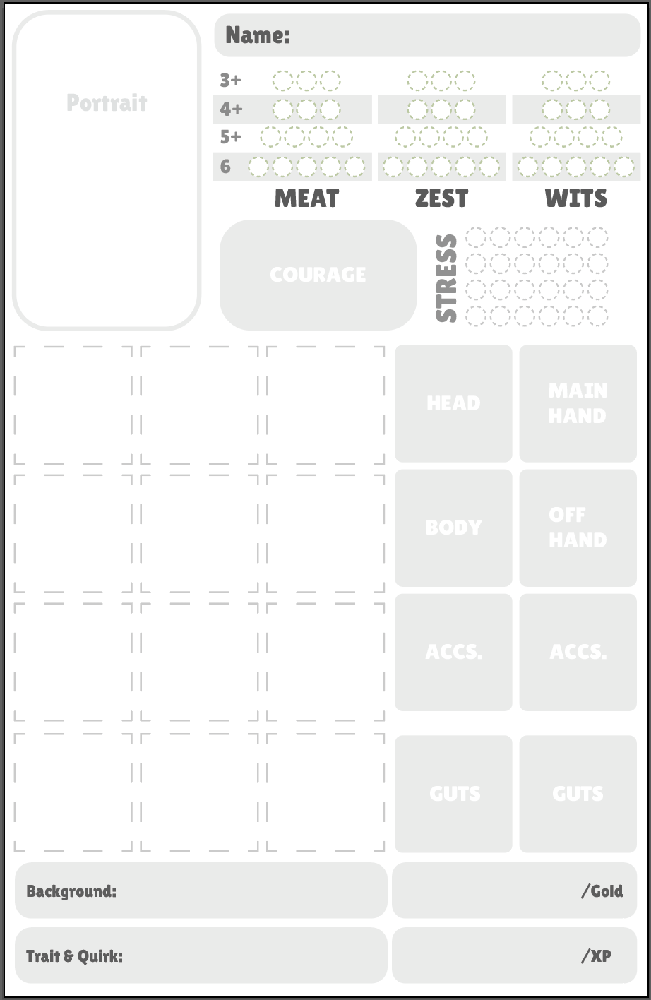

v1.0 - todo: playtest, basically - maybe condense/simplify
LOOT GOBLINS CORE RULEBOOK
All lore in this tome about the current state of the realm of Orrelia was meticulously curated, written and published by one "Lucious Caesar" and definitely not one Anthony Goblioni.
Alright folks, settle in. Get a cup of tea or whatever filth you drink. Let me explain the journey you're about to take. So, there is a version of this story in which the heroes win, the world impending doom is defeated and everyone goes home to a warm meal and a grateful city. This is not that version. This is the version about the little green folk who went into the dungeon after the heroes returned home to find the things they left behind.
The market bells clang twice before the Underhold properly wakes up. This is not laziness, this is intelligence. By the time the bells ring, the Watch has changed shifts, the early merchants have gone home disappointed and the streets above are full of people too tired to notice tiny shadows scurrying about.
The Rusty Fang fills up around bell three and a bit. Look, goblins don't use precise timekeeping. They use the smell of the street, the angle of light coming through the grates above and a collective agreement that close enough is good enough. A kobold in the corner is nursing a wounded leg and smoking a fat cigarette. Three trolls known as the Dalwick brothers, regulars at the Rusty Fang, are playing cards and probably cheating someone out of their coin. Somewhere behind the bar, Spit the goblin is wiping down a mug that has never, in living memory, been clean.
A folded note arrives by the hand of a nervous Lowfling who refuses to make eye contact. It has the Gobfather's seal, not his real seal of course, just one he uses when he wants to be believed without being implicated. There is a job. There's always a job. The party has until nightfall to be two streets north of the Merchant's Gate, at which point a locked door will be unlocked for exactly one minute.
They eat. They argue about who carries the rope. They fill up their packs. The city above does not know they exist, which is, to be quite honest, exactly how everyone prefers it.
They go up into the dark.
INDEX
- SECTION 1: CORE MECHANICS
- SECTION 2: CHARACTER CREATION
- SECTION 3: COMBAT AND MORALE
- SECTION 4: EQUIPMENT
- SECTION 5: EXPLORING DUNGEONS
- SECTION 6: TRAVEL, DOWNTIME & THE CITY
- SECTION 7: RUNNING THE GAME
- SECTION 8: WORLD BUILDING
- SECTION 9: BESTIARY
- SECTION 10: TABLES
SECTION 1: CORE MECHANICS
STATS
Every goblin has three stats.
| Stat | Covers |
|---|---|
| MEAT | Physical capabilities - strength, speed, dexterity, physical toughness |
| ZEST | Heart and passion - endurance, willpower, drive, spirit |
| WITS | Mind and cunning - intelligence, perception, cleverness, trickery |
At Zero
| Stat | Effect |
|---|---|
| MEAT 0 | Death. You are dead. The Gobfather sends his regards. |
| ZEST 0 | Cannot gain or spend COURAGE. Emotionally hollowed out. |
| WITS 0 | Feral. Must attack the nearest creature every round until restrained or knocked unconscious. |
Stat damage lowers your effective stat value until you recover, which also can change your save target number.
Your maximum stat value never changes.
TARGET NUMBERS & SAVES
When a goblin attempts to do something that isn't guaranteed succes, they roll a "save" using one of their stats. ie: To attempt to sneak past a guard roll a ZEST save.
To do so you roll a dice pool and if the Gob die or any single COURAGE die shows a number equal or above the target number you succeed.
A 6 is always succesful and cannot be discarded by STRESS.
| Stat Value | Target Number |
|---|---|
| 1-5 | 6+ |
| 6-9 | 5+ |
| 10-12 | 4+ |
| 13-15 | 3+ |
| 16+ | 2+ |
Always remember that on a failure, something still happens, just worse.
Example:
- Failed lockpick, you pick the lock, but your lockpick breaks off in the door and it cannot be closed again.
- Fail stealth, you’re seen but you still manage to get to the position you're trying to get.
As a GM, keep in mind "yes, but" and "no and" when players are rolling saves.
STRESS, DAMAGE & COURAGE
Stress
STRESS represents strain on your goblin trying to avoid mishap. It soaks damage before your stats take the hit. If you have free stress available, when you would take damage you can mark STRESS for each point of damage before having to reduce the MEAT.
Adding Panic to Dice Pools
- Each point of STRESS is reprsented by a d6 in dice pools, up to your level.
- ie: level 1: 1 STRESS die, level 4: maximum 4 STRESS dice.
- When rolling saves, any COURAGE dice that match a stress die are discarded.
- STRESS dice do not apply to combat rolls unless hindered.
Image of stress example.
Damage
When a goblin would take damage, they can attempt to grit their way through the pain. To do so mark 1 STRESS for every 1 incoming damage.
If no STRESS is available to mark the damage goes into MEAT unless otherwise noted.
When damage can't be mitigated by stress it is called chronic damage.
Courage
COURAGE is boldness, recklessness and goblin heart. It is a tracked resource with a max cap of your ZEST stat.
Each point of COURAGE represents one six sided die. When you gain COURAGE, stack a d6 on your COURAGE slot.
-
Gain COURAGE when
- you succeed on your Gob die.
- on a critical hit.
- when you take a risk that the entire table agrees is stupid.
-
Additional COURAGE sources also come from backgrounds, items and the GM.
-
A GM may award a player COURAGE when they do something that would make their goblin feel confident or brave.
-
Spend COURAGE to add a d6 to your pool. The maximum COURAGE you can add to your pool is your ZEST stat.
THE GOB DIE
The Gob die represents your goblins core. Their natural instinct.
The Gob Die is a single d6 and the base roll for everything. It should be easily identifiable from other d6.
- Anytime you succeed on the Gob Die, gain 1 COURAGE.
- If you succeed on the Gob Die with a 6 clear a STRESS as well.
Building Your Pool
- Base pool: 1d6 (the Gob Die)
- COURAGE dice:
- Spend COURAGE to add d6s to the pool.
- STRESS dice:
- For each point of marked STRESS, add 1 STRESS die to the pool.
- The number of STRESS dice in your pool can never exceed your current level.
- STRESS dice are not counted as results, they only exist to discard other dice.
- For each point of marked STRESS, add 1 STRESS die to the pool.
To help differentiate Gob dice, COURAGE and STRESS, it's useful to have different coloured d6.
Making a save
- Discard any COURAGE dice that match STRESS dice (ignoring 6s).
- If a remaining COURAGE or Gob die matches your save or higher:
Success
- If the Gob Die succeeds, gain 1 COURAGE
- If the Gob Die succeeds on a 6, clear a STRESS
A group save can be made by having all players taking part roll a save, if there are equal or more successes to failure all players succeed. COURAGE gain only comes from the individual save, not the group success. If players have STRESS they apply to all dice in the group.
Desperation Reroll
If you have 0 COURAGE and you roll your Gob Die, you may take 1 STRESS to reroll it, taking the new result.
A die may never be rerolled more than once.
Hindered and Bolstered
-
Hindered - when something significantly hinders you, add 1 STRESS die to your dice pool.
- This can exceed the STRESS level cap.
- This is also the only way STRESS dice can be added to attack pools.
-
Bolstered - when something significantly aids you add one free COURAGE die to your dice pool.
REST & RECOVERY
Quick Rest
Takes 1 Turn (~10 minutes) Sit down, eat something, catch your breath.
- Roll d4+1 and clear that much STRESS.
- If you eat food roll d6+1 instead.
- If in a dungeon, increase the Itch die one step.
Long Rest
Takes 1 Watch (~36 Turns) A proper meal and sleep. Clears all STRESS and restores d6+1 chronic damage from a stat.
Full Rest
Takes 1 week in safety Fully restores STRESS and all stats. Removes most long-term effects.
Eating
A goblin must eat during two watches minimum or gain the Hungry condition.
Rations have (4*) uses. Each use represents one meal.
Sleeping
A goblin must take at least 1 full Watch of sleep per day or gain the Exhausted condition.
TIME
| Unit | Length | Used For |
|---|---|---|
| Round | A few seconds | Combat action, pack retrieval |
| Turn | ~10 minutes | Exploration, The Itch |
| Watch | ~6 hours | Long rest, travel |
6 Turns = 1 hour 36 Turns = 1 Watch 4 Watches = 1 day
A GM may track a day through the marking of 36 turns. A grid like below for night, morning, afternoon and evening to represent 1 full day. Each column represents 1 hour. Each group represents 1 watch.
| Day | |||||
|---|---|---|---|---|---|
| ◯ | ◯ | ◯ | ◯ | ◯ | ◯ |
| ◯ | ◯ | ◯ | ◯ | ◯ | ◯ |
| ◯ | ◯ | ◯ | ◯ | ◯ | ◯ |
| ◯ | ◯ | ◯ | ◯ | ◯ | ◯ |
| ◯ | ◯ | ◯ | ◯ | ◯ | ◯ |
| ◯ | ◯ | ◯ | ◯ | ◯ | ◯ |
CONDITIONS
Conditions are physical tokens just like the items in Loot Goblins.
- Every goblin has two Guts slots that exist solely to hold a conditions.
- If both Guts slots are full they must go into your equipment slots or pack.
- If no spaces are available, drop an item to make room or take d12 chronic MEAT damage as you physically try to ward off the condition.
- Conditions clear as noted on the condition table.
- Conditions can stack unless noted, ie you can gain Concussed twice making your WITS save 2 target numbers harder.
- When a Condition is placed it cannot be moved until it's removed.
CONDITIONS REFERENCE
All conditions are [1]
| Condition | Effect | Clears |
|---|---|---|
| Minor Conditions | --- | --- |
| Disoriented | All rolls are Hindered | any Rest |
| Frightened | Must make a ZEST save to attack | Succeed on the ZEST save or any rest |
| Chilled | Take 1d4 ZEST damage reduced by DEF value every turn | Warmed by a fire during any Rest |
| Moderate Conditions | --- | --- |
| Slimed | Covers an equipment slot - that item cannot be used | When cleaned |
| Burning | Take d6 MEAT damage at the start of your action | When doused or smothered |
| Bleed | Take 1 MEAT damage at the start of your action | Treated with bandages/fabric |
| Blind | Must make a WITS roll before attempting any action requiring sight | Wash out |
| Immobilized | Cannot move | ZEST save as an action |
| Charmed | Cannot attack the charmer | MEAT is reduced or ZEST save as an action |
| Knocked | Knocked prone and attacks against are bolstered | Standing up |
| Major Conditions | --- | --- |
| Winded | MEAT target number +1 | Long Rest |
| Rattled | ZEST target number +1 | Long Rest |
| Concussed | WITS target number +1 | Long Rest |
| Poisoned | On Vital Blow, take d4 ZEST damage (Cannot stack) | Antidote or MEAT save during long rest |
| Diseased | Cannot clear STRESS | MEAT save during Long rest |
| Weary Conditions | --- | --- |
| Hungry | No additional effect | After eating |
| Fatigued | No additional effect | Quick Rest |
| Exhausted | If you would take a third Exhausted, gain Unconcious instead | Long Rest |
| Unconcious | Cannot take actions, move or speak | Splashed with water, hit by attack, Long Rest |
Permanent injuries (found in Section 3 Combat: Vital Blow) occupy the relevant body slot and can only be healed by magic. As a GM, create any relevant condition you need, be creative about it.
SECTION 2: CHARACTER CREATION
THE GOBFATHERS HOARD
At campaign start, roll the following for the Gobfather's starting Hoard:
- (Player count) x2 rolls on the Hoard Weapons table
- (Player count) +2 rolls on the Hoard Armour table
- (Player count) x2 rolls on the Hoard Odds and Ends table
- (Player count) x2 rolls on the generic Loot Table (page X)
- 3d10 x1000 for Hoard raw gold value
Hoard items will be used for character creation and interact with many mechanics in Loot Goblins.
The Gobfather's Ledger
To help take some cognitive load off the GM a character may choose to start with the Gobfather's Ledger.
This player will be known as the Accountant.
- The accountant keeps track of the amount of gold currently in the Hoard during the campaign.
- The accountant tallies the value of treasures added to the Hoard.
- While in possession of the Gobfather's Ledger, their rolls are bolstered anytime they roll to interact with the Gobfather.
Gobfather's Ledger item, folds out into sheet with spots to keep track of everything.
CHARACTER CREATION
- Roll stats - Roll 3d6 and discard lowest, down the line: MEAT > ZEST > WITS.
- Use a pen or marker to outline your max stat circles, this allows you to mark and erase lost stats with a pencil.
- Roll STRESS Threshold - Roll 1d6. If ZEST is 9+, roll 2d6 discard lowest.
- Use a pen or marker to outline your max stress circles as well.
- It may be easier to track your current STRESS by placing a die on the STRESS spot representing the amount of STRESS you have at the moment.
- Roll starting COURAGE - Roll 1d4. Place that many d6 on your COURAGE slot.
- Determine Background - Cross-reference your highest stat with starting COURAGE. On a stat tie, choose one.
- Take Background items - Take your two class based items.
- Take starting gear - Take rations, torch, 15ft rope and 1 weapon plus 1 item from the Gobfather's Hoard. Your pack size is determined by your background.
- Roll Name - Roll d66 twice on the Name table and combine for your full goblin name.
- Roll Physical Trait - Roll d66 once on the Physical Traits table.
- Roll Quirk - Roll d66 once on the Quirks table.
option kobold characters? meat: 1d6, zest 3d6 discard low, wits 3d6?
BACKGROUNDS
| COURAGE 1 | COURAGE 2 | COURAGE 3 | COURAGE 4 | |
|---|---|---|---|---|
| MEAT | Junkmonger | Sliprat | Pugpug | Zerkling |
| ZEST | Grumbler | Watchdog | Grubseer | Dingdong |
| WITS | Lurkfish | Filchweasel | Snitch | Boombro |
MEAT Backgrounds
Junkmonger (Strong but cowardly - the pack mule of the group)
- Pack: 3x4
- Ration, torch, rope, weapon of choice
- Chain and pulley - Hauling or moving heavy objects is bolstered. Can move objects impossible for other goblins.
- Pocket scales
Sliprat (Slippery, avoids fighting, survives by not needing to survive)
- Pack: 3x2
- Ration, torch, rope, weapon of choice
- Kickback Boots - When you dodge and take no damage, deal 1 damage to the attacker.
- Smoke pellets (3*)
Pugpug (Up close and personal, punches through their problems)
- Pack: 2x4
- Ration, torch, rope, additional item instead of weapon
- Dustknuckles - d4+d6 [1] Combo: when d4 is used to Break and succeeds, add 1d4 to damage.
- Lucky foot necklace
Zerkling (Pure caked up chaos - prefers to see red)
- Pack: 3x1
- Ration, torch, rope, may choose 2 weapons if both are light or med.
- Blood amulet - while not wearing armour, gain DEF4.
- Vial of rage-mushroom paste (3*)
ZEST Backgrounds
Grumbler (Tough as nails, grumpy as heck)
- Pack: 3x3
- Ration, torch, rope, weapon of choice
- Battered belt organizer - Does not need to reorganize pack to retrieve [1] size items from under other items.
- Flask of something awful but strong (3*)
Watchdog (Prefers pets to folks, smells terrible)
- Pack: 3x2
- Ration, torch, rope, weapon of choice
- Worgling Whistle - see Worgling rules
- Smelly meat (4*)
Grubseer (Reads omens in the rot, praises the dung beetle)
- Pack: 2x4
- Ration, torch, rope, weapon of choice
- Sacred beetle idol - while carried, your STRESS dice are d8s instead of d6s.
- Dung ball (4*)
Dingdong (Death has wrung their bell a few times)
- Pack: 1x4
- Ration, torch, rope, weapon of choice
- Soul in a jar - When you would gain Frightened, gain 1 COURAGE instead.
- Broken hero's blade
WITS Backgrounds
Lurkfish (Watches, waits, prefers to take notes)
- Pack: 3x2
- Ration, torch, rope, weapon of choice
- Ear trumpet - Press against any surface to hear through it. Detect number of creatures and vague intent on the other side.
- Rumour ledger
Filchweasel (Nimble fingers, quick eyes, gone before you notice)
- Pack: 3x3
- Ration, torch, rope, weapon of choice
- Sticky finger-wraps - Steal a [1] item from a creature or person without them noticing on a successful MEAT roll.
- Lockpick set (4*)
Snitch (The best information belongs to others)
- Pack: 3x2
- Ration, torch, rope, weapon of choice
- Forged documents (2)* - "I know a guy."
- Hand carved collapsible disguise kit
Boombro (Brilliant and unhinged, mostly unhinged)
- Pack: 2x3
- Ration, torch, rope, weapon of choice
- Volatile experimental bombs (6) d8+d0, Custom Load: before throwing declare a mode - Smoke (blinds all in area), Shrapnel (hits all in area for 2 damage), or Concussive (forces Vital Blow on affected). Oops: when the combat die rolls a 1 the bomb goes off in the Boombro's hand instead.
- Mysterious vial labeled "DO NOT" (1*)
Worglings
The Watchdog's companion. A small, stupid, loyal and extremely bitey puppy.
- character creation: Roll 1d6 for each of MEAT / ZEST / WITS / STRESS Threshold independently.
- Combat: Bite: d4+d4.
- Actions: Owner can command it to move and attack.
- Inventory: The Worgling has a [1] Body slot and a [1] Mouth slot.
- Dangerous Situations: Rolls WITS. On a failure it ignores commands until it feels safe.
- At 0 MEAT: Goes unconscious - does not die. Recovers with rest. Takes up [22] in a pack.
Worgling sheet img
Goblin Names
Roll d66. The first die is the row (1-6), the second die is the column (1-6).
Example: rolling 3 and 5 then 6 and 2 gives you Ooze Dribble.
| 1 | 2 | 3 | 4 | 5 | 6 | |
|---|---|---|---|---|---|---|
| 1 | Grix | Snot | Dong | Wort | Crud | Pib |
| 2 | Nebb | Squig | Dreg | Blotch | Yark | Scab |
| 3 | Muck | Grub | Fink | Titch | Ooze | Rot |
| 4 | Spit | Dunk | Glob | Turd | Welp | Gripe |
| 5 | Bog | Snak | Pox | Gnaw | Pork | Pus |
| 6 | Grisle | Dribble | Dook | Mash | Clod | Scrag |
Physical Traits
Roll d66 - first die is tens, second is ones.
| d66 | Trait | Description |
|---|---|---|
| 11 | Bumpy Skin | Covered in small, harmless nodules that feel like sandpaper. |
| 12 | Translucent Skin | Your flesh is like thin parchment; veins are faintly visible. |
| 13 | Hardened Nails | Your fingernails are exceptionally thick and yellowed. |
| 14 | Shimmer-Trace | You leave a faint, iridescent trail on objects you touch. |
| 15 | Forked Tongue | Exceptionally long, blue and constantly flicking. |
| 16 | Patchy Hair | Your hair grows in wild, matted clumps with smooth bald spots. |
| 21 | Whistling Neck | Small vents on your neck that whistle when you breathe hard. |
| 22 | Hollow Bones | You clatter like dry sticks whenever you move quickly. |
| 23 | Loose Skin | You have several excess folds of skin that must be tucked into clothes. |
| 24 | Receded Lips | Your blackened teeth and pale gums are permanently visible. |
| 25 | Rib Slits | Small vents on your ribs that expel a fine mist when you cough. |
| 26 | Double-Jointed | Your limbs bend at angles that look highly uncomfortable. |
| 31 | Sticky Sweat | Your sweat is thick and syrupy, causing dust and lint to cling to you. |
| 32 | Bulbous Nose | An oversized, rounded nose that whistles when you're nervous. |
| 33 | Brittle Fingertips | Your nails fall off frequently but regrow almost overnight. |
| 34 | Throat Lump | A pulsing goitre in your neck that thumps when you're excited. |
| 35 | Suction Fingers | Your fingertips make a soft "thwip" sound when letting go. |
| 36 | Copper Spit | Your saliva is orange-tinted and leaves metallic stains. |
| 41 | Crowded Teeth | Jagged teeth growing in odd places along your gums. |
| 42 | Bloated Belly | Your stomach is permanently tight and gurgles loudly. |
| 43 | Cloudy Eye | One eye is covered in a thick, white, non-functional film. |
| 44 | Spindly Limbs | Your arms and legs are unnervingly long and thin for your body. |
| 45 | Flaky Patches | Brittle, grey patches of skin that shed like dry leaves. |
| 46 | Heavy Scent | You emit a strong, earthy odor of wet moss and old fur. |
| 51 | Knobby Toes | Your feet are wide and lumpy, resembling ginger roots. |
| 52 | Oily Feathers | Small, dark feathers sprout from your back and shoulders. |
| 53 | Multiple Navels | You have several extra belly buttons along your midsection. |
| 54 | Shoulder Face | A half-formed, twitching face appears in the skin of your shoulder. |
| 55 | Vivid Veins | Large, purple veins writhe noticeably under your skin. |
| 56 | Peeling Palms | The skin on your hands sheds constantly in thin ribbons. |
| 61 | Webbed Extremities | Fleshy webbing connects your fingers and toes. |
| 62 | Stony Calluses | Your heels and palms are covered in grey, rock-hard skin. |
| 63 | Leathery Ears | Huge, floppy ears covered in fine, bristly hair. |
| 64 | Waxy Ears | Golden-brown wax builds up and flakes from your ears. |
| 65 | Fungal Growth | Small, shelf-like mushrooms grow in damp areas of your skin. |
| 66 | Single Brow | A massive, protruding ridge of bone sits over your eyes. |
Quirks
| d66 | Trait | Description |
|---|---|---|
| 11 | Tooth-Grinder | You grind your teeth loudly whenever the party is being quiet |
| 12 | Scab-Picker | You compulsively pick at dry skin or old scars |
| 13 | Nose-Fiddler | You always have a finger in your nose when lost in thought |
| 14 | Trash-Snacker | You find the flavor of stale bread and vegetable rinds irresistible |
| 15 | Sleeve-Wiper | You always wipe your face and nose on your sleeve or gear |
| 16 | Nail-Hoarder | You keep a small pouch of your own shed teeth and nail clippings |
| 21 | Loud Sneezer | Your sneezes are explosive and always catch others off guard |
| 22 | Third-Person Talker | You refer to yourself as "this goblin" or by your name |
| 23 | Soil-Taster | You lick the walls of every room to "get the flavor" of the place |
| 24 | Nervous Tic | You compulsively pull at your hair whenever you try to lie |
| 25 | Heavy Drooler | You wake up every morning in a puddle of your own spit |
| 26 | Back-Scratcher | You use any available sharp object to scratch your back |
| 31 | Coin-Hider | You hide your favorite gold coins in your mouth for safekeeping |
| 32 | Open-Sky Dread | You whimper and whine when not underground |
| 33 | Bone-Chewer | You gnaw on dry bones, making a loud crunching noise |
| 34 | Blade-Licker | You believe licking your weapon makes it hungrier for a fight |
| 35 | Giggle-Fits | You burst into giggling whenever you see someone get hurt |
| 36 | Dirt-Collector | You refuse to wash, believing grime is a source of luck |
| 41 | Clandestine Eater | You only eat while hiding under a blanket or cloak |
| 42 | Toe-Biter | You have a habit of biting your own toenails when stressed |
| 43 | Tooth-Counter | You must count the teeth of every creature you defeat |
| 44 | Dark-Talker | You talk to yourself in the dark to keep the voices away |
| 45 | Stingy Licker | You lick your items so no one else will want to touch them |
| 46 | High Whistler | You whistle through your teeth; a high, piercing sound |
| 51 | Joint-Cracker | You compulsively crack your knuckles and neck constantly |
| 52 | Soot-Rubber | You rub grease and soot into your skin to blend into walls |
| 53 | Name-Hider | You refuse to say your name, fearing it gives others power |
| 54 | Moon-Howler | You howl at the ceiling whenever the party rests indoors |
| 55 | Door-Sniffer | You must sniff the keyhole of every door before you open it |
| 56 | Trash-Trader | You try to trade garbage and detritus for the others' gear |
| 61 | Vomit-Pointer | You determine directions by looking at your own |
| 62 | Meat-Shunner | The smell of cooked food makes you gag; you prefer it raw |
| 63 | Bile-Reader | You read your future in the patterns of your own spit |
| 64 | Sleep-Giggler | You laugh in your sleep like a mischievous imp |
| 65 | Tall-Tale Teller | You claim every scar was given to you by a different God |
| 66 | Hoard-Sniffer | You claim to smell gold by pressing your nose to the floor |
ADVANCEMENT
When the party returns to the Underhold, they may add any treasure they have acquired to the Hoard. Take those items and add them to the Hoard and tally up the sum value of all those items. Divide that sum evenly among all players as XP.
Players may choose to not add items to the Hoard to keep for themselves or sell for gold, those items do not contribute to XP. Players can also donate gold. 1 gold rewards 1 XP.
| Level | XP Required |
|---|---|
| 2 | 1,000 |
| 3 | 3,000 |
| 4 | 6,000 |
| 5+ | +5,000 per level |
On each level up:
A stat can never naturally exceed 15, this is Loot Goblins, not Loot Ogres.
- Roll (level)d6 for a new STRESS Threshold. If highest die is higher than current STRESS maximum, take the new value. If not increase STRESS threshold by 1.
- Roll 1d6 for each stat. Whichever rolls highest increases by 1. If a tie the player chooses.
- At level 5 and higher, instead any stat that rolls 1 decreases by 1.
- Roll a d6. On a 1-2 roll another physical trait and quirk and add them to your goblin.
A goblin peaks at level 4, this is their prime.
At level 5 and above age begins to take it's toll and a goblin's stats may slowly decrease.
Players should lean into this narratively.
- If level up causes a stat to be reduced to 0:
- MEAT: the goblin dies of old age.
- ZEST: the goblin loses their love for adventure and retires.
- WITS: the goblin's mind deteriorates to a point where adventuring is off the table.
SECTION 3: COMBAT AND MORALE
COMBAT
Initiative
- If the party has the jump on the enemy they go first
- Otherwise roll a ZEST save
- on a success that player acts before the enemies
- on a failure they act after
- If enemies surprise the party, the enemies go first
Round Structure
Each character gets one action and one move per Round. A Round is a few seconds of combat time. Goblins can move roughly 20ft in one round. Standing up takes 10ft of movement.
Both GMs and players should do their best to incorperate the environment into the action when possible. Playing on a grid with minis is also viable, counting each square as roughly 5 feet.
Some items are marked ~, these are Quick Use. On your turn you can use them and still take your action.
Gang Up
When multiple attackers wish to attack the same target, roll all attacks as one dice pool then assign a sing Break die and Damage die from the entire pool.
- COURAGE can be added as normal from each attacker.
- STRESS dice affect the entire pool.
Attack Sequence
- Declare target
- Target chooses defensive option (if available)
- Roll attack pool
- Weapon dice + any COURAGE dice (Gob die is not used, nor STRESS unless hindered)
- Assign dice
- Pick one die as the Break die and one as the Damage die. COURAGE dice may be assigned to either
- If Hindered any dice that match the STRESS die are discarded, unless Critical Hit
- Break die beats DEF
- Assign damage
- Shield uses absorbs damage
- If no shield - damage goes into character STRESS
- Character STRESS full - MEAT takes damage
- 3 or more damage to MEAT - roll Vital Blow
- MEAT hits 0 - death.
Hindered and Bolstered in combat
- Hindered - when something significantly hinders your attack (restrained, target has cover, bad footing, darkness etc.) add 1 STRESS die to your attack pool.
- Multiple things can hinder your attack but you can only be Hindered once.
- Any STRESS from being Hindered affects the entire pool.
- Bolstered - when something significantly aids your attack (flanking, target is prone, surprise etc.) add one free COURAGE die to your attack pool.
Dual Wielding
When wielding two weapons, you must choose only one to attack with when you attack.
- d4 dice are the exception to this and may be included in your attack pool on every attack.
- With d4 dice added, still only assign a single Break and Damage die as normal.
Critical Hits
After rolling your attack if you break the targets defenses and both assigned dice show the same value this is a critical hit.
- Roll an additional Damage die of the same type assigned then deal the sum of all Damage dice.
- This additional die can also critically hit if it rolls the same value as the Break and Damage dice.
Critcal hits cannot be discarded from STRESS dice.
Defense
The Break die must beat the target's defense (DEF) for the attack to land. If it does not, the attack is thwarted.
Let your players know an enemies DEF when they first attack it. They'll figure it out after the first attack anyway and this will speed up resolving attacks.
The enemy has DEF3. Snot Rot rolls a 4 and a 1 on their attack dice. They assign the 4 to Break and the 1 to damage. The 4 Break beats DEF3 therefore the attack hits and deals 1 damage to the enemy.
Defensive Options
Dodge
- Gain 1 STRESS or discard 1 COURAGE to dodge an attack.
- Cannot dodge if wearing heavy or full armour or wielding a shield.
- The incoming attack is hindered.
- d4 dice cannot be dodged; they can never be discarded.
Block
- Shields can absorb damage from attacks by marking 1 use per 1 incoming damage.
- d10 assigned Damage dice are too powerful to be blocked.
- When a shield's uses are fully marked it breaks. If damage exceeds remaining shield uses the player takes it as normal.
- Using most shields requires MEAT 7 or higher.
Parry
- If wielding multiple weapons, choose one to Parry with. d4 are not added to these rolls.
- Attacker declares attack
- Defender declares parry and rolls their own attack dice - assigns their Break and Damage dice.
- Attacker rolls - assigns their Break die and Damage dice.
- Higher Break die wins and their damage deals chronic MEAT damage.
- Tie - weapons clang, both combatants gain 1 COURAGE, no damage dealt.
- COURAGE dice cannot be added to a Parry.
Vital Blow
When a player takes 3 or more MEAT damage from an attack, they must roll a Vital Blow. Make a MEAT save.
| Result | Effect |
|---|---|
| Success | Shrug it off, you take the hit clean. |
| Failure | Roll on the Injury Table. If the source of damage has a Vital Blow effect that replaces rolling on the Injury Table. |
Injury Table
Roll a d6 after a failed Vital Blow save. You cannot add COURAGE to this roll.
| Roll | Condition | |
|---|---|---|
| 1 | Permanent Injury | See Permanent Injuries below. |
| 2 | Vitals Struck | Gain Unconcious. |
| 3-6 | Flesh Wound | 1 chronic MEAT damage. |
Permanent Injuries
Permanent injuries must be placed in the slot corresponding to the injured body part. The item in that slot is dropped and the slot is disabled until healed.
| d4 | Injury example | Slot disabled |
|---|---|---|
| 1 | Decapitated hand, Crushed arm | Hand |
| 2 | Broken jaw, Gouged eye | Head |
| 3 | Broken back, Internal injury | Body |
| 4 | Smashed knee, Decapitated foot | Accessory |
- If the slot is already empty, no item is lost
- Permanent injuries can only be healed by magical means
- Dropped items land on the ground and can be picked up by anyone
Morale Break
When a monster takes 3 or more MEAT damage from an attack, it must make a ZEST save or flee/surrender. Enemies with Indomitable automatically succeed on this save.
SECTION 4: EQUIPMENT
INVENTORY
Character Sheet Layout
[pack slots][head][mh]
[ ][body][oh]
[ ][acc][acc]
[ ][guts][guts]
| Slot | Examples |
|---|---|
| Main Hand (MH) | One-handed weapon, [1] items |
| Off Hand (OH) | One-handed weapon, shield, [1] items |
| Head | Helmet, hat, necklaces |
| Body | Armour, cloak, robes |
| Accessory | Quiver, boots, tools, consumables |
| Pack | Grid-based storage |
| Guts | Conditions |
Item Sizes
Sizes are noted as [XYZ...] where each digit represents a column and the value of that digit is how many cells are filled in that column.
Examples - make into an image
[1] - Quick and light weapons, small items, light armour, accessories
[x][ ][ ]
[11] - Heavy weapons, heavy ranged weapons, full armour
[x][x][ ]
[ ][ ][ ]
[22] - Huge items, bundled gear
[x][x][ ]
[x][x][ ]
[123] - Awkwardly shaped loot, large treasures
[x][x][x]
[ ][x][x]
[ ][ ][x]
The Pack
Items are stored on a grid. You may only retrieve items that do not have any items above them.
Items must always be placed against the bottom of the pack or an item below them, an item cannot "float" with empty spaces under all it's squares.
Items can be placed in the pack in any orientation that fits.
Retrieving an item
You can spend 1 Round retrieving an item from your pack.
- You can only retrieve an item if there are no items above any part of the item you're retrieving.
- To use an item from your pack you must first move it to an appropriate equipment slot or have a free hand.
Reorganizing your pack
You can spend 1 Round to freely reoganize all the items in your pack.
- Conditions cannot be moved from where they're placed.
Item Usage
Items have a number of uses shown as (n). After using an item mark a use. During combat, do not mark a use after each attack, instead after combat is over roll a d6 for all weapons and armour used. On a 1-2, mark one use.
When all uses are marked the item is unusable until restocked or repaired.
Consumables are marked (n*) and are destroyed when the last Use is marked.
Repairing and Restocking Items
Items marked (n) can be repaired or restocked at a relevant merchant or tradesman for 10% of the item's gold value.
Consumables marked (n*) cannot be repaired or restocked - they must be replaced.
WEAPONS
All weapons have (3) unless stated otherwise.
| Class | Dice | Slots | Notes |
|---|---|---|---|
| Improvised and Barehand | d2+d2 | [1] | Improvised weapons have (2*) |
| Quick | d4+d4 | [1] | d4 dice cannot be discarded by Dodge |
| Light | d6+d6 | [1] | |
| Medium | d6+d8 | [1] | Main hand only |
| Heavy | d8+d8 | [2] | Two-handed |
| Reach | d4+d10 | [2] | Two-handed, d4 dice cannot be discarded by Dodge |
| Ranged Light | rd4+rd6 | [1] | Is it's own ammunition. (5) standard, d4 dice cannot be discarded by Dodge |
| Ranged Heavy | rd6+rd8 | [2] | Requires ammunition equipped such as Quiver (5) |
Ranged dice will be noted as rd ie: 1rd6 for a ranged d6. Two-handed weapons occupy both Hand slots. To roll a d2, roll a d6 with Odd representing 1 and Even representing 2.
ARMOUR
All armour has (3) unless stated otherwise.
| Armour | DEF | Slots | Requirement | Notes |
|---|---|---|---|---|
| Light | 2 | Body [1] | None | No restrictions |
| Medium | 3 | Body [1] | None | No restrictions |
| Heavy | 4 | Body [1] | MEAT 7+ | Cannot dodge |
| Full | 5 | Body+Head [2] | MEAT 10+ | Cannot dodge |
Unarmoured creatures have DEF1.
SHIELDS
Shields absorb incoming damage. When a shield's uses are fully marked it breaks. If damage exceeds remaining shield uses the player takes it as normal. Using a shield requires MEAT 7+.
| Shield | Uses | Slots | Notes |
|---|---|---|---|
| Buckler | (2) | [1] | Has d4+d4 attack dice |
| Wooden shield | (3) | [1] | Standard |
| Steel shield | (5) | [1] | Standard |
| Tower shield | (7) | [2] | Takes up both hands |
MAGIC SCROLLS
Magic is exceedingly rare for goblins. They aren't innately magical and most folk wouldn't trust them with spells as far as they could throw them. Not to mention goblins can't really read.
Magic spells are cast with three incantations that shape the spell. They always follow Form > Flow > Facet.
When goblins find a spell scroll and wish to cast it, they squint at it until something happens. Roll a Form, a Flow and a Facet to find out what the spell does, then commit dice for power. The player then explains what the spell does. An illiterate goblin commits to how powerful a spell is before knowing what it does.
Spell Scrolls occupy [1] and have 3 uses. Commiting dice for power marks a usage per die. When all uses are marked the scroll turns to ash, unless Major Mishap 6 is rolled.
Identifying magic items: Make a WITS save to identify a magic item's properties without casting it. On a failure, the item activates.
Casting Scrolls
- Make a WITS save. On a failure you can't read the spell; swap step 2 and 3.
- Roll 1d12 Form, 1d12 Flow then 1d12 Facet to see what the spell does.
- Declare how many dice you are committing: 1d6, 2d6, or 3d6.
- Roll all power dice simultaneously.
- If any two dice match there is a Mishap. If all three match there is a Major Mishap.
- The spell is cast at the declared tier.
Power tiers
| Dice | Scale | Mishap chance |
|---|---|---|
| 1d6 | One target, minor effect, one round | None |
| 2d6 | Small area or lasting effect, d6 rounds | 17% on a match |
| 3d6 | Large area, severe effect, lasts entire turn | 44% on a match |
When a spell calls for a save, the target rolls the relevant stat save.
- MEAT save: dodge, resist physical force, endure pain
- ZEST save: shake off fear, resist compulsion, hold your nerve
- WITS save: see through illusions, resist mental domination, notice danger
Form table (d12)
| d12 | Form | Shapes |
|---|---|---|
| 1 | Sudden | Instant, explosive, without warning, all at once |
| 2 | Slow | Gradual, creeping, delayed, building over time |
| 3 | Wide | Spreading, sweeping, affecting everything nearby |
| 4 | Deep | Penetrating, thorough, reaching the core of a facet |
| 5 | Sharp | Precise, cutting, targeted, affecting one thing exactly |
| 6 | Thin | Stretched, diluted, barely-there, spread too far |
| 7 | Heavy | Weighty, crushing, impossible to ignore |
| 8 | Hollow | Empty at the centre, a shell, missing something vital |
| 9 | Bright | Vivid, overwhelming, impossible to look away from |
| 10 | Tangled | Knotted, complicated, affecting multiple things at once |
| 11 | Fractured | Split, fragmented, affecting things in pieces |
| 12 | Distant | Remote, removed, affecting things far away or long ago |
Flow table (d12)
| d12 | Flow | Could mean |
|---|---|---|
| 1 | Blast | Force or energy hurled outward - damage, knockback, destruction |
| 2 | Bind | Hold, restrain, fix in place, seal shut, fuse together |
| 3 | Shrink | Reduce in size, diminish in power, compress, weaken |
| 4 | Summon | Call forth, conjure, drag here from somewhere else |
| 5 | Rot | Decay, corrupt, curse, wither, foul |
| 6 | Swap | Exchange, reverse, invert, transpose two things |
| 7 | Grow | Enlarge, multiply, amplify, spread, accelerate |
| 8 | Steal | Extract, drain, take without touching, siphon away |
| 9 | Reveal | Expose, illuminate, unmask, make visible or known |
| 10 | Cloak | Hide, obscure, disguise, render invisible or undetectable |
| 11 | Shatter | Break apart, fragment, destabilise, cause to fall to pieces |
| 12 | Speak | Communicate, command, compel through words, give voice to |
Facet table (d12)
| d12 | Facet | Affects |
|---|---|---|
| 1 | Flesh | Bodies, wounds, physical matter, meat and bone |
| 2 | Light | Illumination, shadows, visibility, colour, fire |
| 3 | Mind | Thoughts, memories, will, fear, perception |
| 4 | Luck | Fortune, probability, fate, chance, cursed outcomes |
| 5 | Sound | Noise, voice, silence, vibration, hearing |
| 6 | Object | Objects, materials, gear, Door, walls, mundane things |
| 7 | Blood | Vitality, wounds, life force, poison, disease |
| 8 | Beast | Animals, vermin, swarms, creatures, instinct |
| 9 | Filth | Waste, rot, slime, disease, contamination, disgust |
| 10 | Door | Thresholds, passages, exits, entrances, barriers of all kinds |
| 11 | Name | Identity, true nature, reputation, what a thing fundamentally is |
| 12 | Hunger | Appetite, void, emptiness, consuming need, the absence of things |
Mishap tables
Spell Scrolls, at least compared to a Wizard casting a spell organically, are extremely unstable.
When two or more power dice match, roll on the Minor Mishap table. The spell still casts unless noted.
When all three dice match, roll on the Major Mishap table instead; the spell may not cast at all.
Minor mishap (d6)
| d6 | Effect |
|---|---|
| 1 | Backfire: Caster takes the spell's weakest effect. ZEST save to halve. |
| 2 | Misfire: Spell hits the nearest ally instead. They make a relevant save if needed. |
| 3 | Blowback: Gain Winded and Concussed. |
| 4 | Loud: Take d4 chronic WITS damage. |
| 5 | Unstable Arcana: Spellbook loses an extra charge on top of normal use. |
| 6 | Reversed: Flow and Facet swap places or invert the spell entirely. |
Major mishap (d6)
| d6 | Effect |
|---|---|
| 1 | Possession: WITS goes to 0 until Long Rest. |
| 2 | Destroyed: Spell fails and the book is destroyed. |
| 3 | Wild surge: Roll again on both mishap tables simultaneously. |
| 4 | Tear: A rift to another hex opens. All creatures in close range are pulled through on a failed MEAT save. |
| 5 | Swap: Caster and target exchange positions and current STRESS. WITS save to resist. |
| 6 | Amplified: Spell casts and regains all uses. |
- Scale with tier: 1d6 is a minor inconvenience affecting one thing for one moment. 3d6 fills a room and lasts the turn. The same Blast Flesh at tier 1 chips bone; at tier 3 it detonates creatures.
- Saves match the threat: Physical effects hit MEAT. Fear and compulsion hit ZEST. Illusions and mental effects hit WITS.
- Weird combinations are the point: Cloak Hunger, Rot Name, Speak Door - lean into them. The spell table is designed to create chaotic creative results.
- Reversed mishaps are a gift: When result 6 comes up on the minor table, ask the player what the opposite of this spell would be and make it happen.
SECTION 5: EXPLORING DUNGEONS
For information on creating dungeons, see Section 7: Running the Game.
THE ITCH
The Itch represents the dungeon waking up to the party's presence. It starts at 20.
- Every time the party takes a turn doing something, or makes noise, roll a d6 and subtract from the Itch.
- Itch hits 3: Foreshadow danger.
- Itch hits exactly 0: Increase it to 3 and foreshadow danger.
- Itch drops below 0: Roll an encounter and reset to 20. If you roll a 6, roll again and keep the new result.
- Taking a rest - increase the Itch die by one step (d6 > d8 > d10 > d12 > d20), resets upon leaving the dungeon for a Watch or longer.
The Itch only advances on Turns. Combat Rounds do not advance the Itch and the Itch die cannot step above d20.
DUNGEON PROCEDURES
Taking a Turn
Mark a Turn whenever the party takes an action that would take meaningful time; searching a room, picking a lock, treating a wound, having an argument. When a Turn is marked, roll the Itch die and subtract from the Itch.
Noise
When the party makes significant noise such as a fight, a dropped torch, a Boombro doing their thing, roll the Itch die immediately and subtract from the Itch. This is in addition to any Turn that may have been marked.
Light and Darkness
Torches generally have (4*) uses. Mark a use every 3 turns.
Goblins in darkness:
- All saves are hindered.
- Gain Rattled on a failed save.
A torch illuminates the immediate area. Rooms beyond the torchlight are considered dark. Lanterns provide steady light and are not consumable, they just need to be refilled with oil to regain uses.
Locks
To pick a lock a goblin can make a MEAT save. If they aren't using some sort of approriate tool their MEAT target number is increased by 2.
Traps
Traps are handled as a relevant stat save depending on how the player approaches them. Noticing a tripwire is WITS. Carefully disarming it is MEAT. Smashing through it is ZEST.
Never pull a "gotcha" on the players. Always foreshadow traps in the area they're in.
Social Encounters and Reaction Rolls
When an NPC or monster's reaction to the party is not obvious, roll 2d6:
| Roll | Reaction |
|---|---|
| 2 | Hostile |
| 3-5 | Wary |
| 6-8 | Curious |
| 9-11 | Friendly |
| 12 | Helpful |
Results are not permanent. How the party behaves or negotiates will shift the reaction up or down.
Running Social Encounters
Loot Goblins doesn't have a dedicated social system but it doesn't need one. The reaction roll, a WITS or ZEST save and the Gob Die are sufficient, but they work best when the GM has a clear sense of how to apply them.
The reaction roll sets the opening position, not the outcome. A result of Wary means the NPC is cautious, not hostile. What happens next depends entirely on what the party does. Players who say the right thing, offer something valuable, or create a clever distraction can shift a Wary result to Curious or Friendly without any additional roll. The dice resolve uncertainty; creative engagement should be rewarded directly, before bringing the dice out.
Saves are for persuasion under pressure. If the party is negotiating from a position of strength, with good information and a plausible offer, no roll is needed, whatever they're trying to do just works. Saves are for situations where success is genuinely uncertain: bluffing past someone who has reason to be suspicious, talking their way out of a fight that's already started, convincing someone to do something against their immediate interests. WITS are for when interacting with their minds, ZEST for their emotions.
Courage rewards cleverness. The GM can award COURAGE directly for social victories that feel earned. A bluff that worked, a negotiation that found an unexpected common ground, a moment where the goblins used their perceived stupidity as an advantage. If a player feels proud or is excited for something they pulled off, their goblin should feel it as well.
Failed social rolls produce complications, not dead ends. A failed save doesn't mean the NPC attacks or the conversation ends - it means the party's position weakened, the NPC's suspicion increased, or the window for a particular approach closed. Something still happens. The scene continues. On a failure, introduce a complication: the NPC asks a question the party can't easily answer, a third party arrives, the Itch increases. GMs can track an NPCs standing on the reaction table as the players interact if it helps.
Multi-goblin social encounters can use group saves. If multiple goblins are contributing to a negotiation, run it as a group save; everyone rolls and if there are equal or more successes than failures, it succeeds. This makes the party's collective nerve and presence matter.
SECTION 6: TRAVEL, DOWNTIME & THE CITY
OVERLAND TRAVEL
The City sits at the centre of the world. Everything worth looting is a few hexes out and everything worth fearing is further.
The party operates on a 5x5 hex flower. The City occupies the centre hex. The surrounding ring of six hexes is within easy reach. The outer ring of twelve hexes is expedition territory; getting there, doing a job and getting back is more costly.
The Travel Sequence
Each Watch of travel, resolve in order:
- Pick a direction
- Roll for weather
- Roll WITS to navigate - one party member may act as navigator to roll. On a failure the party drifts to a hex beside the desired hex that borders the current hex.
- Roll the encounter die - d6, on a 1 roll on the regional encounter table, on a 2 foreshadow an encounter.
Movement
Passing to a new hex takes minimum 1 full Watch, this is increased depending on the difficulty of terrain.
| Terrain | Watches to travel |
|---|---|
| Road | 1 |
| Open ground | 1 |
| Forest / hills | 2 |
| Swamp / mountain | 3 |
Weather
At the start of each Watch of travel, roll d6 on the table for the current season. Weather persists for the full Watch unless the GM decides otherwise.
Spring (d6)
| Roll | Weather | Effect |
|---|---|---|
| 1 | Downpour | Movement through forest and hills costs 2 Watches instead of 1. Torches go out. |
| 2 | Thick fog | Navigation rolls are Hindered. Cannot see more than one hex. |
| 3 | Mud and drizzle | Arrive Exhausted when moving through any non-road terrain. |
| 4 | Grey and damp | No effect. Miserable anyway. |
| 5 | Clear morning | No effect. |
| 6 | Warm and bright | No effect. Goblins are suspicious. |
Summer (d6)
| Roll | Weather | Effect |
|---|---|---|
| 1 | Blistering heat | Mark a ration at the end of each Watch or gain Exhausted. |
| 2 | Thunderstorm | Navigation rolls are Hindered. Camping without shelter means no Long Rest benefit. |
| 3 | Oppressive humidity | After a Watch of travel, gain a STRESS. |
| 4 | Hot and still | No effect. |
| 5 | Warm breeze | No effect. |
| 6 | Perfect travelling weather | Move one additional hex this Watch on road or open ground. |
Autumn (d6)
| Roll | Weather | Effect |
|---|---|---|
| 1 | Early frost | Gain Chilled on arrival. Camping without fire means no Long Rest benefit. |
| 2 | Heavy rain and wind | Navigation rolls are Hindered. Torches go out. |
| 3 | Dense mist | Cannot see more than one hex. Encounters trigger on a 1 or 2 this Watch. |
| 4 | Grey and cold | No effect. |
| 5 | Crisp and clear | No effect. |
| 6 | Golden afternoon | No effect. Enjoy it, it won't last. |
Winter (d6)
| Roll | Weather | Effect |
|---|---|---|
| 1 | Blizzard | Cannot move this Watch. If caught in the open, mark a ration, 1 STRESS and gain Chilled. |
| 2 | Heavy snow | Movement through any non-road terrain costs +1 Watch. Navigation rolls are Hindered. |
| 3 | Freezing fog | Cannot see more than one hex. Encounters trigger on a 1 or 2 this Watch. |
| 4 | Hard frost | Arrive Exhausted when moving through any non-road terrain. |
| 5 | Cold and clear | No effect. |
| 6 | Unexpectedly mild | No effect. Goblins are very suspicious. |
Getting Lost
The party never knows they are lost until they arrive somewhere unexpected or make a successful WITS save to recognise the terrain.
Camping
Camping takes one full Watch and counts as a Long Rest. Roll the encounter die at the end of camp.
A fire is warm and comfortable but may be visible to folks throughout the hex.
Regional Encounter Tables
Each distinct region on the hex has its own d6 encounter table, using the same structure as dungeon encounter tables. Results should include weather events, evidence of danger, travellers and things that are simply strange. A 6 is always bad. If you roll a 6, roll again and keep the new result.
You can find example encounter tables in the Tables section.
THE SEASONS AND THEIR FESTIVALS
The world has no months, because months are an administrative convenience and the world predates administration. There are four seasons of approximately sixty days each, named by what they do rather than what they are.
Seasons
The Turning (Spring)
The Turning is named for the world turning back toward the sun, which is either a metaphor or a literal astronomical event depending on who you ask.
The Mud Festival: Held in Glimmerhold at the start of the Turning, when the ground thaws and becomes slightyly problematic. Officially a civic celebration of spring, unofficially a chance to cover everything in mud, which the Warrens and the Underhold participate in enthusiastically and the Pale Ward refuses to attend. The Underhold's version has been running for centuries and involves a mud-throwing competition with brackets, judges and a trophy that is itself made of dried mud and has to be rebuilt each year.
The First Green Market: When the first produce of the Turning arrives in the Coin, the market runs for three days without closing. Every criminal enterprise in Glimmerhold uses the First Green Market as cover and the Watch knows this. Fortunately, they also need to eat and the First Green Market has excellent prices.
The Underhold Remembers: A quiet Underhold ceremony with no surface equivalent. Every resident lights a candle for something they left to come to the Underhold. A place, a family, a situation. The candles are placed on paper boats in the sewer rivers. They float east into the main channels of the Orrelian rivers. Nobody follows them out of the Underhold. That's the point.
The Bright (Summer)
The Bright is what everyone calls the long days. It is the best season for travel, the worst season for the Underhold (which gets warm and stays warm) and the season in which most of the heroic adventuring happens, because nobody writes ballads about saving the world in the rain.
The Warden's Run: A footrace from the city gate to the east river crossing, a distance of roughly 43 kilometres. Anyone can enter and the Watch runs it as an official event. The unofficial version involves the same route and different participants, usually with several items that need to be moved between start and finish without official notice. The winner of the unofficial version has never been announced, but the results are known.
The Burning Night: Midsummer. Every district of Glimmerhold burns something. The Pale Ward burns a ceremonial wicker figure. the Coin burns debts (symbolically). the Planks burn a large sea creature which produces a specific colour of smoke visible for roughly 50 kilometres. The Underhold burns the Board, everything currently posted on the job board outside the Rusty Fang is taken down, burned and a new board goes up the next morning. Everything on the new board is treated as a fresh contract.
The Silk Fair: The major commercial event of the Bright, drawing merchants from the outer reaches and beyond. Three days of legitimate commerce and approximately twice that in illegitimate commerce running alongside it. The Gobfather's operation makes more during the Silk Fair than in any other equivalent period. He has a private celebration and if you play your cards right one day you will join.
The Falling (Autumn)
The Falling is named for leaves and also, less charitably, for what happens to plans made during the Bright when they encounter the realities of the coming Cold.
The Harvest Debt: A formal accounting period recognised throughout the region where debts are tallied and contracts reviewed. The Gobfather's internal accounting coincides with the Harvest Debt; the Hoard is assessed, standings are reviewed, any goblin who's contributed significantly gets a better cut of the next job and any goblin who's been a problem gets a conversation. The Harvest Debt meeting is the only time the Gobfather sends a general invitation to the Underhold rather than individual summons, attendance is optional and non-attendance is noted.
The Grey Procession: Held at the end of the Falling, the Grey Procession is a surface ceremony that the Underhold watches from shadows. Families who lost someone in the Northern War walk through the city, in silence, carrying a stone, to a caravan that leaves for the Quiet Wall. Nobody organises it and nobody needs to. It happens because it needs to happen.
The Underhold Fair: Three days where the Underhold trades with itself, with every resident setting up a stall, pit, blanket, or cleared section of floor. The range of goods available is impossible to describe without a list that would be twenty pages long and include several items whose origins shouldn't be asked about. The Gobfather opens the Fair, Tony circulates and takes notes.
The Colds (Winter)
The Colds are honest about themself.
The Dark Week: Seven days at the height of the Colds where the Underhold goes mostly dark by agreement, with lanterns reduced to one per passageway. It is ostensibly resource conservation, it is actually a period where the Underhold's various communities observe their own traditions privately, which is easier in the dark. What the kobolds do, nobody asks. What the Wights do, nobody wants to know. What the goblins do is mostly eat and complain about the cold, which is tradition enough.
The Feast of Found Things: An Underhold tradition where every resident brings something they found during the year, a piece of loot, a scavenged item, something retrieved from a dungeon or a street or a discarded pile and puts it in the centre of the Rusty Fang. Spit cooks a meal, everyone eats from the same pot and the found things are distributed by Spit's judgment, which is arbitrary, impeccable and never questioned. The item Spit keeps is always the least obviously valuable thing in the pile and is never quite what it appears to be.
Night of Ice: The coldest night of the Colds. By common agreement the night on which anyone who has a grudge may speak it plainly and anyone who hears it may respond plainly. All of it is considered said and done by morning. This is, theoretically, a method of clearing the air. Practically it's the most interesting night of the year in the Underhold and nobody sleeps.
The Brightwatch Dinner: This doesn't actual involve the Brightwatch. Named after the Brightwatch tradition of holding a formal dinner to review the year's dungeon work, which became public knowledge after Sarboras described it to several people during the Silk Fair. The Underhold version is a mock-formal dinner where goblins report on the year's jobs in the style of the Brightwatch reviewing their work. Those who partake find it extremely funny and the Brightwatch has no idea it exists.
THE GOBFATHER
The Gobfather is the boss, the bank and the party's only safety net. Treasure goes to him. The Hoard is his. New goblins come from his resources. Everything flows through him.
He tracks what you do in The City. He hears things and he doesn't forget.
Running the Gobfather
The Gobfather should feel like a presence even when he's not in the room. His name comes up in rumours, his symbol appears on hideout doors, contacts mention him. The party should never feel like they have escaped his awareness.
He communicates through intermediaries. A message delivered by a nervous elf, a note under the door with penmanship too neat to be a goblin's, an invitation that is not really an optional.
Very rarely will he meet the party in person, if he does it's probably very important.
His voice: Calm, specific, unhurried. He doesn't threaten, he merely suggests what could happen. There's a difference. He asks questions he already knows the answer to and he never forgets.
What he will do for the party: Provide work, maintain the Hoard, replace dead goblins, pull strings when it suits him and occasionally protect them from consequences if he's happy with them. All at a price of course.
What he won't do: Take risks for goblins who have not earned it, explain himself, forgive the same mistake twice.
Tony Goblioni
Tony Goblioni is the Gobfather's right hand man. A reknowned cartographer throughout the realms, he maps everything, says nothing and reports it all back to the big man. When the party is in Bad Standing, Tony may appear; on a delve, in town, at the table next to you in the tavern. He's always taking notes.
Standing
The Gobfather's opinion of the party is tracked as Standing. This is a party-wide tracker, not individual; one goblin's mistake will reflect on everyone.
Each level of standing has 4 marks before it drops or raises.
| Square | In Debt | Bad Standing |
|---|---|---|
| ◯ ◯ X ◯ | ◯ ◯ ◯ ◯ | ◯ ◯ ◯ ◯ |
Move the X left or right whenever the party shifts their standing to track how the Gobfather feels.
| Standing | Status |
|---|---|
| Square | You're even. Business as usual. |
| In Debt | You owe. Whenever you would gain XP, halve it (rounded up). |
| Bad Standing | You're being watched. Contact costs increase and Loyalty cannot improve. Whenever you would gain XP, halve it (rounded up). |
Standing drops when you pull from the Hoard unsanctioned, burn a Contact, fail a job, or embarrass the operation.
Standing improves when you bring back exceptional hauls, handle a job cleanly, or do something that makes the family look good.
Standing during Play
Square: Business as usual. He assigns work and takes his cut. The party is a tool that is currently working correctly.
In Debt: He's patient but he is counting. Jobs may come with conditions attached. He mentions the debt once, clearly and does not mention it again until it matters.
Bad Standing: He's watching. Tony Goblioni may appear. Jobs dry up or come with impossible conditions. He's not punishing the party, he's testing whether they're worth the trouble to keep around. If the party proves their worth, move them back to Square. If they don't, the Gobfather stops returning their messages.
Escalation
While in Bad Standing, if the party causes serious problems like burning contacts, embarrassing the operation or drawing Watch attention escalate how the Gobfather feels in steps.
- A message. Polite and clear.
- A meeting. The Gobfather describes what happens next if nothing changes.
- Tony Goblioni keeping an eye on them full time.
- The party's next job is designed to solve the problem they created.
- He stops protecting them. The party is on their own. Folks of the Underhold may shun them.
He does not send someone to hurt them, he simply removes the reasons why folks haven't been hurting them.
The Gobfather as a Quest Giver
Jobs from the Gobfather should feel different from jobs off the job board. They are more specific, better paid and more dangerous. They also carry implicit expectations; the Gobfather doesn't assign jobs he expects to fail. If he sends the party somewhere, he believes they can handle it.
Occasionally a job from the Gobfather has a second objective not always mentioned. The party may discover this mid job or not at all. He isn't deceiving them, he simply doesn' share information he doesn't think they need.
The job was to retrieve a magical idol. What he actually wanted was to know who else was in that cellar and whether they had opened the sealed door. He expects the party's to find out and let him know, but doesn't specifically mention this.
JOBS
The Gobfather assigns work when he has it. When he doesn't or when he's not speaking to the party, there's a board in the Underhold outside the Rusty Fang pub where folks post jobs they don't want to handle themselves. Nobody reputable posts on that board, there are other less shady job boards around The City and if the party is sneaky enough or has the contacts they can take on those jobs.
When the Gobfather assigns a job it takes priority. Refusing drops Standing immediately. Cleanly finishing a job for the Gobfather will increase Standing.
Rolling a Job (d20)
If the party needs work and the Gobfather isn't offering, roll d20 on the job board. Roll 1d6 x10 for pay.
If you want to put the job in a random hex:
- roll a d6
- 1-2 is in the outer ring
- 3-6 is the inner ring
- Roll a d6 to choose an inner hex
- Roll a d12 to choose an outer hex
| d20 | Job | Target | Twist |
|---|---|---|---|
| 1 | Retrieve a stolen item | A tomb, crypt, or burial site | The item is cursed and the original owner knew it |
| 2 | Clear out a nest | A cellar, sewer, or crawlspace beneath something civilised | The space connects to something larger |
| 3 | Deliver a package | Someone on the other side of the map | Something in the package is moving on its own |
| 4 | Find a missing folk | Last seen entering a dungeon | They don't want to be found |
| 5 | Collect a debt | Someone on The City outskirts or a nearby settlement | The debtor has hired protection |
| 6 | Scout a location | An abandoned structure within a hex or two | Something already lives there |
| 7 | Steal a document | A wealthy or powerful folk's property | Three other crews are after the same thing |
| 8 | Escort someone safely | Across one or more hexes | The folk being escorted is the danger |
| 9 | Destroy something | A site of religious or magical significance | Destroying it wakes something up |
| 10 | Retrieve a body | A dungeon, recently explored | Still warm |
| 11 | Plant false evidence | A rival's base or property | The Gobfather is behind this. |
| 12 | Capture something alive | A creature in the wilderness | It's much bigger than described |
| 13 | Guard a location | A building, vault, or vehicle | The threat is already inside |
| 14 | Map a dungeon | Unexplored area nearby | Someone else is mapping it from the other end |
| 15 | Steal a weapon or valuable | A powerful or dangerous folk passing through | They are looking for goblins specifically |
| 16 | Burn something down | A structure outside The City | It's occupied |
| 17 | Deliver a message | Someone who has reasons to distrust goblins | The message will give them more reasons |
| 18 | Find out who is asking questions | Someone operating quietly in The City | It's Tony Goblioni |
| 19 | Recover Hoard loot that went missing | Somewhere in the last dungeon the party visited | Another goblin crew took it |
| 20 | The Gobfather calls in a favour | It's personal, he won't say more | This wasn't posted by the Gobfather |
RUMOURS
Before a job, the party can spend time in The City gathering information. This costs nothing but a downtime Scheme action or a visit to a contact. Roll d10 on the generic table, then roll d6 on the relevant regional modifier table and apply both results.
Rumours are usually only partially true. That's why they're rumours.
Generic Rumour Table (d10)
| d10 | Rumour |
|---|---|
| 1 | The place is empty. Cleared out recently. Whoever did so left in a hurry. |
| 2 | There's treasure there but it belongs to someone who will notice it's gone. |
| 3 | Something lives there that shouldn't be alive. Nobody who has seen it agrees on what it looks like. |
| 4 | Two groups are already fighting over it. The party is walking into the middle. |
| 5 | Someone powerful wants this location left alone. They haven't said why. |
| 6 | There is a way in that nobody knows about. The person telling you this knows about it. |
| 7 | The last crew that went didn't come back. Before that a different crew, same result. |
| 8 | It's not what it looks like from outside. Everyone who lives nearby knows this. Nobody talks about it. |
| 9 | Something valuable was taken from there recently. The original owner is actively looking for it. |
| 10 | The Gobfather has an interest in this location. |
Regional Modifiers
After rolling on the generic table, roll d6 on the table matching the hex terrain. Add this detail to the rumour.
Aquatic
| d6 | Modifier |
|---|---|
| 1 | The water level has been rising. It's higher than it should be. |
| 2 | Something in the water reacts badly to fire. |
| 3 | The approach is only passable at low tide. The window is narrow. |
| 4 | A boat was found drifting nearby. No crew and no damage. |
| 5 | The thing everyone is afraid of only comes out at night. |
| 6 | There's something on the bottom. It's been there a long time and it's not a wreck. |
Swamp
| d6 | Modifier |
|---|---|
| 1 | The path through changes. What worked last time may not work this time. |
| 2 | Don't light a fire near the black water. The locals are deadly serious about this. |
| 3 | Something marks it's territory with sound. If the sound stops, run. |
| 4 | The ground looks solid. It's not. The locals know where to step. |
| 5 | Whatever is in there has been there longer than The City has existed. |
| 6 | There was a settlement here once. Nobody knows what happened to the inhabitants. |
Desert
| d6 | Modifier |
|---|---|
| 1 | Travel at night. The heat alone will kill you by midday. |
| 2 | The sandstorms move fast and come without warning. |
| 3 | There's water there and something is guarding it. |
| 4 | The ruins are older than anyone can date. What is written on the walls is not a language anyone recognises. |
| 5 | Something beneath the sand tracks movement by vibration. Standing still helps. |
| 6 | The last group brought back gold that crumbled to dust within a week. |
Forest
| d6 | Modifier |
|---|---|
| 1 | The trees are strange near the dungeon. |
| 2 | Don't follow anything that looks like a path. The real paths are unmarked. |
| 3 | Something in there is hunting, by sound. Silence is the only defence. |
| 4 | That forest is older than The City. It remembers things and doesn't like visitors. |
| 5 | There is a clearing at the centre but nothing will grow in it. Nothing has for years. |
| 6 | Whatever lives there has been watching the treeline for weeks. It knows the party is coming. |
Grassland
| d6 | Modifier |
|---|---|
| 1 | There's nowhere to hide on the approach. Whatever is there will see you coming. |
| 2 | The road nearby is watched and not by the Watch. |
| 3 | It changes hands regularly. Whoever holds it now is not who held it last month. |
| 4 | The locals give it a wide berth. They will not say why. |
| 5 | Something happened there during the last war. The area is dying. |
| 6 | A merchant who passed nearby last week is offering money for information about what's inside. |
Tundra
| d6 | Modifier |
|---|---|
| 1 | The cold will kill you. Warm clothing is not optional. |
| 2 | Something has been preserved in the ice for a very long time. It's beginning to thaw. |
| 3 | The nights last longer than they should this time of year. Nobody explained this. |
| 4 | Sound carries differently out there. The party will hear things before they see them... or they think they do. |
| 5 | There are tracks in the snow leading in but none leading out. |
| 6 | Whatever is there goes dormant in the Colds and it's almost the Colds. |
Mountain
| d6 | Modifier |
|---|---|
| 1 | The pass is the only way in and out. |
| 2 | Noise brings the rocks down. |
| 3 | There is something at the summit that can be seen from the entrance. It should not be visible from that distance. |
| 4 | The air gets thin higher up. ZEST saves to push through. |
| 5 | Something nests on the cliffs above the entrance. It's territorial. |
| 6 | The dwarves sealed this place. The seal was broken from the inside. |
City
| d6 | Modifier |
|---|---|
| 1 | The Watch patrols the area regularly. The schedule is known, for a price. |
| 2 | The building has more floors below street level than above. |
| 3 | Someone influential owns or frequents this location. They don't want attention drawn to it. |
| 4 | There is a second entrance through the sewers. It's not on any map the party has seen. |
| 5 | The neighbours have learned not to ask questions. |
| 6 | The Gobfather is investigating this area. |
CONTACTS
Goblins don't have allies, they just know folks who haven't turned them down yet.
A contact is an NPC the party has a working relationship with. They don't come on adventures and generally they don't like the goblins. They do business with them because it benefits them.
Gaining Contacts
Contacts emerge in two ways.
From play - an NPC survives an encounter, a trouble table result introduces someone, a goblin does something memorable in town. The GM decides when an NPC becomes a contact.
From downtime - after succeeding on a Carouse, the player may find someone useful. Roll on the Contact Type table.
The Snitch may use their Forged Documents to declare a contact exists, explaining how they know them. The contact is real and functional. Roll on the Contact Type table.
Using a Contact
Players state what they need and spend a Watch visiting/contacting the contact. The GM sets a cost - gold, a favour owed, an item, information. Pay it and the contact delivers.
Contacts generally won't do dungeon jobs, wet work, or anything that puts them in direct danger.
Loyalty
Each contact has a Loyalty track from 0 to 3, starting at 2. The GM tracks Loyalty but doesn't have to share the number, the players should be able to feel it through interactions with the contact.
| Loyalty | Status |
|---|---|
| 3 | Friendly. Cost is reduced. They might volunteer information. |
| 2 | Professional. Standard cost, no trouble. |
| 1 | Strained. Cost is increased. They're looking for a way out. |
| 0 | Burned. Roll a WITS save; on a success they ghost you, on a failure they actively work against you. |
Loyalty increases by 1 when you pay more than asked, send business their way, or do them a genuine favour.
Loyalty decreases by 1 when you stiff them, bring heat to their door, or ask for something that costs them.
Contacts and the Gobfather
The two systems work off each other.
When a contact hits 0 Loyalty the Gobfather hears about it. Drop one step on the Standing tracker. He built those relationships over years.
When the party is in Bad Standing all contact costs increase and Loyalty cannot improve until Standing returns to Square. Everyone in The City knows the Gobfather. If he's unhappy with you word gets around.
When the party is Square contacts may occasionally volunteer information about Gobfather business; jobs coming, who else he's sending, whether he's been asking about you. Little scraps but enough to be useful... or dangerous.
Contact Types (d8)
| d8 | Contact | What they offer |
|---|---|---|
| 1 | Fence | Moves stolen goods, knows what things are worth |
| 2 | Crooked guard | Looks the other way, knows who's watching |
| 3 | Rat catcher | Knows every sewer and tunnel under The City |
| 4 | Physician | Treats wounds and conditions, expensive, not a wizard |
| 5 | Rumormonger | Knows something about everything, sells it cheap |
| 6 | Blacksmith | Repairs and restocks gear outside normal merchants |
| 7 | Cultist | Access to strange items and stranger favours, suspicious |
| 8 | Rival goblin crew | Uneasy truce. Will trade information. |
DOWNTIME
When the party returns to The City, treasure goes to the Gobfather. XP is tallied and split and the Hoard grows. Then comes the question of what to do with yourself until the next job.
While in The City, the party may spend a day doing downtime activities. Each player who wishes to take a downtime activity chooses one and explains to the GM what they wish to do.
Remember that goblins must still eat twice per day and take at least one full Watch of rest or suffer the consequences.
Carouse
Requires gold from the Hoard. State how much you're pulling and whether the Gobfather knows about it.
Sanctioned - you ask; he says yes or no based on your current Standing. If yes, roll up to 3d10. The amount of gold you withdraw is (n)d10 x10. You have (n)x2 days to repay the gold with either cold hard cash or treasure.
Unsanctioned - you just take it. Roll up to 3d10 x10 and add that much gold to your inventory. Roll a WITS save. On a failure the Gobfather knows. He's not angry, but he knows. Drop to Bad Standing on the Standing tracker.
After figuring out if it's sanctioned or not roll a ZEST save.
| Result | Effect |
|---|---|
| Success | Gain 1 COURAGE for each d10 rolled. Gain a contact. |
| Failure | Gain 1 COURAGE. Roll on the Trouble Table. |
Trouble Table
Roll 1d12 on a failed Carouse.
| Roll | Trouble |
|---|---|
| 1 | You owe someone in town 50 gold. They know how to get ahold of the Gobfather. |
| 2 | You accidentally started a rumour about the Gobfather. He heard it. Roll a WITS save or drop one step on the Standing tracker. |
| 3 | You joined something. You're not sure what. They meet on Thursdays. |
| 4 | A merchant is furious with you specifically. Their cousin is a guard. |
| 5 | You made a bet you can't remember making. Pay 30 gold by the end of next session or lose a random item from your pack. |
| 6 | You told someone about the dungeon. Not where, just that it exists. The Itch die increases 1 step next delve. |
| 7 | You woke up with a tattoo. It means something to someone. Three NPCs have recognised it so far. |
| 8 | You have a new pet. It's small and it smells. [11] |
| 9 | Tony Goblioni was there. He was taking notes. |
| 10 | You owe a favour to someone the Gobfather does not like. Both of them know. |
| 11 | You are pretty sure you got married. |
| 12 | The Gobfather heard everything. He is not angry, he's disappointed. |
Hustle
Spend a day doing something scrappy in The City. Odd jobs, running errands for folks who don't ask questions, clean work. Describe what you want to do and Roll a WITS save.
| Result | Effect |
|---|---|
| Success | Gain d10 x 10 gold. If you're Square, keep it. If In Debt, it goes to the debt. |
| Failure | Gain half that (rounded up) and a complication. Move down 1 mark of Standing. |
Craft
Declare what you want to make and how. The GM decides if it's plausible given what you have. Provide your materials and tools, the quality of each determines the size of the dice you roll.
Crafting scrolls: A goblin may attempt to copy a spell as a single-use scroll with the Craft action from a spellbook or another scroll. The Materials die is equal to the amount of charges left on the spell being copied. The tools die is based on the object being used for the scroll itself and the goblin's skill with magic is based on their WITS.
Junk-mixing A goblin can attempt to combine consumables into more powerful consumables. Combine 2 consumables OR 1 consumable + 1 item as your Materials.
Materials total value determines the die used.
1-20 gold: Poor | 21-50 gold: Adequate | 51+ gold: Good
Tools depend on what the player presents. Barehands is poor. A hammer is adequate. A toolbench is good.
| Poor | Adequate | Good | |
|---|---|---|---|
| Materials die | d4 | d6 | d8 |
| Tools die | d4 | d6 | d8 |
| Magic Skill | WITS 1-7: d4 | WITS 8-12: d6 | WITS 13+: d8 |
Roll the crafting pool and assign one die to Quality, Time and Magic Skill if needed.
| Goal | Low result | Average result | High Result |
|---|---|---|---|
| 1-3 | 4-6 | 7-8 | |
| Quality | Item has reduced uses | Item has normal uses | Item has bonus uses |
| Time | Takes an additional day | Takes the day | Finished ahead of schedule, free day |
| Magic Skill | Reroll Flow & Form | Reroll Facet | Reroll none |
| Junk-mix | Materials destroyed. Gain Rattled. | Combine both effects into one. | Combine both effects into one, remove a downside. |
Standard uses for crafted items start at (3).
Scheme
Spend a day pursuing something that doesn't fit any other activity - tracking down a lead, scoping out a location, hunting for a specific item, researching a dungeon, threatening someone, finding a contact. Tell the GM what you're trying to accomplish. The GM decides what save to make.
If it's a long term scheme you can create a track to mark the progress over time. On a success, mark the track, on a failure a complication arises and no progress is made.
On a success, you make meaningful progress or achieve the goal outright. On a failure, you make partial progress, hit a complication, or attract unwanted attention. Either way something happens.
THE SAFE HOUSE
The safe house is the party's base of operations. A cellar, a condemned building, a room above a sympathetic tavern, a section of sewer that nobody else wanted. It's not glamorous but it's home.
The party may acquire a safe house by spending gold from the Hoard. The Gobfather does not own it but he knows it exists. They may also spend their own gold on a safe house, in this case the Gobfather has no idea.
Getting One
| Safe House | Cost | What it is |
|---|---|---|
| Hole in the wall | 1000 gold | A single room, one entrance, no amenities. Fits the party. Barely. |
| Proper base | 3000 gold | Two or three rooms, a back exit, somewhere to sleep that isn't the floor. |
| Established hideout | 6000 gold | A real space. Multiple rooms, defensible, room for guests and gear. |
What It Does
A safe house is where the party sleeps, plans and keeps things they don't want to take out adventuring.
It provides:
- A place to take a Full Rest safely
- Storage for items - personal stashes, items the Gobfather does not know about
- A location contacts can reach the party without going through the Gobfather
- A base to return to that is not the Gobfather's operation
Upgrades
Each upgrade costs gold from the Hoard or the party's personal funds. Only one of each upgrade per safe house.
| Upgrade | Cost | Effect |
|---|---|---|
| Workshop | 300 gold | Counts as Good tools for crafting. |
| Hidden stash | 150 gold | A concealed 4x4 storage grid. Requires a WITS save to find by anyone not shown where it is. |
| Back channel | 200 gold | A secret secondary entrance unknown to anyone outside the party. |
| Bunk room | 400 gold | A Quick Rest taken here clears all STRESS, a Long Rest clears all stress and you may roll a d6 to restore a stat. |
| Warning system | 100 gold | Tripwires, noise makers, a street urchin keeping watch. The party always has one turn of warning before anyone attempts to enter. |
| Infirmary | 800 gold | A whyzician can visit once per session. Clears one condition from a party member that would require magical healing for 200 gold. |
If It Gets Compromised
If the Watch, a rival crew, or an enemy finds the safe house the party has one round of warning if they have the warning system upgrade, none if they don't. Everything in the hidden stash stays hidden from the intruders on a successful group WITS save. Everything else is evidence, loot, or leverage.
A compromised safe house can be abandoned and a new one purchased. Any upgrades are lost.
CAPTURE
Eventually, the party may have a run in with the Watch, bounty hunters or merely good folks of the realm looking to get paid. Getting caught is not the end but it is a different kind of problem.
When a goblin is captured, whether arrested by the Watch, taken by enemies, knocked out and dragged off - effectively defeated but not killed, they are Captured. Strip their equipped items, they keep nothing visible. Whatever is hidden in a pack they might keep - the GM decides based on how thoroughly they were searched.
Captured is captured regardless of who has you. The Watch and a dungeon warlord run different operations but the cell feels the same.
Roll a d8 to determine how many days the goblins have until execution, or their captors deliver them to worse captors.
The Cell
Each day imprisoned, roll 1d6 on the Cell die for each goblin captured.
Flavour the events to the environment where they're being held.
| d6 | Event |
|---|---|
| 1 | Rough treatment. Make a ZEST save, on a failure take d4 MEAT damage. |
| 2 | Someone in the next cell knows something useful. WITS save to communicate without being heard. |
| 3 | A guard is careless. MEAT save to lift a small item - lockpick, key, something sharp. |
| 4 | Another prisoner offers a deal. Roll Reaction. They may or may not be able to deliver. |
| 5 | Quiet day. Nothing happens. Gain 1 COURAGE out of spite. |
| 6 | An opportunity presents itself. Roll on the Escape table. |
Getting Out
There are four ways out.
Escape - Roll on the Escape table when an opportunity arises. Each attempt that fails makes the next one harder, increase the die rolled for the Cell table by one step, a number rolled not on the table is treated as a 1.
Bail - The free members of the party can pay to get someone released. Cost is d6 x 50 gold pulled from the Hoard. The Gobfather may or may not approve. Being bailed out does not clear the charge - it just means you are out while it hangs over you.
The Gobfather - If Standing is Square or better, the Gobfather can pull strings. Takes one full day. Costs a favour. Drops Standing one step. He will not do this twice.
A Contact - If the players can convincingly describe how a Contact could get them free, let them figure it out. As a baseline it will cost 1 point of Loyalty on top of whatever favour or compensation the Contact would want.
Escape Table (d6)
| d6 | Method |
|---|---|
| 1 | Through the window. MEAT save, on fail take d4 MEAT damage on the way out. |
| 2 | Talk your way past a guard. WITS save. On a failure, lose the opportunity and gain 1 STRESS. |
| 3 | Run for it, the guards can't catch you. ZEST save. On a failure, take d4 damage and lose the opportunity. |
| 4 | Pick the lock. MEAT save. Harder without tools - TN +2 without lockpicks. |
| 5 | Slip out during a distraction. ZEST save - nerve and timing. On a failure you miss your chance. |
| 6 | Someone left a door open. No roll required. Something is wrong. |
What You Lost
Items stripped on capture are held in evidence or taken as loot depending on who has you. On release or escape the party can find their items in storage in the location of their imprisonment.
Charges
If arrested by the Watch, charges hang over the goblins until resolved. While charges are outstanding, the goblin cannot use the Hustle action; nobody will hire someone the Watch is looking for. Charges can be cleared by a bribe, a contact, the Gobfather, or simply leaving The City for long enough that everyone forgets.
SECTION 7: RUNNING THE GAME
Loot Goblins is not a game about heroes. It's a game about the little monsters in the background of somebody else's heroic fantasy - the ones who scatter when the torchlight comes, who pick through the aftermath of battles they avoided, who have their own complicated lives happening entirely below the notice of the folks of the realms.
The players are goblins. They are not protagonists in the realm's story, they are stinky little background monsters.
Let this shape everything about how you build and run your game.
THE CITY
Alright friends listen up. The City is called Glimmerhold by the folk who put it on maps and the City by everyone else. There's only one city that matters within traveling distance and that whole map-naming exercise starts to feel a bit presumptuous if we're being honest. Don't tell that handsome devil Tony Goblioni that, though. He may get offended, heh.
Now Glimmerhold... Glimmerhold is old, not impressively old where everything is grand and crumbling in a dignified manner, but old in the way that a leather boot is old. Worked over, repaired, repaired again and maintained past the point where any reasonable folks would have just bought a new boot. Several of it's districts are built directly on top of older districts and nobody is entirely sure what's underneath. The Underhold is one of the answers to that question and it's by no means the most interesting one.
The City of roughly 100,000 residents (locals and tourists, mind you) is governed by the Council of Wards. Now these uptight scumbags are a committee of twelve ward-representatives who meet quarterly to argue mostly about city drainage and have collectively failed to pass a budget in eleven years. The actual running of things is handled by a permanent civil service that has learned to work around said Council and occasionally without its knowledge. The Council itself is not corrupt exactly and let's just say they're merely decorative when it comes to actually governing the city.
The Watch, formally the Glimmerhold Municipal Guard, are most definitely not soldiers. These are cowards with clubs and a badge. They work in pairs, carry lanterns after dark and are primarily motivated by not having to write up reports. A goblin who causes no visible disorder is a goblin the Watch has no administrative reason to engage with. There is however a Watch Captain who takes this personally. Hessa Vorn. Captain Vorn is a woman of terrifying competence but one great personal failing; she believes against all available evidence that the city can actually be made orderly. And boy is she wrong, impressively so, despite her best efforts.
Districts worth knowing
-
The Coin Quarter is full of merchants, money, noise, crowds and excellent cover. This is the kind of place where a small figure moving quickly is assumed to merely be making a delivery. The markets run three watches a day; but if you want the good stuff, the black market runs all four.
-
The Docks, colloquially known as The Planks to us locals. No questions asked is the motto round there, a promise and occasionally an epitaph. Everything that enters Glimmerhold unofficially has'ta come through the Planks first. It also smells worse than the Underhold, unless you're a big fan of sashimi.
-
The Anvil is a clanging industrial headache where smiths turn steel into swords and the Watch arrive like clockwork to soothe the sensitive ears of those Pale Ward saps next door. To craft so much as a rivet in this city, one has to first craft a business plan and present to Jarvis Pennington and his construct K-47, who make sure that every craftsman is honest about their trade.
-
The Pale Ward is where the wealthy live. High walls, private guards, the kind of quiet that is purchased and maintained. Us goblins have no business there. Although let's be honest, this has never, in all of recorded history, stopped us.
-
The Warrens, a surface-adjacent district of cramped housing and even more cramped ambitions. Some goblins and a few kobolds of particular confidence have managed to integrate here. These gobs are eccentric even by our standards but honestly us Underhold dwellers are bit envious. Sometimes you get tired of the dark and the damp.
-
Temple Row, you'll find eight temples to eight gods. Standing in a row like an argument that has been going on too long to remember why it started. The temple's clergy are mostly harmless. The crypts beneath them are most definitely not, but that's a job for more experienced goblins.
The eight gods are:
- Gorrath, god of fire and industry.
- the Drowned King (yes that one, or something wearing his face), god of rivers and endings.
- the Pale Lady, goddess of the Colds and long memory.
- Vresh, god of roads and travellers. That Brightwatch scumbag Corvin worships this nerd.
- the Howler, god of luck and poor decisions. A goblin favourite.
- the Builder, god of walls, foundations and things meant to last.
- the Unnamed, whose temple is the smallest and whose congregation is the most serious.
- Ol' Grum, god of honest work, who has the largest congregation and the least impressive architecture, which his followers consider appropriate.
A brief history of Magic
Okay, the only history goblins have with magic is exploding. Otherwise, magic in Orrelia is a highly regulated profession, formally administered by the Academy of Sanctioned Arts. They issue licences, set examinations and maintain a registry of every trained practitioner in the realm. Becoming a wizard takes centuries of study and mentorship and wielding magic without a licence is a criminal offence carrying penalties the Academy describes as "significant".
Now if you're looking to actually cast spells you want scrolls. Scroll magic exists in a legal grey area that the Academy insists is not grey at all and actually quite clearly black. Folks have been imbuing spells into scrolls and selling them through channels the Academy cannot trace and the Watch cannot find. Us goblins find scrolls the way goblins find most things; in places they weren't supposed to be, left by people who had bigger problems.
Occasionally I've heard of wizards going rogue, operating outside the law and traveling around the realm practicing unlicensed magic. Usually the Watch manages to bring them in but some of such criminals, or heroes depending on who you talk to, are still at large.
A note on magic and medicine: proper physicians in Glimmerhold are rare and expensive, but there exists a recognised profession somewhere between healer and hedge wizard known as a Whyzician. Practitioners who have studied enough magic to apply it medically and just enough medicine to know when to stop the magic. They are not entirely respected by either the Academy or the Temple physicians.
A goblin with sufficient WITS and a willing mentor could maybe qualify as a Whyzician. The Academy would find this outrageous. Grimbus Goldfinch would find it humorous.
THE UNDERHOLD
Moving below Glimmerhold, below the sewers, below the foundations of buildings that were already old when the current city was young, lies the most grand community of miscreants to ever grace Orrelia: the Underhold.
This place is the remains of a city that fell. Not in fire or flood, the way cities usually fall, but merely downward, slowly. Through a combination of deterioration, neglect and the particular Glimmerhold civic tradition of building on top of their problems rather than solving them. A few centuries of accumulated expansion above has left streets that have not seen the sky since most goblins great grandparent's great grandparents were young. The lanterns here burn an older different oil, a less reliable oil, casting the kind of light that makes everything look like a fuzzy memory.
Goblins didn't build the Underhold, they inherited it. We made it home and then, in the way of all communities that find themselves sharing a space, were joined by everyone else who needed one.
The Underhold is not a goblin city. This is a city where goblins were first, a distinction they are proud of and a distinction they would argue matters. They would argue this quite a lot in fact. The Gobfather doesn't rule the goblins. He provides for everything in the Underhold. All of it. The trolls, the kobolds, that one very old gnome who has been here so long nobody can remember them arriving. The Gobfather sees the Underhold as his, in the way a shepherd sees a flock; with genuine affection, clear authority and absolutely no illusions about the relationship. You'd best mind that.
If you are unwanted up above, the Underhold will take you in. That's not sentiment, it's policy.
The folks of Underhold:
Goblins are the most numerous and the most visible. Remarkable given that visibility is supposedly our least preferred quality. The goblin community is fractious, loud and staggeringly resilient. They work for the Gobfather, they complain about the Gobfather and they would die and occasionally do die, for the Gobfather. This is our idea of community.
Kobolds are small, crimson-scaled folk, vaguely draconic in such a way that a chihuahua is vaguely worg. They came down to the Underhold at least three generations ago when the surface temples started classifying them as vermin. They haven't forgiven this and they keep meticulous records of exactly how unforgiving they are. These fiesty little buggers are exceptional craftspeople, compulsive archivists and catastrophically litigious within the Underhold's informal legal system. There's roughly seventeen ongoing inter-kobold disputes that predate anyone currently alive still happening.
Cave Trolls, specifically the Dalwick family and their associates, arrived when the northern forests became less hospitable than advertised. Trolls are large, slow to anger and widely assumed to be stupid. An assumption the Dalwicks have spent several generations converting into a commercial advantage. They are, as a matter of fact, excellent businessfolk with a head for logistics, a talent for negotiation and an extremely accurate memory for who owes what to whom. Ontop of their natural bulk. This combination has made them indispensable to the Underhold's informal economy and has led to the Gobfather consulting Brug on financial matters more often than he publicly acknowledges. Brug, the Dalwick matriarch, runs the only bathhouse in the Underhold and enforces cleanliness standards that are, frankly, more rigorous than anything I've seen the surface districts manage.
Crowfolk are the Underhold's intelligence network, postal service and most reliable rumour exchange, often simultaneously. They'd like it noted that these are three separate services with three separate rates. They're lean, sharp-eyed birdfolk with dark feathers, quick wits and a memory for debts that borders on the supernatural. Their postal operation is officially led by a crooked elf named Kaelvar Lourrth, who has been running the Crowfolk's courier routes for three hundred sixty-one years. He pockets a modest handling fee on every delivery and is almost certainly reporting interesting package contents to at least two separate parties, though everyone uses him anyway because he's the fastest, most reliable delivery in the Underhold. If something happens in Glimmerhold, a Crowfolk heard about it. If something needs to go somewhere quietly, a Crowfolk will get it there.
Lowflings, yes, not halflings. Lowflings. Not all halflings live in the pleasant surface burrows of song and legend. The ones who didn't fit, who are too loud, too ambitious, too disreputable, found their way down here. They run three of the Underhold's six taverns and all of its bakeries. Some instincts survive any amount of upheaval, try a gutter croissant.
Wights are not technically undead and also technically not alive. They find the question of definition to be in poor taste. They arrived in the Underhold during the Winter of Palest Fog, when the swamp to the east became briefly but intensely frozen and hostile. They've kept to the deeper passages ever since, not bothering anyone, with the understanding that no one asks them questions in return. Precisely the arrangement all parties want honestly.
The Underhold is also home to many others, such as surly dwarves who've had enough of clan politics above, elves who've been exiled or simply walked away, orcs who've discovered the folks below actually pay better, bugbears who are considerably less intimidating than advertised once you get to know them and the occasional ogre who minds the ceilings without being asked twice. None of these folk are here because they're evil; a word the surface world applies with a generosity the Underhold has noticed and filed away. They're here because they needed somewhere to be and the Underhold, under the Gobfather's particular philosophy of family, opened the door.
Points of Interest
The Rusty Fang sits at the junction of three streets that have had eleven different names as of so far. The junction has been informally referred to as "the corner" for at least a century. The Rusty Fang is a tavern in the way that gravity is a force; reliably present, hard to argue with and responsible for a great number of falls. Don't forget to tip.
Speaking of tipping, the proprietor is Spit. Spit is a goblin of indeterminate age, tremendous experience and the particular quality of stillness that belongs to people who have heard every story and have opinions about all of them. Spit has one ear (a business disagreement, years ago, which was resolved I suppose), one eye that is slightly more gold coloured than the other and a crossbow beneath the bar that has been discharged twice in recorded Underhold history. The records are accurate and the crossbow is loaded, I was there for one.
Spit does not take sides and does not extend credit. She makes a stew that contains something different every day and it's quite remarkable every time. If you ask what's in it you will be asked to leave.
The Board, you'll become quite familiar with this weathered piece of wood. A large cork job board outside the Rusty Fang covered in waterproofed parchment squares. This is where jobs get posted when the Gobfather doesn't have work. Nobody reputable posts on this board. This is not a deterrent, it is, for most of the Underhold, an endorsement.
The Gobfather's operation runs from somewhere deep in the Underhold that only a handful of people have ever been invited to see. It's quite a comfortable space. Messages come up by Crowfolk runner or Lowfling intermediary and gold comes down in quantities the surface world would find alarming if it knew. The arrangement sustains approximately four-thousand residents of the Underhold and indirectly much of the surface black market.
Also let's not forget Tony Goblioni. I.. he... is the Gobfather's right hand, one of the realms most proficient spies and the most dangerous person in any room when nobody is looking. He has been around the world more times than most people have been across Glimmerhold and his pack is three times as large as he is. Beyond the Underhold he publishes maps under the name "Lucious Caesar" and they are extraordinary maps. The kind of maps other cartographers study with a mixture of admiration and personal inadequacy. As Tony Goblioni he maps everything that actually matters and reports it all to the big man below because that's the job and the job is what he loves. He's also incredibly handsome.
FACTIONS
Every faction in the Loot Goblins world should be understood through three elements: goals, resources and fears. A faction without fear is a faction unable to be leveraged and leverage is where the interesting stories live.
Factions interact with the goblins primarily as employers, obstacles, or complications. They interact with each other regardless of the goblins entirely and the best sessions are the ones where the goblins slot into someone else's conflict like a very small, very motivated wrench into an already straining mechanism.
Major NPC statblocks can be found in the Bestiary.
The Gobfather's Operation
Goals: The Hoard to grow, the operation to run quietly and no problems that require fixing at scale.
Resources: The Underhold, every piece of information that flows through it and a network of contacts that extends further into the surface city than anyone up there would be comfortable knowing.
Fears: The Watch deciding the Underhold is worth the paperwork, a rival operation with better organisation and someone in the Brightwatch writing a report.
Relationship with players: They are the players' relationship. This is the faction the party navigates everything else through.
The Glimmerhold Ward Council
Goals: The city to run without complaint, ideally without anyone noticing who's running it.
Resources: Legal authority, municipal resources and the Watch, none of which they deploy with any particular efficiency.
Fears: A scandal. Specifically, the kind of scandal that ends careers. The Gobfather has files. The Council has always known this and has chosen, with remarkable unanimity, not to pursue the matter.
Relationship with players: A distant bureaucratic obstacle most of the time. Occasionally, a Ward Councillor needs something done quietly, which is where goblins who are not supposed to exist become extremely useful.
The Pale Ward Syndicate
Three noble families, the Venhalls, the Cresswick-Norths and the Mourne family, who have been competing for commercial dominance of Glimmerhold's import trade for sixty years. They don't use violence directly, preferring lawyers, tariffs, rumour, marriage and the occasional hired inconvenience. They're aware the Gobfather exists, have at various points attempted to use him and he has at various points allowed this while charging considerably more than they expected.
Goals: Each families wants pure control over Glimmerhold's economy.
Resources: Copius amounts of wealth and connections.
Fears: Each family fears the other family will rise up and surpass them, all three houses fear the Gobfather expands to the surface in a more public fashion.
Relationship with players: Jobs from the Syndicate families come through intermediaries and pay extremely well. They also tend to involve stepping directly into someone else's ongoing conflict, which the goblins are not briefed on in advance. The Syndicate does not consider goblins a part of society, which means they also don't consider goblins a threat until they very suddenly do.
Current status: The Venhalls and Mourne family are in active dispute over a shipping contract worth more than the party will see in three campaigns. The Cresswick-Norths are trying to benefit from both sides being distracted.
The families in brief:
House Venhall, Old money. Imports textiles, spices and several things that are not textiles or spices. The family matriarch, Lady Veth Venhall, is seventy-two, sharp as a dagger and has been underestimated for sixty of those years. Her youngest son Pell is charming and useless and owes the Gobfather more than he should.
House Cresswick-North, New money, which the old money finds distasteful and the newer money finds aspirational. They have the best lawyers in Glimmerhold, which is a great form of power. Lord Daven Cresswick-North is exactly as clever as he thinks he is, which turns out to be the most dangerous kind.
House Mourne, The Mournes have produced three Watch Captains, two Councillors and one incident that nobody names but everyone knows. They consider themselves the moral authority of the Pale Ward, which is the Pale Ward's loss. Selna Mourne runs the family now. She is fair, careful and the only one of the three who has ever actually spoken to a goblin, which she considers research and the goblin in question considers extremely unsettling.
The Brightwatch Company
The Brightwatch are Glimmerhold's most celebrated adventuring company. This is somewhat like being the tallest person in a city of very short people. True but not entirely the point.
They are competent and this must be acknowledged first, because everything else is easier to understand once you've acknowledged that the competent version of a hero is still, from the goblin perspective, a five-foot tall absolute force of nature with a weapon and no peripheral awareness for smaller creatures.
They've cleared at least four-hundred fourteen dungeons, been celebrated in multiple ballads, have an account at a decent inn and maintain a standing relationship with the Watch that makes Captain Vorn simultaneously grateful and suspicious. They have never once noticed the goblins.
This is partly skill on the goblins' behalf and partly the comfortable blindness of people who are used to being the most important thing in any room.
Goals: The Brightwatch Co. is merely in it for the thrill of adventure. They want to be rich and famous and they're succeeding.
Resources: Connections to the Watch, respected by the Syndicate, a large bank vault and an even larger wealth of experience in dungeons.
Fears: Definitely not death. The Brightwatch are mostly afraid of being shunned by the public at large.
ALDRIC VANE, Fighter
Who he is: A second son who joined the Brightwatch because the family estate wasn't his, neither was the patience for law school. He is handsome in the way of men who have never been told they are not and principled in the way of men who have never had their principles tested by genuine adversity. He does not hate goblins so much as he has a settled, uncomplicated belief that goblins are a problem. He has never spoken to one at any length. This is, for both sides, probably fine.
GM note: Aldric is the party's first obstacle and eventual complication. He is not cruel. Given sufficient reason, a goblin who saves someone he loves or a betrayal by someone he trusts, he can be moved. This should take at least two sessions to set up and feel earned. Until then; he is an obstacle.
MAREN ASHVEIL, Wizard
Who she is: Maren came from the Academy and left it with excellent marks, a research posting and a slowly building suspicion that the Academy was mostly interested in keeping its knowledge to itself. The Brightwatch was meant to be temporary fieldwork. That was four years ago. She is the most dangerous member of the group because she is the only one who really pays attention. She has not noticed the goblins, but she has noticed evidence of goblins. Small scrapes on dungeon floors, sections of loot that were clearly examined and replaced, passages that smell of fungus and farts.
She has a hypothesis and it is, unfortunately, correct.
GM note: Maren knowing about the party is a slow-burn arc. Start with Pebble staring in the wrong direction. Escalate to notes found. Consider having her leave a note in a dungeon room that says, very simply, I know you're here. I don't think you're the problem. The party gets to decide what to do with that.
SARBORAS FESS, Rogue
Who she is: Sarboras Fess is the most professionally competent thief in Glimmerhold who is also definitely working as an adventurer and these are absolutely two separate careers and please do not look too closely at the coincidence of dungeon security incidents following Brightwatch visits. She is cheerful, charming, privately ruthless and the only member of the Brightwatch who has any idea goblins exist as a cultural phenomenon, which amuses her.
GM note: Sarboras is a wild card. She might steal from the goblins. She might also sell them information, for the right price, framed as a coincidence. She finds the goblins funny in the way a professional finds a particularly audacious amateur funny although she will never admit this. She is not safe to approach but she is not, precisely, dangerous to approach either. It depends enormously on the day.
CORVIN SALTMARSH, Cleric
Who he is: Corvin serves a god of roads and travellers, the divine patron of people going somewhere difficult. He is devout without being earnest about it, which is a harder thing to maintain than it looks. He has been trying to get his companions to reconsider their assumptions about goblins since he joined the Brightwatch, with very limited success. He has helped a goblin once, anonymously and spent three days waiting to find out if it would come back to haunt him. It didn't. He is, very slowly, drawing a conclusion from this.
GM note: Corvin is a door. Not a friend, not yet anyway, but the character most likely to become one if the goblins give him something to work with. A genuine conversation, a moment of being treated as a ally rather than a resource. He will not betray the Brightwatch. He will, if the situation is desperate enough and his conscience is engaged, look the other way. Starting a relationship with Corvin is a campaign-length project and should feel worth doing.
The Open Coats
The most famous unlicensed magic practitioners currently at large are known throughout Orrelia as the Open Coats. A name that began as a description of their leader Rumblestride's coat and went on to become, to the Academy's considerable irritation, something people say with admiration. Rumblestride is a former shipmage who spent thirty years persuading the wind to cooperate on merchant vessels before deciding that working for other people was awfully tiresome. He moved to Glimmerhold, ran an alchemy shop in the Anvil for a decade-ish and then handed his licence back to the Academy. The clerk didn't know what to do with it; as far as anyone knows it's still on her desk.
Rumblestride's outerwear has become something of legend. A long charcoal coloured coat, fastened with sapphire buttons that catch light in rooms that don't have enough to justify the effect. It's lined in azure silk and possesses a quality witnesses consistently struggle to articulate beyond "there's something about it". The coat does not billow dramatically when the wind blows, it billows dramatically regardless.
With him travel two other wizards. The first is Dardanel Moonswaddle, a baroque elf of considerable magical talent who finds the Academy's dress code personally offensive and has a penchant for illustrious fine gemstones. The second is Rolart the Mad, who is extremely old, deeply eccentric and accompanied everywhere by a canary familiar named Stefin. Stefin has opinions on magical theory and Rolart treats them as peer review. The three are wanted in four jurisdictions, celebrated in two others and the subject of at least one ballad the Academy has attempted to have suppressed.
Goals: The Open Coats want to liberate magic from the Academy and give it back to the folks of the realm.
Resources: They don't have much to their names but they're quite possibly the three strongest living mages in the realm.
Fears: The worst possible outcome for the Open Coats would be to be brought back under the thumb of the Academy.
The Temple Compact
The eight temples of Temple Row maintain a formal alliance of neutrality, mutual aid and collective silence on theological disagreements that would, if aired publicly, make the Ward Council's budget arguments look cordial. They have a shared treasury, a shared archive and a shared blind eye toward the Underhold. Mostly because several of their lower clergy have been getting their medicines from a kobold apothecary and a certain Whyzician for years and nobody wants to make that official.
Lady Yonathan, steward of the eight, was a retired Watch officer who, if rumours are to believed, once helped Boubastous Shakur avert the Apocalypse. Having, apparently, successfully saved the world, she promptly retired to her hobbies, though she held onto her nervous disposition. It wasn't that she feared the end of days returning; she just worried that someone, somewhere, wasn't being properly looked after.
Relationship with players: Individual clergy can be Contacts. The Compact as an institution is useful for healing, information and sanctuary, at a price framed as a donation.
The Screaming Lich's Remaining Cultists
The Lich, formally the Archivist of Pale Hours, informally the Screaming Lich because of an incident forty years ago that has been somewhat unfairly memorialized, rules a dungeon roughly 50 kilometres east of Glimmerhold that is simultaneously a legitimate arcane library and an active threat to the continued existence of several things the world considers valuable. The cultists are researchers, mostly, which is to say they are extremely dangerous and also genuinely enthusiastic about footnotes.
Relationship with players: The cultists appear on the dungeon encounter tables. They can be negotiated with. They are interested in knowledge, particularly knowledge about things they didn't know they didn't know. The Lich itself can be spoken to, given appropriate preparation and a tolerance for the cold.
Remnants Of The Northern War
The war to the north has ended, technically and there is a peace treaty that is, according to three separate parties I've talked to, either in effect, suspended, or under renegotiation, depending on the day you ask.
What this means practically is that there are soldiers in the northern territories who answer to lords whose authority is unclear, alongside veterans who answer to no one at all, alongside refugees who have stopped moving and started farming out of sheer exhaustion, alongside opportunists who arrived three months after the fighting slowed and are doing very well indeed.
The actual history, for GMs
The Northern War is not a single conflict. It is three separate disputes that merged into one sustained catastrophe through a combination of bad faith, worse timing and the particular talent the northern lords have always had for turning a negotiation into a battleground.
It started ninety-four years ago as a border dispute between House Aldenmarch and House Veyren, two noble families controlling adjacent territories north of Glimmerhold. Aldenmarch wanted the Coldwater River rerouted; it flooded their grain fields every Turning. Veyren controlled the upstream land and refused. Someone destroyed a dam. Nobody admitted to it, both sides mustered armies.
The Ward Council of Glimmerhold attempted to mediate twice. The first time, both parties attended and agreed to terms. The second time, one party sent a representative and the other sent soldiers to the representative's camp. The Ward Council issued a formal statement of neutrality and has maintained that position for seventy-eight years, which in practice means the war has been happening within half a day's ride of the city's northern gate for almost a century.
The conflict absorbed two smaller disputes - a land claim by the Ferrymen's Guild over river tolls and a religious disagreement between two Temple Row factions about which god technically owns water rights. This became something more structural than any of its original parts. There are veterans on both sides who have been fighting for years and don't remember what the original quarrel was. There are soldiers who have switched sides twice and consider this pragmatic rather than disloyal. There are settlements that have been occupied, liberated, re-occupied and liberated again so many times that the residents have learned to bury their valuables before any army arrives regardless of which flag it's flying.
The current status is technically peace. A new treaty was signed fourteen months ago at a neutral inn in the grassland south of both territories. The treaty is contested by three parties, two of whom signed it. The fighting has reduced to intermittent raiding rather than sustained campaigns, which everyone involved describes as "the situation improving."
Relationship with players: The northern reaches are the richest hunting ground for jobs, loot and complications. Everyone up there wants something moved, found, destroyed, or quietly made to not exist anymore. Northerners are actually rather tolerant of goblins, so long as you're not stealing from under their noses.
Mercenaries And Other Loose Groups
The Twelve Bell, A mercenary company that has operated out of the open grassland for two generations, distinguished by their actual bells (one per member, rung at the start of any operation), their considerable competence and their complete indifference to who they're working for. They have, at separate points, worked for both sides of the Northern War, the Pale Ward Syndicate, the Watch and the Temple Compact. They charge the same rate for everyone. They have a policy against taking jobs from the Gobfather, which the Gobfather considers a professional circumstance.
The Silent Lanterns, A network rather than a group, the Silent Lanterns are researchers, scholars and very carefully positioned thieves who've been moving restricted knowledge out of the Archivist's Tower's restricted section for approximately thirty years. They publish it under false names in pamphlets that leave the academic community outraged and the public delighted. Maren has her suspicions but hasn't acted on them, largely because one of the pamphlets contained a correct and useful solution to a problem she was working on, which created an ethical complication she hasn't fully resolved.
SESSION ZERO
Session zero is where the table agrees on what kind of game this is going to be. Loot Goblins has a specific tone; scrappy, funny, occasionally lethal. Make sure everyone is on the same page before play begins and is aware that their goofy little goblin might not last through the first session. Tell the players to lean into their weaknesses, to think creatively and to embrace chaos.
Table Expectations
Ask the table:
- How lethal do you want it? Loot Goblins can be played where combat is fast, death is frequent and replacement goblins come quick, or as a more sustained campaign leaning on intrigue and corruption.
- How much of The City do you want? Some groups want to spend most of their time in The City, navigating the Underhold, managing contacts and the Gobfather. Others want to explore dungeons and search for loot. Both are valid, most campaigns blend them together.
- What is the Gobfather like at your table? He is defined by principles but his personality is yours to mold. Is he old and tired, cold and precise, genuinely fond of his goblins? Decide this before hand and come up with a good voice for him.
Explain the World
Tell the players three things:
- They are goblins. Not heroes or chosen ones. They are the smell little monsters that normal get crushed in session one of most other TTRPGs. They have their freedom, scrappy plans and each other. That's all they're going to get.
- The City is not theirs. Goblins live in the Underhold, they move through The City carefully, at night, in disguise, or under the Gobfather's protection. Be careful when dealing with any "good guys."
- The Gobfather rules. He's not a villain but he's not a friend. He's the reason they have work and the reason they cannot simply take what they want and leave. He'll make them an offer they can't refuse and they best be taking it, otherwise they better have a good plan.
Establish the Safe House
Before the first session, ask the party whether they want to start with a safe house or earn one. If they start with one, decide together what it looks like; a cellar, a condemned building, a sewer alcove perfect for pizza and skateboarding. Give it a details that makes it theirs.
If they want to earn it, make sure they know they can inquire about most dingy little holes and let them know the costs.
Introduce the Gobfather
Do not introduce the Gobfather in person in session zero. Let him be a presence first. A name, a symbol, a message delivered by someone nervous. The party should feel his weight before they feel his attention.
The first time he appears in person should mean something.
The First Job
The first job should be simple in structure but interesting. The Bleached Cellar (see sample dungeon) works well. A contained dungeon, two factions and a clear objective from the Gobfather.
Also give the party one rumour before they set out to find the cellar to stoke the fires for the next session.
Starting the First Session
Start in motion. The party is already somewhere; in the safe house, at a job board, on their way to the dungeon. Give them something to react to immediately.
Don't worry about backstories. Backstory comes out in play, through quirks and names and the things goblins say when they think nobody important is listening. Character creation is fast to get the players playing and to let the goblins create themselves.
The first session should end with the party having done one thing they are proud of and one thing they're unsure whether they should have done. Either way if everyone is having fun you're doing it right. Including you, the GM is there to have fun too.
Key themes
Heroes are terrifying. A hero is not just some wandering monster or rival to the party, a hero is a natural disaster waiting to descend on our hapless green band. When a hero enters a dungeon the goblins are in, the correct response is to hide, run, or find a way to leverage the heroe's problems to benefit the party. Fighting a hero directly should be a last resort and will probably be their last act.
The City is not theirs. Goblins live underneath The City; in the tunnels and cellars and dark spaces between. They move through the streets at night, in disguise, or under the Gobfather's protection. During the day they are unwelcome at best and arrested at worst. (Although some goblins have managed to integrate into regular society, although they are creatures of legend) The City should be a resource to be exploited carefully and not a comfortable safe haven.
The Underhold is where shadows reside. The sprawling network of the Gobfather. A society beneath a society. The goblins can find safety here, as well as most of your general needs that an actual city would provide normal folk... just with more backstabbing, lying and treachery.
The Watch is an obstacle, not an enemy. Guards are just doing their job. They do not specifically hate goblins, they're just trained to hate what goblins represent; unrest and chaos. A goblin who causes no visible disorder is a goblin the Watch has no reason to notice.
The Gobfather is the means and the end. He is the reason the party has work, shelter and access to the Hoard. He is also the reason they cannot simply take what they want and leave. He is an open secret in The City and much of the realms - everyone knows he exists, knows roughly what he does and has decided that removing him would be more trouble than tolerating him. The lords and the Watch could come for him but thus far have chosen not to.
Goblins are not stupid. A common and rude stereotype. Goblins are merely underestimated. Yet a goblin who is perceived as stupid has an enormous advantage. The best goblin plans look like chaos from the outside and are something else entirely from the inside. Make sure your players lean into this, unless of course they want to play as a stupid goblin.
Player skill, not character skill. Loot Goblins is a game about what the players do, not what's written on their character sheets. A goblin with WITS 3 can still talk their way past a guard if the player says the right thing. A goblin with MEAT 15 can still fall into a pit if the player is not paying attention. The dice resolve uncertainty, but collaborative creative thinking is why we're all at the table.
Courage rewards cleverness. The GM may award COURAGE whenever a player does something that would genuinely give their goblin confidence. A plan that works, a problem solved in an unepexted way, a moment of inspiration that nobody at the table saw coming. This is the primary lever the GM has for rewarding player skill without ignoring the dice. A goblin flush with COURAGE because their player has come up with ingenious plans is a more dangerous goblin than one who simply has high stats.
The Language Of Orrelia Sidebar
Most folks of the realm speak Glimmertongue; a dialect of the common language specific to Orrelia. There is also Undertongue for when you want to speak more candidly without the surface dwellers knowing what's going on.
Glimmertongue Sayings
"Mind the fourth." General warning of hidden dangers. The fourth step of the Coin's famous public staircase has been broken for years. Everyone who doesn't know this finds out eventually.
"Venhall weather." A sudden change in someone's disposition that costs you money. "He was friendly until the contract was signed, then it turned Venhall weather."
"Lich'll have it." Anything that's been lost and isn't coming back. "Where are my good shoes?" "Lich'll have it."
"Count your Hoard." Assuming you've won something before it's settled. Mild insult.
"Gone Warrens." Made a decision that's not as bold as it looks but isn't as foolish either. Neutral, slightly admiring.
"The Watch'll have it." A problem that can't be solved, only reported.
"Pale Ward prices." Anything that costs more than it should. "Four gold for a pint!? That's Pale Ward prices."
Underhold Sayings
"Ask Spit." The answer to any question about information, history, or where someone currently is.
"Gonna need a scratch." A general sense that things are about to get worse. Used for dungeons, the Watch presence and difficult conversations alike. Reference to the Itch.
"Gob's eyes." Said when something goes right that shouldn't have. Also said when someone suspects they're being watched.
"Two-entrance job." Any situation you planned to enter from one direction and had to exit from another. A compliment on adaptability, mostly.
"Stacked like the Dalwicks." Said of anything deceptively large. The Dalwick trolls are broader than they look in a corridor.
"Pebble's staring." Said when someone has noticed something others missed. Borrowed from the Brightwatch's cat. The irony is intentional.
"Below rust." Anything done off the record, below even Underhold standards. "That was below the Rust, even for you." Reference to the Rusty Fang.
"The Board'll have it." Said of problems nobody else wants to deal with. Less resigned than the surface equivalent; the Board actually gets results, just chaotic ones.
"Brug-clean." Absolutely spotless. Used sarcastically for anything that is emphatically not clean at all.
"He counts teeth." Said of someone who misses nothing. From the Tooth-Counter quirk, via common observation of an extremely thorough goblin bookkeeper who has been dead for twenty years but whose legend persists.
Outer Ring, Rural and Wilderness Sayings
"Watch the trees." Prepare for something you haven't identified yet. Universal in the forest reaches.
"Drowned King weather." When it rains for more than an afternoon.
"It counts by heartbeat." Said of anything in the wilderness that hunts by sensing you specifically. Walk slower.
"Northmen, that." Anything that goes north lately stays north. Applied to objects, people and good decisions equally.
"Fire and sense." Everything a sensible person needs when the weather turns. General pragmatism.
"Left something for the Horned Thing." An offering made to bad luck in advance. Leave a small gift in the forest before asking it for anything.
"Quiet past the stones." Warning to stop talking and start watching. Usually near ruins.
"Road gold." Money made quickly, gone quickly, not worth mourning. Grassland caravan trader saying.
SECTION 8: WORLD BUILDING
POPULATING THE MAP
Stocking Hexes
Most campaigns of Loot Goblins take place on a compact 5x5 hex; one centre hex, six hexes around it and twelve hexes around those. You can run your campaign map however you like, but this is the easiest jumping off point.
The centre hex is where The City (and subsequently the Underhold) reside. The six hexes immediately surrounding The City are the near ring; familiar, travelled, relatively safe. The twelve hexes beyond that are the far ring; expedition territory, harder to reach, stranger things live there and better loot.
Not every hex needs to be stocked before play. Stock the near ring before the first session. Stock the far ring as the players push toward it.
The City hex does not need stocking. It is its own system.
Each hex is roughly 20km across.
What goes in a Hex
A fully stocked hex has four elements:
Dungeons: The term "dungeon" merely refers to the adventure location. It could be an actual dungeon, a ruin, a camp, a cave, a village, a shipwreck, an ancient stone circle; the place worth going to. Use the dungeon building framework for any dungeon regardless of whether it is underground.
Landmarks: Something visible from adjacent hexes or immediately obvious on arrival. A landmark orients the players and makes the hex memorable. It doesn't need to be the dungeon.
Rumours: One piece of information about this hex that the party could learn in The City before they go. Rumours should be partially true to keep them interesting and allow the players to put the pieces together.
Wandering factions: A group that moves through or operates in this hex. Not fixed to the dungeon. They have their own agenda and may appear as an encounter, a contact opportunity, or a complication.
Hex Geography
To map the geography of your hexmap, you'll roll a d6 then consult the table.
- Reference the hex in a direction from the hex we're filling, if that hex is filled we copy it's geography.
- If it's empty we reference the table again to assign geography.
- If you are assigning a 6 for Geography, use Tundra for hexes above the centre hex, Desert for all others.
Start at the outer north centre hex, then move clockwise around. After do the inner ring in the same method. Glimmerhold counts as empty.
| d6 | Direction | Geography |
|---|---|---|
| 1 | North | Mountain |
| 2 | Northwest | Forest |
| 3 | Northeast | Swamp |
| 4 | Southwest | Grassland |
| 5 | Southeast | Aquatic |
| 6 | South | Desert if South, Tundra if North |
Hex Contents
Roll once or twice on each table to generate their contents, depending on how dense you want it. Adjust the result to flavour it for your campaign.
Geographical Hex Tables in the Tables section. Put them back here in the actual layout when they take up less space.
Hex Design Principles
The dungeons and the landmarks are not always the same thing. A hex with a ruined tower as its landmark might have a flooded cave system as its actual dungeon. Players who head straight for the obvious thing are not always heading for the interesting thing.
Rumours point inward and outward. A rumour about this hex should also hint at something in an adjacent hex. The world should feel connected. Players following rumour chains should find themselves moving deeper into the map.
Wandering factions create pressure. A faction moving through a hex means the party might encounter them on the way in, on the way out, or at the worst possible moment inside the dungeon. They don't need to be hostile,they just need to complicate things.
The near ring should feel known. The six hexes around The City have rumours circulating in every tavern. The party should arrive with partial information. The far ring is stranger, rumours are older, vaguer, or simply wrong.
The City casts a shadow. The Gobfather's reach extends into the near ring. Jobs, contacts and rivals operate in these hexes. The far ring is outside his territory. What happens there stays there, unless the party escalates things.
THE ORRELIAN LANDSCAPE
Monuments And Landmarks
The Bridge of Eleven Names, a stone bridge over the river east of Glimmerhold that has had its dedication plaque replaced eleven times by eleven different political administrations. The current plaque reads "The Bridge of Municipal Achievement." The previous ten plaques are stacked underneath the south pylon, which everyone knows but nobody cares to move or clean up.
The Three Captains, a war memorial in the Coin commemorating three Watch Captains who died during the Warrens Uprising of a hundred and forty years ago. The uprising is not commemorated, shocking nobody. The three captains were doing their jobs, which the city considers easier to honour than the reasons for the uprising, which it would rather not revisit. The base of the memorial has Undertonuge script scratched into the stone.
The Pale Gate, an archway at the entrance to the Pale Ward that is most absolutely not a defensive structure and has definitely never been used to stop anyone from entering or leaving and the guards stationed beside it are there for purely decorative purposes only. Everyone agrees with this publicly.
The Sunken Plaza, a market square in the Coin that is four feet below street level because the street was raised around it three times and nobody could agree on what to do with the existing cobblestones. Steps lead down in three places. Let me tell ya, the Sunken Plaza has the best cheap food in Glimmerhold, below average atmosphere and a buy-in card game in the northwest corner alley that has been running continuously for somewhere between forty and eighty years.
The Archivist's Tower, the academy's main library which is also, nominally, a defence tower. It is also, informally, where Maren does her research between jobs. It contains a restricted section that's been restricted for sixty years due to an incident that killed two researchers and an impressive quantity of furniture. Nobody's removed the restriction because the books are still in there and nobody particularly wants to go and check on them.
The Field of Pressed Swords, a clearing in the forest northwest of Glimmerhold where, by tradition, the swords of soldiers who died in the Northern War were driven hilt-down into the ground. There are approximately nine hundred of them last time I counted. The clearing is kept clear of undergrowth by the locals. Nobody dares to take any of the swords, which is not superstition so much as something more specific than superstition, like fear of being struck down by an arrow.
The Egg, a single stone obelisk near the western river, marking the farthest point of the eastern advance during a conflict so old it predates the city. The name carved on it refers to a people who no longer exist. It is well maintained though nobody knows who maintains it. I have camped out to try and see who does it for six days once. No idea.
The Quiet Wall, a low stone wall in the grassland south of Glimmerhold, running east to west for about fifteen kilometers with no obvious origin. There are small niches cut into it at regular intervals, each containing a stone no larger than a fist with a name scratched into it. All different names and new ones appear after the Grey Procession.
The Merchant's Column, in the Planks district there is a column raised to commemorate the civilian deaths during the river blockade of eighty years past. It is much taller than it needs to be and has a quote carved at the top that nobody at street level can read without gaining a vantage point. A kobold named Grissle once climbed it and told me the quote reads "Next time, maybe just negotiate." I never verified this, but I believe them.
The Ivory Meadow, a stretch of meadow northeast of Glimmerhold where the grass grows white and has grown white since a battle three generations past. The soil tests as normal, plants grow normally but in the wrong colours and sheep brought to graze here are unharmed except their wool grows straight. Legend has it that a powerful wizard cast a powerful spell to end that battle and left the meadow warped since.
The Drowned Plateau, the northern river flooded one-hundred years ago, stayed flooded for two years, then receded, leaving behind land that grows abundantly but smells faintly of old wet troll even in dry summer. The farmers work it and the yield is excellent. They won't talk about what comes up sometimes at the end of the plough.
The Shimmer Flats, in the desert there is a stretch of land where the sand was melted into glass, apparently by dragon-fire, leaving pale red, slightly translucent panels that are warm to the touch in all weather including the Colds. There is something moving underneath, very slowly and it doesn't seem to be aware of the surface.
The Cut, a slash across the north eastern mountain peaks that appears on no geological survey because it isn't geological. Something made it deliberately, at speed and did not linger. The dwarves who live in those mountains won't go near it. They will say only that it was already there when they arrived and they arrived a long, long time ago.
Regional Superstitions
Inner Ring (Near the City)
Leave something sweet at the Sunken Plaza on the first morning of the Turning. The something is meant for whatever lives below the plaza, though nobody knows what lives below the plaza. The offering has been left continuously for at least a century and the something that takes it has been there at least as long. The sweet things disappear by noon.
Don't give your full name to a stranger at the Planks after dark. Half-names are fine. Nicknames are fine. Your full name is a loan you might not get back.
Count to three before crossing Temple Row. It takes three steps to enter sacred ground and three to leave it. This is possibly theology and possibly just how the paving stones are arranged.
A finch on the Pale Gate means money changing hands. There is always at least one finch on the Pale Gate. This has not reduced the power of the superstition.
Don't let a Crowfolk follow you home if you haven't paid your debts. Not because Crowfolk are dangerous, but because if a Crowfolk is following you home, you already know why and the superstition is just a polite way of reminding you.
Outer Ring (Far Wilderness)
In the forest: mark three trees before you sleep and check them in the morning. If the marks are different, don't stay for a second night.
In the swamp: never let both feet leave solid ground at the same time. One foot planted. Always. Even when you are sure of the surface. Especially when you are sure of the surface.
In the tundra: answer a sound you don't recognise once, then stop. Two answers means you're having a conversation. Three means you're lost.
In the desert: pour a little water on the ground before you drink. The ground is thirstier than you are and it is not polite to drink in front of it.
On the mountain: don't point at the summit. The things that live there can see your fingers. You can look all you want, but you shouldn't indicate.
On the grassland: if you see a fire 25km out and nobody's moving toward it, it is not a fire worth investigating. Real fires need help and the other kind wants company.
Near water: never count the fish. Counting names a thing and a school of fish probably studied math.
Local Heroes
Inner Ring
Pell Venhall, not a hero by any definition that involves virtue, but certainly a local one by the definition that involves name recognition. The youngest Venhall son is beloved by the Warrens for reasons that include his gambling, his accessibility, his tendency to forget that goblins aren't supposed to be served in the taverns he patronises and a spectacular incident two years ago involving a stolen wedding cake that the Warrens still talks about.
Boubastous Shakur, a retired Watch officer who now runs a soup kitchen near the Warrens. He knows where every body is buried because he put several of them there during his career and he's been making amends ever since, in a very practical manner. He has contacts in every district and an inexplicable soft spot for kobolds.
The Archivist of Temple Row, not a person but a rotating position. Currently held by an elderly gnome named Tuck who has been in the post for forty years, which is either because he keeps getting re-elected or because nobody noticed the elections stopped. Tuck knows where everything in the archive is and will share most of it, all he asks is for interesting questions in return.
Grimbus Goldfinch, the most famous Whyzician in Glimmerhold. Grimbus operates out of a cluttered set of rooms near the Warrens. He charges what he thinks you can afford (which is sometimes more than you expect and occasionally nothing at all), he does not discriminate by species and he keeps meticulous records that have been stolen from him twice and returned both times.
Outer Ring
Margot the Miller, a woman in the northern reaches who, during the final Colds of the Northern War, kept her mill running for eight months past when everyone else stopped, supplying three settlements and at least one army company that wasn't supposed to be in the area. She's old now and tells the story differently every time, but the parts that stay the same are the important parts.
The Ferrymaster, no one knows the Ferrymaster's name and the Ferrymaster has worked the river crossing between the eastern river crossings for longer than anyone can track. The Ferrymaster doesn't charge goblins and doesn't explain why. Nobody's pushed the matter because some arrangements are more comfortable when left unexplored.
Sigvald of the Cut, a dwarf stonemason who lives alone in the mountainvpeaks near the geological anomaly known as the Cut. He has studied it for eighty-odd years and published twelve monographs that other dwarves find academically interesting but uncomfortable. He will speak to anyone who comes without a weapon and with a sincere question. He has theories about the Cut. They are almost certainly right and involve giant gods and even larger swords.
Orrelia - Example Map
REPLACE THIS SECTION WITH FULL ORRELIA MAP
BUILDING A DUNGEON
convert to wallet dungeon system?
A dungeon should be a place with a history, a present and a problem. The history explains why it exists. The present explains who is in it now and why. The problem is what makes it interesting to venture into.
Before you design a single room, answer three questions:
- What was this place? A tomb, a fort, a mine, a temple, a sewer. The answer will form how the dungeon is structured.
- Who is here now? Two groups with conflicting interests make the most interseting dungeons. A group doesn't need to be a faction, merely a presence with a goal.
- What is worth taking? The treasure should feel like it belongs here. A tomb has grave goods and a corpse with expensive taste, a bandit fort has a payroll chest and stolen gear, a vampire castle has ornate valuables.
Dungeon Design Principles
Every room should answer a question or ask one. If a room neither reveals something about the dungeon nor makes the players curious about what's ahead, does it need to exist?
Reward engagement. Players who search, listen, ask questions and interact with the environment should find things. Not everything but enough that the behaviour feels worth doing.
Let factions breathe. If two factions are in the same dungeon, think about what happens when they meet. Not just when the goblins arrive but what was happening before the goblins got there? What is still happening while the goblins are moving through the dungeon?
The dungeon should feel used. Piles of trash and waste, sleeping areas, marking on the walls. Things that live somewhere leave evidence. Things that used to live somewhere leave older evidence, let the players notice them.
Runable over perfect. A dungeon you can run from three lines per room is better than a dungeon you cannot run because it's not finished or it's overwhelmingly complex. At minimum write enough for your session. Fill in the rest at the table.
Factions in a dungeon
Every dungeon should have at least two factions. A faction is any group with its own goals, territory and reaction to intruders. Factions do not need to be aware of each other but they should have reasons to conflict if they meet.
Faction statblock:
- Who they are and roughly how many
- What area of the dungeon they're in
- Their reaction to intruders
- Goals
- Resources
- Fears
Clever goblins should be able to play factions against eachother to avoid direct conflict. Trick a party of Heroes into fighting a dragon, lead the group of bandits to an undead swarm, etc.
Rooms
A dungeon is a collection of keyed rooms connected by corridors, doors and secrets. Each room needs only enough information to run it at the table.
The Three Line Room
Each room can be described in three lines:
- What it looks like - one sentence of immediate impression
- What is here - contents, creatures, objects of interest
- What is not obvious - the secret, the trap, the thing they miss on a first look
A long feasting hall, benches overturned, torches long put out. Four Undead shuffle between the tables, searching for something. Behind the tapestry on the north wall, a door - and on the other side, you hear voices.
Don't create plots. Setup the scene and let the players interact with it.
Room Contents
When stocking a room, roll d6 to determine what it contains. Apply this to every room that does not already have a clear purpose.
| d6 | Contents |
|---|---|
| 1 | Empty. Something was here. Evidence of what, GM decides. |
| 2 | Hazard. Trap, unstable floor, bad air, rising water. |
| 3 | Creature - hostile. Roll on the dungeon's encounter table. |
| 4 | Creature - neutral or unaware. Roll Reaction. |
| 5 | Treasure. Roll on a relevant Loot table. |
| 6 | Creature and treasure. Roll both. The creature is either guarding it or has no idea it is there. |
Empty rooms are not wasted rooms. They build tension, provide breathing space and make the rooms with something in them feel earned.
Doors
Doors, doors, doors. The final boss of TTRPGs. Every door the party opens costs time and possibly noise. Use doors deliberately.
| d6 | Door type |
|---|---|
| 1 | Open. Someone came through recently. |
| 2 | Closed, unlocked. |
| 3 | Closed, stuck. MEAT save to force. |
| 4 | Closed, locked. MEAT save to pick. Target Number +2 if not using lockpicks. |
| 5 | Barred from the other side. Cannot be picked, must be forced or circumvented. |
| 6 | Secret. Requires a WITS save or specific interaction to find. |
Traps
Traps should be discoverable before they trigger. A good trap has a tell to clue the party in before it goes off. Scorch marks on the floor, a tripwire glinting in the light, an clean patch of stone. Players who are paying attention should be able to find them.
Trap effects: Use conditions where possible with relevant saves. A trap that applies Immobilized, Bleed, or Poisoned is more interesting than one that just deals damage. A trap that makes noise and ticks the Itch is scarier than one that does neither.
Treasure
Treasure should feel like it belongs to the dungeon. A bandit's hoard is different from a dragon's. The value is the same but the flavour isn't.
Placing treasure:
- One significant piece of treasure per dungeon - something worth the trip.
- Scatter smaller finds throughout so exploration is rewarded.
- Put the best loot in the most dangerous locations.
- Magic items should be rare.
Treasure and the Gobfather: Keep in mind that the Gobfather assumes all treasure looted will go into the Hoard. The goblins know this. The interesting question is whether they will keep it for themselves or give it to the greater goblin good.
The Itch in Context
The Itch starts at 20 and counts down as the party moves and makes noise. It represents the dungeon waking up, patrols moving, factions responding, things that were dormant becoming aware.
The easiest way to track the Itch is with a spindown d20 from your favorite trading card game.
A few principles for running it:
- Foreshadow before punishing. When the Itch hits 3, something changes. Distant sounds, a patrol that turns around, a torch that goes out. Give the players information before hitting them with an encounter.
- Encounters are not always combat. A patrol that walks past a hiding party is more tense than one that attacks. A creature that is clearly fleeing something raises more questions than one that charges directly at the party.
- Noise has consequences. Tossing a stick of dynamite should wake the dungeon floor. A fight in the entrance hall should get the attention of nearby rooms. The Itch supports this for you, use it honestly.
SAMPLE DUNGEON: THE BLEACHED CELLAR
The Bleached Cellar
A small dungeon suitable for a first session or a quick job. The Gobfather has heard there is a magical idol in the cellar of an abandoned tannery outside The City. He wants it retrieved.
What was this place? A tannery and the cellar beneath it, used briefly as a meeting point by a small cult before they were broken up by the Watch. The cult left in a hurry.
Encounter Table (d6)
| Roll | Encounter |
|---|---|
| 1 | d4 Giant Rats emerge from a crumbling wall, agitated and hungry. |
| 2 | One of the cult members is moving between rooms. They haven't noticed the party. |
| 3 | A distant scraping sound from below. |
| 4 | The idol in room 5 hums. Every rat in the dungeon goes still for one turn. |
| 5 | A Watch patrol passes by the tannery. Decrease the Itch by 5. |
| 6 | Two cult members emerge from room 5 together, moving quickly. They have the idol and they're leaving. |
Who is here now?
The Rats - a large nest of 2d10 Giant Rats has moved into the upper cellar. They're not aggressive unless cornered or unless the party disturbs the nest in room 2. They're aware of the cult members below and avoid the lower level entirely.
The Cultists - two surviving cult members have returned to retrieve their ritual materials. They don't want a fight. They do want what is in room 5. They'll negotiate, lie, or run.
What is worth taking? The cult's lockbox in room 5, a piece of loot on a body in room 3 and the idol in room 5.
The idol is a [11] piece of treasure that charms all Rats in the area when activated.
Room 1 - The Cellar Entrance
Stone steps descend into a low-ceilinged room that smells of old hide and mildew. Barrels line the walls, most split open. Scratching sounds come from deeper in.
- 1d4 Giant Rats, unaware of the party. Reaction roll if the party enters without stealth.
- A broken barrel near the east wall contains 12 gold, hidden under rotting leather scraps. WITS save to notice.
- The scratching comes from room 2. It's louder than three rats should make.
- Not obvious: a message scratched into the wall near the stairs - a cult symbol and an arrow pointing down.
Room 2 - The Nest
A wider chamber, the floor covered in shredded leather and bones. The smell is awful and you can hear movement everywhere.
- The rat nest. 3d6 Giant Rats, aware and agitated.
- Disturbing the nest triggers immediate hostility from all rats in the dungeon including those in room 1.
- Not obvious: buried in the nest, an armour treasure (roll on a loot table). The rats have been sleeping on it.
Room 3 - The Collapsed Corridor
A section of ceiling has come down, narrowing the passage to a crawl. On the far side, a body in cult robes, weeks dead.
- Crawling through is a ZEST save - failure means stuck for one Round and gaining the Disoriented condition.
- The body has a Light weapon and d6x10 gold.
- Not obvious: the body has a key around its neck - opens the lockbox in room 5. Taking the key without looking at the body's hands means missing that two fingers have been cleanly removed.
Room 4 - The Antechamber
A low room with a ritual circle chalked on the floor, candles at each point, recently lit. Two bedrolls against the wall. Someone is staying here.
- Empty when the party arrives. The cultists are in room 5.
- The ritual circle is incomplete - one section is smudged. WITS save to notice it was done on purpose.
- Not obvious: a crawl space behind a loose stone in the north wall. Inside, 1 treasure and a folded note. The note is in a cipher the party cannot read without help.
Room 5 - The Ritual Chamber
A vaulted room, larger than expected. An altar of stone at the far end. On it, a black iron idol the size of a fist and a battered lockbox. Two figures in patched cult robes turn as you enter.
- The two cult remnants. Reaction roll - they are frightened but determined. They want the idol and claim the lockbox is theirs too. It's not.
- The lockbox requires the key from room 3. Inside: d6x50 gold and a roll on the Loot table (41-70 range).
- The idol is what the Gobfather wants. It is worth 200 gold to him specifically and significantly less to anyone else. Carrying it causes uneasy dreams - whoever is carrying it rolls a ZEST save when resting. On a fail they do not benefit from the rest.
- Not obvious: a sealed door behind the altar - a tunnel that leads down into the dungeon of the Screaming Lich. The cult remnants know about it but will die before giving up infomation.
SECTION 9: BESTIARY
BASIC BESTIARY
Monster stat blocks use the same MEAT / ZEST / WITS stats as players. Monsters do not have COURAGE. Their attacks list specific dice and any Vital Blow effect that replaces the Injury Table on a failed save.
Vital Blow entries describe the effect applied to the player on a failed Vital Blow roll against that monster's attack. This replaces the standard injury table roll.
Morale Break is a universal rule for all monsters. When a monster takes 3 or more MEAT damage from a single hit, it must roll against its own MEAT target number or flee/surrender. Monsters with the Indomitable keyword automatically succeed.
Threat tiers: Scum / Danger / Run / Doom
Use the following stat blocks as a framework for your own monsters and NPCs.
GIANT RAT - Scum
- MEAT 4(6+) / ZEST 6(5+) / WITS 3(6+) / STRESS 3 / DEF1
- Bite: d4+d4
- Vital Blow: Diseased.
- Special: Pack Hunters: If three or more rats are present they are all Bolstered.
BAT SWARM - Scum
- MEAT 7(5+) / ZEST 5(6+) / WITS 4(6+) / STRESS 0 / DEF1
- Smother: d4+d6
- Vital Blow: Disoriented.
- Special: Each point of MEAT represents one bat. Fire attacks are Bolstered against them.
GOBLIN - Scum
- MEAT 5(6+) / ZEST 4(6+) / WITS 7(5+) / STRESS 4 / DEF2
- Dagger: d4+d6
- Slingshot: rd4+rd6
- Vital Blow: Standard.
- Special: None.
UNDEAD - Danger
- MEAT 12(4+) / ZEST 0(-) / WITS 3(6+) / STRESS 8 / DEF2
- Rotting Claw: d6+d6
- Vital Blow: Rattled.
- Special: Indomitable. ZEST 0 means permanently feral, attacking the nearest non-undead mindlessly. Immune to Frightened and Rattled.
HELLHOUND - Danger
- MEAT 8(5+) / ZEST 7(5+) / WITS 6(5+) / STRESS 4 / DEF2
- Flame Bite: d6+d6
- Vital Blow: Apply Burning.
- Special: Pack Hunters. If three or more Hellhounds are present they are all Bolstered.
GIANT SPIDER - Danger
- MEAT 8(5+) / ZEST 7(5+) / WITS 9(5+) / STRESS 4 / DEF2
- Venomous Bite: d4+d8 on hit the target gains Poisoned.
- Vital Blow: Trigger Poisoned.
- Special: Ambush: first attack from hiding is Bolstered. Web: once per encounter Hinder all attacks against it for one round.
ORC WARRIOR - Danger
- MEAT 12(4+) / ZEST 10(4+) / WITS 5(6+) / STRESS 6 / DEF3
- Greatclub: d8+d8
- Vital Blow: Concussed.
- Special: Thick Skull: Vital Blow threshold is 5 instead of 3.
OGRE - Run
- MEAT 18(2+) / ZEST 12(4+) / WITS 4(6+) / STRESS 10 / DEF3
- Massive Fist: d8+d10
- Vital Blow: Knocked.
- Special: Thick Hide: DEF counts as 4 against d4 and d6 Break dice.
GIANT SLIME - Run
- MEAT 20(2+) / ZEST 0(-) / WITS 0(-) / STRESS 0 / DEF1
- Engulf: d6+d6 ignores shields.
- Vital Blow: Slimed.
- Special: Indomitable. Split: when the slime takes 5 or more MEAT damage from a single hit it splits into two smaller slimes (MEAT 5 each) instead of taking that damage. Immune to poison and acid.
KNIGHT ERRANT - Doom
- MEAT 14(3+) / ZEST 12(4+) / WITS 8(5+) / STRESS 10 / DEF5.
- Mounted Lance: d8+d10
- On foot, Sword: d8+d8
- Vital Blow: Rattled.
- Special: Indomitable. Mounted Charge: first round on horseback is Bolstered and if it lands the target must pass a MEAT save or be Knocked. See Horse stat block below.
HORSE Scum
- MEAT 12(4+) / ZEST 8(5+) / WITS 4(6+) / STRESS 6 / DEF1
- Kick: d6+d6 only attacks when cornered or panicked.
- Special: Panic: when the horse takes damage or is exposed to fire, it must pass a ZEST save or bolt in a random direction. A rider must pass a MEAT save or be thrown, taking d4 MEAT damage. Mount: a mounted rider moves 30ft per round instead of 15ft.
DRAGON - Doom
- MEAT 30(2+) / ZEST 16(2+) / WITS 14(3+) / STRESS 15 / DEF5
- Claw: d8+d10
- Fire Breath (3*): rd10+4rd10, assign one Break die and the remaining dce as damage to different targets.
- Vital Blow: Burning.
- Special: Indomitable. Airborne: cannot be targeted by non-ranged attacks while flying. Hoard Sense: always knows if something has been taken from its hoard. Parley: a good offer (and WITS save) may pause combat to chat.
HERO - WIZARD - Doom
- MEAT 6(5+) / ZEST 10(4+) / WITS 16(2+) / STRESS 4 / DEF1
- Staff: d4+d6
- Fireball (3*): rd6+4rd6, assign one Break die and the remaining dice as damage to different targets.
- Vital Blow: Concussed.
- Special: Indomitable.
HERO - FIGHTER - Doom
- MEAT 16(2+) / ZEST 14(3+) / WITS 8(5+) / STRESS 12 / DEF5
- Hero Sword: d8+d8
- Vital Blow: Rattled and Disoriented.
- Special: Indomitable. Riposte: when parrying, use d12+d8.
HERO - ROGUE - Doom
- MEAT 8(5+) / ZEST 10(4+) / WITS 16(2+) / STRESS 6 / DEF2
- Twin Daggers: d6+d6+d6+d6
- Vital Blow: Rattled.
- Special: Indomitable. Vanish: if the Rogue dealt no MEAT damage with their attack they vanish. They cannot be targeted until they attack again.
HERO - CLERIC - Doom
- MEAT 10(4+) / ZEST 16(2+) / WITS 10(4+) / STRESS 8 / DEF3
- Blessed Mace: d6+d8
- Vital Blow: Frightened.
- Special: Indomitable. Heal: may use their action, restore d6 STRESS to any ally visible to the cleric.
REGIONAL BESTIARY
The following stat blocks are organised by region and threat tier. Each entry represents a creature native to or commonly found in that environment. Use them to stock encounter tables, populate hexes, or drop into dungeons as needed.
Threat tiers: Scum / Danger / Run / Doom
AQUATIC
SNAPPING TURTLE - Scum
- MEAT 7(5+) / ZEST 6(5+) / WITS 3(6+) / STRESS 4 / DEF3
- Bite: d6+d6
- Vital Blow: Knocked.
- Special: Shell: when the turtle takes a Vital Blow it retreats into its shell, gaining DEF5 until its next action. Cannot attack while shelled.
RIVER TROLL - Danger
- MEAT 14(3+) / ZEST 8(5+) / WITS 4(6+) / STRESS 8 / DEF3
- Greatclub: d8+d8
- Vital Blow: Slimed.
- Special: Regenerate: restore 2 damage at the start of each action. Burning stops regeneration.
WATER ELEMENTAL - Run
- MEAT 18(2+) / ZEST 0(-) / WITS 6(5+) / STRESS 0 / DEF2
- Surge: d8+3d10, assign one Break die and the remaining dice as damage to different targets.
- Vital Blow: Drowning: gain Immobilized, while persists take d4 damage at the start of their action.
- Special: Indomitable. Elemental: takes half damage (rounded up) from non magical weapons.
THE DROWNED KING - Doom
- MEAT 28(2+) / ZEST 14(3+) / WITS 16(2+) / STRESS 16 / DEF4
- Crushing Current: d10+d10 ignores shields.
- Tidal Command (2*): pulls all creatures in the area toward it. MEAT save or be dragged adjacent and take d6 ZEST damage.
- Vital Blow: Standard.
- Special: Indomitable. Command the Drowned: once per encounter, raises 1d4 drowned Undead that attack the nearest living creature.
SWAMP
GIANT TICK - Scum
- MEAT 4(6+) / ZEST 7(5+) / WITS 2(6+) / STRESS 3 / DEF1
- Latch: d4+d4 on hit the tick attaches. Attached ticks deal 1 damage at the start of their action until removed with a MEAT save or they gain Burning.
- Vital Blow: The target gains Bleed.
- Special: Swarm: when three or more ticks are attached to the same target, that target is Hindered on all rolls.
BOG WRAITH - Danger
- MEAT 9(5+) / ZEST 0(-) / WITS 8(5+) / STRESS 5 / DEF2
- Draining Touch: d6+d6 ZEST damage
- Vital Blow: Standard.
- Special: Indomitable. Incorporeal: halve all damage taken (rounded up).
HYDRA - Run
- MEAT 20(2+) / ZEST 12(4+) / WITS 4(6+) / STRESS 12 / DEF2
- Multi-Bite: d6+3d6, assign one Break die and the remaining dice as damage to different targets.
- Vital Blow: Standard.
- Special: Indomitable. Regrow: when the Hydra takes 5 or more MEAT damage from a single hit it regrows; restore 4 STRESS. Burning prevents regrowth.
THE MOTHER OF FLIES - Doom
- MEAT 24(2+) / ZEST 10(4+) / WITS 18(2+) / STRESS 14 / DEF2
- Swarm: d8+5d4 assign one Break die and the remaining dice as damage to different targets.
- Putrefy: d6+d0 on hit target gains Diseased and Exhausted.
- Vital Blow: Mind Burrow: if the target has Diseased they take d6 WITS damage.
- Special: Indomitable. Airborne: cannot be targeted by non-ranged attacks while flying. Hive Mind: while the Mother lives, all insects in the area are Bolstered.
DESERT
SAND VIPER - Scum
- MEAT 4(6+) / ZEST 5(6+) / WITS 7(5+) / STRESS 2 / DEF1
- Venomous Bite: d4+d4 on hit the target gains Poisoned.
- Vital Blow: Trigger Poisoned.
- Special: Ambush: Attacks from beneath sand is Bolstered. Burrowing: can burrow under sand to move, not targetable while burrowed.
DUST DEVIL - Danger
- MEAT 10(4+) / ZEST 0(-) / WITS 0(-) / STRESS 0 / DEF1
- Scour: d6+3d6 assign one Break die and the remaining dice as damage to different targets.
- Vital Blow: Blinded.
- Special: Indomitable. Elemental: takes half damage (rounded up) from non magical weapons.
DEATH WORM - Run
- MEAT 22(2+) / ZEST 10(4+) / WITS 6(5+) / STRESS 12 / DEF3
- Crush: d8+d10, target is Immobilized on hit.
- Acid Spit (2*): rd6+rd8, damage is doubled vs shields.
- Vital Blow: Equipped armour DEF reduced by 1 permanently.
- Special: Indomitable. Tremorsense: detects all movement within area through vibration, cannot be surprised. Burrowing: can burrow under sand to move, not targetable while burrowed.
THE GLASS SPHINX - Doom
- MEAT 26(2+) / ZEST 18(2+) / WITS 20(2+) / STRESS 16 / DEF5
- Claw: d8+d10
- Eye Beams: Target must make a WITS save or take d6 WITS damage and come Immobilized.
- Vital Blow: If target is Immobilized, they take d6 MEAT damage as they begin to petrify.
- Special: Indomitable. Ancient Knowledge: the Sphinx knows one true thing about every hex surrounding the hex it's in. It will share this information for the correct price. Parley: a clever riddle or a sufficiently interesting question pauses combat.
FOREST
GROVEHOUND - Scum
- MEAT 7(5+) / ZEST 8(5+) / WITS 6(5+) / STRESS 4 / DEF1
- Bite: d4+d8
- Vital Blow: Knocked.
- Special: Pack Hunters: if three or more grovehounds are present they are all Bolstered.
TREANT - Danger
- MEAT 16(2+) / ZEST 10(4+) / WITS 6(5+) / STRESS 10 / DEF3
- Branch Slam: d8+d8
- Vital Blow: Immobilized and Knocked.
- Special: Indomitable. Fire Vulnerability: Burning deals double damage and must make a ZEST save or flee. Root Network: when one Treant is attacked, all Treants within the forest are aware.
GREEN DRAGON - Run
- MEAT 24(2+) / ZEST 14(3+) / WITS 16(2+) / STRESS 14 / DEF4
- Claw: d8+d10
- Poison Breath (2*): rd6+5rd4, assign one Break die and the remaining dice as damage to different targets. Any target hit is Poisoned.
- Vital Blow: Trigger Poisoned.
- Special: Indomitable. Airborne: cannot be targeted by non-ranged attacks while flying. Camouflage: in forest terrain, first attack from concealment is always Bolstered. Parley: dragons negotiate. A sufficiently interesting offer may pause combat.
THE HORNED BEAST - Doom
- MEAT 20(2+) / ZEST 21(2+) / WITS 14(3+) / STRESS 12 / DEF3
- Gore: d8+d10
- Vital Blow: Target flies 10ft and is Knocked, Winded and Bleeds upon landing.
- Special: Indomitable. Hunter: has been tracking the party since they entered the forest. Knows the terrain. Unknowable: reaction rolls for The Horned Thing always result in Hostile, it does not negotiate.
GRASSLAND
GIANT VULTURE - Scum
- MEAT 8(5+) / ZEST 9(5+) / WITS 10(4+) / STRESS 4 / DEF2
- Talon: d6+d6
- Vital Blow: Target is grabbed and lifted; Immobilized. MEAT save each round to break free or when the Vulture drops them. 1d6 falling damage per 10 feet.
- Special: Airborne: cannot be targeted by non-ranged attacks while flying. Keen Sight: cannot be surprised, detects hidden creatures automatically.
MANTICORE - Danger
- MEAT 14(3+) / ZEST 12(4+) / WITS 8(5+) / STRESS 8 / DEF3
- Claw - d8+d8
- Tail Spike (3*): rd6+rd6
- Vital Blow: Winded and Bleed.
- Special: Airborne: cannot be targeted by non-ranged attacks while flying. Tail Volley: may fire up to three tail spikes at different targets in one action, rolling separately for each.
WARLORD - Run
- MEAT 18(2+) / ZEST 14(3+) / WITS 12(4+) / STRESS 10 / DEF4
- Greataxe: d8+d10
- Vital Blow: Rattled.
- Special: Indomitable. Rally: once per encounter as a free action, all allied creatures in sight restore d6 STRESS. Command: while the Warlord lives, all allied creatures are Bolstered on Vital Blow morale rolls.
THE SIEGE GOLEM - Doom
- MEAT 30(2+) / ZEST 0(-) / WITS 0(-) / STRESS 20 / DEF5
- Crushing Fist: d10+d10
- Sweep: d8+3d8, assign one Break die and the remaining dice as damage to different targets.
- Vital Blow: Target immediately rolls on the Permanent Injury table.
- Special: Indomitable. Construct: immune to conditions. Siege Engine: attacks against structures and doors automatically succeed. Slow: moves only 10ft per round, cannot move and attack in the same round.
TUNDRA
HOARFOX - Scum
- MEAT 9(5+) / ZEST 8(5+) / WITS 7(5+) / STRESS 5 / DEF2
- Bite: d6+d6
- Vital Blow: Chilled.
- Special: Pack Hunters: if three or more are present they are all Bolstered. Tireless: cannot be outrun in tundra terrain.
FROST WRAITH - Danger
- MEAT 10(4+) / ZEST 0(-) / WITS 10(4+) / STRESS 6 / DEF2
- Freeze: d6+d6 ignores shields.
- Vital Blow: Immobilized and Chilled.
- Special: Indomitable. Incorporeal: halve all damage taken (rounded up). Cold Aura: all creatures adjacent to the wraith are Hindered on ZEST saves.
FROST GIANT - Run
- MEAT 22(2+) / ZEST 14(3+) / WITS 6(5+) / STRESS 12 / DEF4
- Boulder: rd8+rd10
- Vital Blow: Knocked.
- Special: Indomitable. Throw: instead of attacking, the giant hurls a party member d3 x10ft. They take d6 damage on landing.
THE WHITE DEATH - Doom
- MEAT 28(2+) / ZEST 16(2+) / WITS 10(4+) / STRESS 16 / DEF3
- Claw: d10+d10
- Vital Blow: Immobilized and Chilled.
- Special: Indomitable. Blizzard: once per encounter, summons a blizzard. All attacks Hindered for d4 rounds. Cannot be outrun in tundra. Apex Predator: when The White Death reduces a creature to 0 MEAT it immediately attacks again as a free action.
MOUNTAIN
GIANT MOUNTAIN GOAT - Scum
- MEAT 8(5+) / ZEST 9(5+) / WITS 5(6+) / STRESS 4 / DEF1
- Headbutt: d6+d6
- Vital Blow: Knocked.
- Special: Sure-Footed: immune to terrain movement penalties. Charge: if the goat moves before attacking, the attack is Bolstered.
STONE TROLL - Danger
- MEAT 18(2+) / ZEST 10(4+) / WITS 4(6+) / STRESS 10 / DEF4
- Boulder Fist: d8+d10
- Vital Blow: Concussed.
- Special: Indomitable. Thick Hide: DEF counts as 5 against d4 and d6 attacks. Petrify: in direct sunlight, the troll turns to stone.
WYVERN - Run
- MEAT 24(2+) / ZEST 14(3+) / WITS 10(4+) / STRESS 14 / DEF4
- Claw: d8+d10
- Tail Sting: d6+d8 on hit apply Poisoned.
- Vital Blow: Trigger Poisoned.
- Special: Indomitable. Airborne: cannot be targeted by non-ranged attacks while flying. Dives to attack, retreats to the air after each round.
THE LIVING MOUNTAIN - Doom
- MEAT 35(2+) / ZEST 18(2+) / WITS 6(5+) / STRESS 20 / DEF5
- Slam: d10+d10
- Rockfall: Once per encounter, collapses a section of terrain. All creatures in the area must make a MEAT save or take d8 damage and be Immobilized under rubble.
- Vital Blow: Crush - target takes an additional d8 damage and is Immobilized.
- Special: Indomitable. Ancient Stone: immune to elements. Tremor: if The Living Mountain takes 6 or more damage in a single hit, all creatures in the area must pass a MEAT save or gain Knocked.
CITY
CITY GUARD - Scum
- MEAT 7(5+) / ZEST 6(5+) / WITS 5(6+) / STRESS 4 / DEF2
- Club: d6+d6
- Vital Blow: Standard.
- Special: Numbers: for every guard beyond the first attacking the same target, that target is Hindered on their next roll. Scatter: when half the guards in the encounter are killed or flee, the rest flee.
CITY WATCH CAPTAIN - Danger
- MEAT 12(4+) / ZEST 10(4+) / WITS 12(4+) / STRESS 8 / DEF3
- Shortsword: d6+d8
- Vital Blow: Arrested - Target is Immobilized and Captured when combat ends.
- Special: Backup: at the end of each round, d4 additional guards arrive until the captain whistles them off. Authoritative: During the first round all enemies must pass a ZEST save or be Hindered on their first action.
GUILD ENFORCER - Run
- MEAT 14(3+) / ZEST 12(4+) / WITS 14(3+) / STRESS 10 / DEF3
- paired blades: d6+d6+d6+d6
- Vital Blow: Rattled.
- Special: Indomitable. Shadowed: cannot be surprised, immune to ambushes. Contract: the Enforcer has a specific target. They will not attack anyone else unless attacked first. Professional: immune to Frightened and Rattled.
THE GREY MAGISTER - Doom
- MEAT 8(5+) / ZEST 14(3+) / WITS 20(2+) / STRESS 10 / DEF2
- Quarterstaff: d4+d6
- Soul Bolt (4*): rd8+rd8 ZEST damage
- Vital Blow: Concussed.
- Special: Indomitable. Counterspell: once per encounter, negate any magical effect targeting the Magister or an adjacent ally. Ward: the Magister has a magical shield granting 10 STRESS that must be depleted before they take damage. The ward does not regenerate. City Authority: the Magister can summon d8 City Guards as an action. They arrive next round.
MAJOR NPC BESTIARY
GLIMMERHOLD
CAPTAIN HESSA VORN - Danger
- MEAT 12(4+) / ZEST 14(3+) / WITS 12(4+) / STRESS 10 / DEF3
- Shortsword: d6+d8
- Vital Blow: Arrested - Target is Immobilized and Captured when combat ends.
- Special: Backup: Can summon d6 City Guards as an action. They arrive next round. Authoritative: During the first round all enemies must pass a ZEST save or be Hindered on their first action.
GRIMBUS GOLDFINCH - Danger
- MEAT 10(4+) / ZEST 16(2+) / WITS 10(4+) / STRESS 8 / DEF2
- Illusionary Scalpel: d4+d6
- Target Vitals (4*), d6+d0, causes an automatic Vital Blow.
- Vital Blow: Standard.
- Special: Scroll of Restoration (3*): may use their action to restore d10 STRESS to any creature visible.
UNDERHOLD
THE GOBFATHER: Doom
- MEAT 30(2+) / ZEST 18(2+) / WITS 13(3+) / STRESS 20 / DEF4
- Giant Gob Fists: d8+d6+d8+d6
- Vital Blow: Concussed, Knocked.
- Special: Indomitable. Gob's Eyes: Cannot be surprised. The Family: After each round 1d6 goblins come to his aid.
TONY GOBLIONI - Scum
- MEAT 7(6+) / ZEST 10(5+) / WITS 15(2+) / STRESS 6 / DEF2
- Heavy Tome: d6+d6
- Vital Blow: Concussed.
- Special: Indomitable, if Gobfather is present. Sense of Direction: Immune to Disoriented, Concussed and Immobilized. Master Cartographer: Can never be lost. Master Spy: Has DEF5 vs Hindered attacks.
BRIGHTWATCH COMPANY
ALDRIC VANE, Fighter, Doom tier
- MEAT 16(2+) / ZEST 14(3+) / WITS 8(5+) / STRESS 20 / DEF5
- Hero Sword, d8+d8
- Shield Bash, d4+d6, on hit target gains Knocked. Requires shield equipped.
- Vital Blow: Rattled and Disoriented.
- Special, Indomitable. Riposte: when parrying, use d12+d8. Mounted: when on horseback, first attack is Bolstered and successful Vital Blow forces a MEAT save or Knocked. Duty: Aldric will always stop to arrest or confront any creature committing an obvious crime, even mid-dungeon. This is exploitable.
MAREN ASHVEIL, Wizard, Doom tier
- MEAT 6(5+) / ZEST 10(4+) / WITS 20(2+) / STRESS 12 / DEF1
- Staff, d4+d6
- Arcane Bolt (4*), rd6+rd8, WITS damage. Ignores non-magical DEF.
- Seeker (3*), summons a mote of tracking light. It follows the last creature it detected for d6 turns. Maren's attacks are bolstered against the target. Will not cross running water.
- Vital Blow: Concussed.
- Special, Indomitable. Detect: Maren's familiar, a small grey cat named Pebble, can smell goblins, kobolds and fresh magic at a range of 30ft. Pebble will stare at whatever it has detected until Maren notices. Counterspell: once per encounter, negate one magical effect targeting Maren or an adjacent ally. Read: Maren can identify any magic item correctly on a WITS save (2+). She writes things down immediately, those notes exist somewhere.
SARBORAS FESS, Rogue, Doom tier
- MEAT 18(2+) / ZEST 10(4+) / WITS 16(2+) / STRESS 6 / DEF2
- Twin Daggers, d6+d6+d6+d6
- Garrotte (2*), MEAT save or Immobilize and Bleed, can repeat this MEAT save on their action to break free.
- Vital Blow: Rattled.
- Special, Indomitable. Vanish: if Sarboras dealt no damage to MEAT with their attack they vanish. Cannot be targeted until they attack again. Lift: Sarboras may attempt to steal any [1] item on a MEAT save (2+) in any social situation. They will not resist doing this. It is not malicious. It is professional. Professional Habit: Sarboras will pilfer anything unattended that has obvious value. This includes things the goblins have already pilfered, left somewhere, or are actively using.
CORVIN SALTMARSH, Cleric, Doom tier
- MEAT 10(4+) / ZEST 20(2+) / WITS 10(4+) / STRESS 11 / DEF3
- Blessed Mace, d6+d8
- Vital Blow: Frightened.
- Special, Indomitable. Heal: may use their action to restore d6 STRESS to any visible ally. Sanctuary: once per encounter, target ally cannot be attacked for one round. Sermon: once per session, Corvin may speak for one turn about his faith. All Scum-tier creatures that fail a ZEST save are Charmed until Corvin attacks them. Decency: Corvin will treat any creature that is clearly suffering or in need with compassion. This is a quality he has maintained against considerable social pressure.
THE OPEN COATS
RUMBLESTRIDE - Doom
- MEAT 12(4+) / ZEST 15(3+) / WITS 16(2+) / STRESS 12 / DEF3
- Conjured Ice Blade: d8+d8, on hit target gains Chilled.
- Vital Blow: Immobilized (the cold gets into the joints).
- Special: Indomitable. Stilled Moment: once per encounter, Rumblestride removes himself from time for one round. He can take two actions in this turn and heals 1d8 damage. Walk Away: Rumblestride will disengage and leave the moment combat becomes unnecessary. He also will not pursue. The Coat: something about it. Attacks that would reduce Rumblestride below 3 MEAT are reduced to dealing 1 damage instead.
DARDANEL MOONSWADDLE - Doom
- MEAT 10(4+) / ZEST 16(2+) / WITS 18(2+) / STRESS 10 / DEF2
- Void Lance (4*): rd8+rd10, ignores DEF from armour. Dardanel chooses the colour of the impact.
- Vital Blow: Rattled and Disoriented (the colours are overwhelming).
- Special: Indomitable. Grease Field (2*): covers a 15ft area. All creatures entering or starting their turn in the area must pass a MEAT save or gain Knocked. Dramatic Positioning: Dardanel is always in the most visually interesting part of the room. He cannot be flanked because he has already considered all possible angles. Add 1 free COURAGE die to any Void Lance roll made from an elevated position.
ROLART THE MAD - Doom
- MEAT 8(5+) / ZEST 20(2+) / WITS 5(6+) / STRESS 20 / DEF1
- Stefin's Suggestion: d4+d4, the canary indicates a target and something unpleasant happens to them.
- Conflagration (3*): rd6+5rd6, assign one Break die and the remaining dice as damage to different targets. If three dice match roll on the Major Magical Mishaps table.
- Vital Blow: Burning.
- Special: Indomitable. Stefin Knows: the canary cannot be fooled, charmed, or surprised and neither can Rolart while Stefin is present and conscious. Stefin has 2 MEAT. Cascading Incident: whenever Rolart rolls a mishap on a spell, roll twice on the Major Mishaps table. What Does He Want: Rolart's motivation in any encounter is unclear even to Rolart. Roll a d6 at the start of combat: 1-2 he is helpful, 3-4 he is neutral and observing, 5-6 he has decided something needs to be on fire.
OTHERS
THE SCREAMING LICH, Lich, Doom tier
- MEAT 0(6+) / ZEST 0(6+) / WITS 30(2+) / STRESS 40 / DEF4
- Finger of Death: d8+d8, if this kills a creature they are raised the next round as an Undead.
- Necrotic Scream (2*), ZEST save or take 8d8 chronic MEAT damage.
- Vital Blow: Chilled, Rattled, Exhausted.
- Special, Indomitable. Death Ward: The lich may take 1 STRESS to increase it's DEF to 6 when targeted by a non-magical attack. Phylactery: If a lich STRESS is filled they disappear and reform in 1d6 days. To destroy a lich you must find and destroy their phylactery; the relic that houses their soul.
SIGVALD OF THE CUT - Run
- MEAT 12(3+) / ZEST 20(2+) / WITS 8(4+) / STRESS 15 / DEF5
- Grum's Greataxe: d8+d10
- Vital Blow: Standard and Bleed.
- Special: Indomitable. Stoneflesh: Sigvald is weathered from the peaks and ignores any critical hit damage dice. Favoured of Grum: Sigvald cannot be Concussed, Disoriented or Knocked.
SECTION 10: TABLES
Item Sizes
Sizes are noted as [XYZ...] where each digit represents a column and the value of that digit is how many cells are filled in that column.
Examples
[1] - Quick and light weapons, small items, light armour, accessories
[x][ ][ ]
[11] - Heavy weapons, heavy ranged weapons, full armour
[x][x][ ]
[ ][ ][ ]
[22] - Huge items, bundled gear
[x][x][ ]
[x][x][ ]
[123] - Awkwardly shaped loot, large treasures
[x][x][x]
[ ][x][x]
[ ][ ][x]
BASIC LOOT TABLE
Gold values represent what a fence will pay you (roughly 20% cut from their buyer). A private buyer, a collector, or someone who specifically needs the item will pay more. If you can find one. For a rough full value of an item, multiply the value by 5 and round up.
Roll 1d100 when generating loot.
1–40: Scrap and Common
Roll a d4+d10 to use just this table.
| d100 | Item | Uses | Size | Value | Notes |
|---|---|---|---|---|---|
| 1 | Rusted Helm | (3) | [1] | 8g | Immune to Concussed. Mark a use each time it blocks a Concussed condition. |
| 2 | Bent Shield | (1) | [1] | 3g | |
| 3 | Half-Burnt Torch | (2*) | [1] | 1g | |
| 4 | Mystery Meat | (3*) | [1] | 2g | Eat to clear 3 STRESS. Roll ZEST or gain both Diseased and Hungry. |
| 5 | Loose Teeth Pouch | - | [1] | 5g | Makes a rattling noise. |
| 6 | Cracked Goggles | - | [1] | 10g | Negates darkness Hindered penalty in combat only. |
| 7 | Broken Sword | (2*) | [1] | 6g | d6+d6 |
| 8 | Splintered Spear | (2*) | [11] | 8g | d4+d10 |
| 9 | Empty Potion Bottles | (3*) | [1] | 4g | On hit applies Bleed. |
| 10 | Moldy Cloak | (3) | [1] | 12g | ZEST target number -1 when resisting disease, toxins, bad food and similar effects. |
| 11 | Sack of Nails | (3) | [1] | 2g | A sack of nails. |
| 12 | Grease Flask | (2*) | [1] | 3g | A flask of grease. |
| 13 | Rope Bundle | - | [2] | 5g | 50ft, always useful. |
| 14 | Hook on Chain | - | [2] | 4g | |
| 15 | Bone Dice Set | - | [1] | 15g | Once per session reroll one Gob Die result and take either. |
| 16 | Tarnished Ring | - | [1] | 30g | Worth 30 gold. |
| 17 | Flickering Lantern | (6*) | [11] | 12g | Mark use every 4 turns instead of 3. |
| 18 | Old Boots | - | [1] | 18g | Ignore movement penalties from difficult terrain. |
| 19 | Scrap Armour | - | [1] | 10g | DEF2. Destroyed when the wearer takes a Vital Blow. |
| 20 | Rat Cage | - | [22] | 8g | Holds 1 Giant Rat, worth gold to the right buyer. |
| 21 | Smelly Cheese | (4*) | [1] | 2g | Very smelly cheese. |
| 22 | Flask of Weak Ale | (3*) | [1] | 3g | Drink: roll a d4. On a 2-4 clear 1 STRESS. On a 1 gain Disoriented. |
| 23 | Rusty Bear Trap | (1*) | [11] | 14g | Place on ground. First creature to step on it takes d6 damage and gains Immobilized. |
| 24 | Tattered Map Fragment | - | [1] | 10g | Shows partial layout of one dungeon area, GM decides which. |
| 25 | Shiny Rock | - | [1] | 1g | Gain 1 COURAGE when you first find it. |
| 26 | Bent Crown | - | [1] | 50g | Worth 50 gold. |
| 27 | Bone Charm | - | [1] | 20g | Discard to ignore one Frightened condition. |
| 28 | Crude Shield | (2) | [1] | 5g | |
| 29 | Firestarter Kit | (4*) | [1] | 8g | Guaranteed fire in any conditions. |
| 30 | Empty Sack | - | [1] | 2g | Can hold two [1] items. |
| 31 | Small Whistle | - | [1] | 3g | |
| 32 | Broken Crossbow | (2*) | [2] | 12g | rd6+rd8 |
| 33 | Dull Knife | (2) | [1] | 4g | d4+d4. Good for buttering. |
| 34 | Salt Packet | (2*) | [1] | 6g | Deals 1d12 damage to slimes and oozes. |
| 35 | Rotten Rations | (2*) | [1] | 1g | Clears 1 STRESS. Roll ZEST or gain Hungry. |
| 36 | Glass Shards | (2*) | [1] | 1g | A handful of broken glass. |
| 37 | Stick Bomb | (1*) | [11] | 25g | rd4+4rd4. Assign 1 Break die and the rest as damage vs any number of targets. |
| 38 | Tarnished Amulet | - | [1] | 20g | Worth 20 gold. |
| 39 | Chalk | (8*) | [1] | 1g | Mark paths, leave messages, draw crude pictures. |
| 40 | Bucket Helmet | (3) | [1] | 15g | Negates one Permanent Injury to the head slot then becomes stuck and cannot be removed without help. |
41–70: Monster Parts and Better Gear
Roll a d3+d10 to use just this table.
| Roll | Item | Uses | Size | Value | Notes |
|---|---|---|---|---|---|
| 41 | Silk Bundle | (3*) | [1] | 40g | Throw to web a target, MEAT save or apply Immobilized. |
| 42 | Venom Sack | (3*) | [1] | 50g | Apply to weapon, next hit applies Poisoned. |
| 43 | Acid Glob | (2*) | [1] | 60g | Throw at a target, MEAT save or reduces their armour DEF by 1 permanently. |
| 44 | Volatile Core | (1*) | [1] | 70g | rd10+rd10. If both dice match it explodes in your hand instead. |
| 45 | Sticky Tongue | (3*) | [11] | 55g | rd4+rd6. WITS save on hit to pull a [1] item from target to you. |
| 46 | False Treasure Trap | - | [22] | 35g | Looks like a gilded chest, is actually a trap. |
| 47 | Ogre Femur | (5*) | [11] | 30g | d8+d8. Smells terrible. |
| 48 | Sack of Rocks | (3) | [1] | 5g | rd4+rd4. Never runs out of rocks. |
| 49 | Ritual Dagger | (2) | [1] | 80g | d4+d4. Gain 1 COURAGE each time you deal MEAT damage with it. |
| 50 | Chanter Beads | (1) | [1] | 45g | Negate a Frightened condition then mark use. |
| 51 | Spider Eye Cluster | (8*) | [1] | 65g | Mark a use to negate Hindered from darkness. |
| 52 | Bat Wing Cloak | (3) | [1] | 90g | Float instead of fall. Take half falling damage. |
| 53 | Rat King Tail | (5*) | [11] | 75g | Can understand and speak to rats. |
| 54 | Zombie Hand | (1*) | [1] | 40g | rd4+rd4. On hit target is Hindered for one round. |
| 55 | Bone Shield | (3) | [1] | 60g | Bearer is immune to Rattled. |
| 56 | Slime-Coated Armour | (3) | [1] | 70g | DEF3. Immune to acid damage, ZEST target number +1 while worn. |
| 57 | Mimic Tooth Necklace | (3) | [1] | 55g | While wearing, can sense mimics and dopplegangers. |
| 58 | Cult Robes | (3) | [1] | 80g | DEF1. Cultists and undead react as Curious instead of Hostile. |
| 59 | Giant Tooth | - | [1] | 25g | d6+d6. Counts as both a weapon and a very large tooth. |
| 60 | Spider Silk Armour | (3) | [1] | 110g | DEF3. Bolstered on saves to climb. |
| 61 | Venom Blade | (3) | [1] | 120g | d6+d8. On hit apply Poisoned. |
| 62 | Acid Flask | (2*) | [1] | 50g | rd4+rd4. Ignores shields. |
| 63 | Bone Flute | (4) | [1] | 85g | Small beasts within earshot must make ZEST save or be charmed. |
| 64 | Necro Dust | (1*) | [1] | 100g | Sprinkle on a recently dead creature, it rises as Undead with MEAT 1 that attacks the nearest living thing. |
| 65 | Black Candle | (2*) | [1] | 90g | Light to create magical darkness. Non-magical light sources cannot penetrate it. |
| 66 | Blood Vial | (1*) | [1] | 60g | Drink to gain 2 COURAGE and take 1 chronic ZEST damage. |
| 67 | Tangle Net | (1*) | [11] | 70g | When thrown on a target they are Immobilized and Disoriented until removed. |
| 68 | War Paint | (1*) | [1] | 35g | Apply before combat, Bolstered on first attack. |
| 69 | Trophy Skull | (3) | [1] | 45g | When shown to enemies they make a ZEST save or their next Morale Break save is at +1. |
| 70 | Strange Egg | (1*) | [11] | 150g | Hatches into something after d6 sessions. |
71–90: Hero Loot
Roll a d20 to use just this table.
| Roll | Item | Uses | Size | Value | Notes |
|---|---|---|---|---|---|
| 71 | Polished Breastplate | (3) | [1] | 180g | DEF4. Take 2 STRESS when first equipped - it was not made for goblins. |
| 72 | Tower Crest Shield | (7) | [2] | 140g | Emblazoned with the crest of a noble house. |
| 73 | Trueshot Longbow | (3) | [2] | 200g | rd8+rd8. Hitting a target marks them, attacks against them are Bolstered this round. |
| 74 | Cloak of Leaves | (3) | [1] | 160g | Bolstered on all saves to hide or move silently. |
| 75 | Spell Scroll | (3*) | [1] | 250g | See Magic section. |
| 76 | Cursed Tome | (3) | [22] | 120g | Cannot be discarded or reorganized once picked up. ZEST save during rest to discard. |
| 77 | Holy Symbol | (3*) | [1] | 180g | Clear d6 STRESS from any target. Goblins take 1 chronic ZEST damage every turn while holding it. |
| 78 | Blessed Mace | (3) | [1] | 220g | d6+d8. On hit clear 1 STRESS from the wielder. |
| 79 | Knight's Helmet | (3) | [1] | 190g | Mark a use to reroll all dice in a MEAT save. Immune to Concussed condition. |
| 80 | Ranger Boots | (3) | [1] | 200g | Mark a use to Dodge without paying STRESS or COURAGE. |
| 81 | Wizard Hat | (3) | [1] | 240g | WITS target number -1. Destroyed if the wearer takes a Permanent Injury. |
| 82 | Cleric Robes | (3) | [1] | 180g | DEF1. Mark a use to clear d4 STRESS from an ally. |
| 83 | Hero Sword | (3) | [11] | 300g | d8+d10 |
| 84 | Enchanted Arrow Quiver | (3) | [1] | 160g | Mark a use to reroll one attack die from a heavy ranged weapon. |
| 85 | Concussive Grenade | (1*) | [1] | 200g | rd6+rd6. Any target dealt damage is Concussed, Disoriented and Knocked. |
| 86 | Healing Potion | (1*) | [1] | 300g | Roll 2d4 and clear that much STRESS and/or stat damage. |
| 87 | Hero's Belt | (3) | [1] | 220g | Gain 1 COURAGE each time you succeed on a roll while at no STRESS. |
| 88 | Blessed Shield | (5) | [1] | 250g | Can reroll all dice in a Vital Blow save while wielding. |
| 89 | Glinting Cloak | (1) | [1] | 280g | Mark a use to negate one attack completely. Recharges after Long Rest. |
| 90 | Hero Pack | - | [111] | 350g | Can be placed outside the pack. Has 3 grid inventory spots. |
91–100: Rare and Dangerous
Roll a d10 to use just this table.
| Roll | Item | Uses | Size | Value | Notes |
|---|---|---|---|---|---|
| 91 | Bag of Holding | (4*) | [1] | 600g | Can place up to 6 [1] items on this item. Retrieving an item not on top requires a ZEST save - failure marks a use. When consumed all items inside are destroyed. |
| 92 | Gob Crown | (3) | [1] | 400g | Gain 1 COURAGE at the start of each turn. All non-goblins react as Hostile to the wearer. |
| 93 | The Hero's Map | (3) | [11] | 500g | Reveals the full dungeon layout it's found in. The Itch die increases one step permanently when found. |
| 94 | Soul Coin | (1*) | [1] | 800g | When the bearer dies, roll a d6. On a 1-3 they die as normal. On a 4-6 they come back to life at 1 MEAT and permanently lose 3 ZEST. |
| 95 | Cursed Idol | (3) | [11] | 350g | Occupies a slot permanently and cannot be removed. Bearer gains DEF +2 and loses 1 COURAGE at the start of each turn. |
| 96 | Living Weapon | (3) | [1] | 700g | d4+d4, scaling to d12. Each time you deal MEAT damage increase the attack dice 1 step. Resets each day. The weapon demands a kill each session or deals d8 WITS damage to the wielder. |
| 97 | Time Twisted Hourglass | (2*) | [11] | 900g | Mark a use to reroll your Gob Die and choose either result. If you choose the original result mark another use. |
| 98 | Demon Coin | (1*) | [1] | 500g | Roll a die. On a 1-3 the Itch die permanently increases 1 step. On a 4-6 the entire party gains 4 COURAGE. |
| 99 | Golden Egg | (1*) | [22] | 1000g | Worth 1000 gold intact. If cracked open roll on this table twice for what manifests inside. |
| 100 | Dead Man's Purse | (3) | [11] | 1500g | Coins the wielder loots vanish and reappear in the Hoard. Once per job reach in and pull out the item you need. Can only be destroyed by paying a debt you don't owe. |
CONSUMABLES
There are two kinds of courage in the Underhold. The kind you earn and the kind you ingest. The second kind is significantly more popular.
Consumables marked ~ can be used as a free action.
All consumables below are [1].
Basic Consumables
| d66 | Item | Common Seller | Value | Effect |
|---|---|---|---|---|
| 11 | Bent Cigarettes~ (3*) | Underhold Street Trade | 6g | Clear 1 STRESS. Gain Fatigued. |
| 12 | Fungus Roll~ (3*) | Underhold Street Trade | 8g | Gain +1 COURAGE. Gain Rattled. |
| 13 | Cracked Adrenal Vial~ (2*) | Black Market | 14g | Gain +2 COURAGE. Take 1 MEAT damage next Turn. |
| 14 | Pocket Snuff~ (4*) | Lowfling Bakers | 7g | Remove Disoriented. Gain Rattled. |
| 15 | Rotgut Swig~ (3*) | The Planks | 5g | Gain +1 COURAGE. All rolls are Hindered next turn. |
| 16 | Charred Beetle~ (4*) | Kobold Kitchens | 6g | Clear 1 STRESS. Gain Frightened. |
| 21 | Rage Mushroom~ (3*) | Underhold Growers | 10g | Gain +2 COURAGE. Must attack nearest creature next action. |
| 22 | Glow Slime Capsule~ (3*) | Kobold Alchemists | 9g | Remove Blind. Gain Slimed. |
| 23 | Bone Dust Pinch~ (4*) | Temple Row (Crypts) | 11g | Next attack is Bolstered. Gain Concussed. |
| 24 | Sour Tonic~ (3*) | Whyzicians | 9g | Clear d4 STRESS. Gain Winded. |
| 25 | Stolen Perfume~ (2*) | Pale Ward | 15g | Remove Frightened. Gain Charmed (closest enemy). |
| 26 | Grease Lump~ (3*) | The Anvil | 7g | Ignore Immobilized for one turn. Gain Slimed. |
| 31 | Spark Powder~ (3*) | The Anvil | 10g | Next attack deals +1 damage. Gain Burning (1 round). |
| 32 | Gutter Croissant~ (4*) | Lowfling Bakers | 8g | Counts as ration. Clear +1 STRESS on next rest. |
| 33 | Nerve Tap Needle~ (2*) | Black Market | 16g | Next MEAT damage becomes STRESS. Gain Diseased. |
| 34 | Whisper Leaf~ (3*) | Underhold Street Trade | 7g | Remove Frightened. Gain Disoriented. |
| 35 | Bottle of Something~ (3*) | The Planks | 6g | Gain +1 COURAGE. If alone, gain Rattled. |
| 36 | Hot Coal Bite~ (2*) | The Anvil | 5g | Remove Chilled. Take 1 MEAT damage. |
| 41 | Flash Salt~ (3*) | Kobold Alchemists | 12g | Blind all adjacent creatures (including you). |
| 42 | Leech Jar~ (2*) | Whyzicians | 9g | Remove Bleed. Take 1 ZEST damage. |
| 43 | Twitch Serum~ (3*) | Black Market | 13g | Gain +1 COURAGE. Gain Disoriented. |
| 44 | Cracked Focus Lens~ (2*) | Black Market | 12g | Ignore Hindered on next roll. Gain Concussed. |
| 45 | Pickled Eye~ (3*) | Temple Row | 11g | Roll twice on next WITS save, take the best. Gain Rattled. |
| 46 | Ash Chew~ (4*) | Underhold Street Trade | 6g | Clear 1 STRESS. Gain Chilled. |
| 51 | Spine Juice~ (2*) | Whyzicians | 10g | Immediately stand up, remove Knocked. Gain Winded. |
| 52 | Screamer Powder~ (3*) | The Planks | 8g | Gain +1 COURAGE. All enemies become aware of you. |
| 53 | Sticky Gland~ (3*) | Kobold Alchemists | 11g | Next hit automatically Breaks DEF. Gain Immobilized next turn. |
| 54 | Rotfruit Mash~ (4*) | Underhold Growers | 7g | Counts as ration. Gain Poisoned. |
| 55 | Flicker Candle Stub~ (3*) | Temple Row | 9g | Remove Blind for one Turn, then regain it. |
| 56 | Black Milk (2*)~ | Smugglers | 18g | Gain +2 COURAGE. Take 1 WITS damage. |
| 61 | Deadman’s Teeth~ (2*) | Temple Row (Crypts) | 14g | Ignore Vital Blow once. Gain Frightened. |
| 62 | Salted Wire~ (3*) | The Anvil | 7g | Clear 1 STRESS. Take 1 MEAT damage. |
| 63 | Gutter Honey~ (3*) | Underhold Street Trade | 8g | Gain +1 COURAGE. Attract nearby creatures. |
| 64 | Glass Shard~ Chew~ (2*) | The Planks | 10g | Next attack deals +2 damage. Take 1 MEAT damage. |
| 65 | Old War Powder~ (1*) | Black Market | 20g | Gain +3 COURAGE. Gain Concussed and Rattled. |
| 66 | Unstable Notes (1*) | Wizards | - | Gain +2 COURAGE. Then cast a spell. |
Rare Black Market Consumables
Illegal, unstable and single use.
| d10 | Item | Value | Effect |
|---|---|---|---|
| 1 | Void Flask~ | 40g | Ignore all STRESS for one roll. After take STRESS equal to number of dice rolled. |
| 2 | Redline Serum~ | 35g | Gain +3 COURAGE. Take 2 chronic MEAT damage next Turn. |
| 3 | Ghost Salt~ | 30g | Become untargetable for one Round. Gain Frightened. |
| 4 | Bonefire Dust~ | 32g | Next attack automatically hits and deals +2 damage. Gain Burning. |
| 5 | Memory Worm~ | 28g | Reroll a roll. Take 1 chronic WITS damage. |
| 6 | King’s Breath~ | 45g | Clear all STRESS. Gain Concussed and Rattled. |
| 7 | Black Lantern Oil | 33g | Reveal all hidden things nearby. Trigger an encounter and reset the Itch. |
| 8 | Chainbreaker Gel~ | 30g | Ignore all conditions for one turn. Then gain a random condition. |
| 9 | Grinning Tonic~ | 25g | Gain +2 COURAGE. Cannot retreat until next Turn. |
| 10 | Saint’s Ash~ | 50g | Ignore death. If MEAT hits 0 this Round it goes to 1 then permanently lose 1 ZEST. |
MAGIC ITEMS
Magic items cannot be crafted. They are found, stolen, or taken from someone who no longer needs them.
All magic item values below are fence prices. A wizard, collector, or desperate soul will pay considerably more.
Weapons (d66: 11–16)
| Roll | Item | Uses | Size | Value | Notes |
|---|---|---|---|---|---|
| 11 | Blooddrinker | (3) | [1] | 400g | d6+d6. Any MEAT damage dealt is restored to the wielder. |
| 12 | The Spine | (4) | [11] | 500g | d4+d10. On a critical hit the target is Immobilized and Winded. The weapon occasionally whispers names of dead goblins. |
| 13 | Gobfather's Tooth | (3) | [1] | 350g | d4+d6. Deals double damage to targets who are unaware of the wielder. The Gobfather knows who has this and where it is at all times. |
| 14 | The Last Word | (3) | [1] | 450g | d6+d8. The first attack of any combat is always Bolstered. If that attack misses, gain 1 COURAGE. |
| 15 | Spite | (3) | [11] | 500g | d8+d8. For each point of STRESS the wielder currently has, add 1 to the Damage die result. |
| 16 | The Goblin King's Blade | (3) | [11] | 800g | d8+d10. Immune to non-permanent conditions. All goblins who can see the blade must make a ZEST save at the start of combat or spend their first action staring at it. |
Armour (d66: 21–26)
| Roll | Item | Uses | Size | Value | Notes |
|---|---|---|---|---|---|
| 21 | Wraithplate | (3) | [1] | 600g | DEF4. The wearer cannot be seen in complete darkness; they simply aren't there. They do not cast a shadow. |
| 22 | Skinsuit | (3) | [1] | 500g | DEF2. Once per day, take the appearance of the last humanoid creature killed while wearing this. Lasts until the wearer speaks. Can only be repaired with more skin. |
| 23 | Plate of the Fallen Hero | - | [11] | 900g | DEF5. While worn, immune to Winded, Frightened, Rattled, Concussed and Disoriented. Heroes react as Hostile on sight. The armour fits perfectly despite being made for someone much larger. |
| 24 | Robes of the Rat Saint | (3) | [1] | 450g | DEF2. Rats treat the wearer as Friendly. Mark a use to transform into a Giant Rat. On hitting 0 MEAT revert back to goblin. Repaired with rat hides. |
| 25 | Carapace | (3) | [1] | 700g | DEF3. When the wearer takes a Vital Blow, the armour absorbs it entirely. Needs a full day to regenerate before it can do so again. |
| 26 | Armour of Borrowed Time | (3) | [1] | 1000g | DEF3. Once per session, when the wearer would die, they survive on 1 MEAT. The armour goes inert 2 days after this. |
Boots and Gloves (d66: 31–36)
| Roll | Item | Uses | Size | Value | Notes |
|---|---|---|---|---|---|
| 31 | Boots of the Cornered Rat | (3) | [1] | 400g | When the wearer has no COURAGE and full STRESS, all attacks and saves are Bolstered. |
| 32 | Gloves of the Pickpocket | (3) | [1] | 350g | Mark a use to steal a [1] item from a creature without them noticing. |
| 33 | Boots of the Long Road | (3) | [1] | 300g | The wearer never gains Exhausted from travel. They also never feel like they've arrived anywhere. Vague existential unease washes over them. |
| 34 | Gloves of Iron | (3) | [2] | 600g | d6+d6+d8+d8. Attacks count as unarmed. Immune to any Hand injuries. |
| 35 | Boots of Standing | (3) | [1] | 350g | While not moving, the wearer cannot be targeted by ranged attacks. Requires not moving. Like at all. |
| 36 | Boots of Backtracking | (3) | [1] | 500g | Once per session, teleport back to the last doorway the wearer passed through, arriving at full sprint. |
Rings and Amulets (d66: 41–46)
| Roll | Item | Uses | Size | Value | Notes |
|---|---|---|---|---|---|
| 41 | Ring of the Open Gateway | (3) | [1] | 550g | Locks of any kind open for the wearer. So do things that were not meant to be opened. The wearer cannot close any door they have opened. |
| 42 | Amulet of Second Thought | (3) | [1] | 400g | Once per session reroll any single die and take either result. Each use after the first causes 1 chronic WITS damage - the amulet is tired of being second-guessed. |
| 43 | Ring of Whispers | (3) | [1] | 450g | The wearer can hear any conversation happening within 30ft regardless of walls or distance. |
| 44 | Amulet of the Hungry Dark | (3) | [1] | 500g | See perfectly in complete darkness. In bright light, vision is Hindered. Always slightly warm and occasionally pulls toward something underground. |
| 45 | Ring of the Rat King | (3) | [1] | 400g | If wielding any other Rat King items, mark a use to summon 1d10 Giant Rats. You can understand and speak with rats. |
| 46 | Ring of Kept Secrets | (3) | [1] | 350g | Cannot be compelled to speak. Mark a use: when leveraging a secret over an NPC, their save is -1. Curse: must pass ZEST save to willingly share information during stealth, deception, or negotiation. |
Cloaks and Wearables (d66: 51–56)
| Roll | Item | Uses | Size | Value | Notes |
|---|---|---|---|---|---|
| 51 | Cloak of Many Pockets | (3) | [1] | 400g | Can stack up to three [1] items on this item. They are always accessible. |
| 52 | Cloak of Forgetting | (3) | [1] | 600g | After any interaction, NPCs forget it happened. The wearer also slowly forgets things; roll WITS save at the start of each day, on a failure lose 1 WITS permanently. |
| 53 | Scarf of the Con Artist | (3) | [1] | 700g | The wearer's lies are always believed. |
| 54 | Cloak of the Coward | (3) | [1] | 350g | The wearer cannot be targeted by ranged attacks while attempting to flee combat. |
| 55 | Hood of the Lurker | (3) | [1] | 600g | The wearer can teleport short distances as long as they start and end in a shadow. |
| 56 | Cloak of Missize | (3) | [1] | 500g | Obviously made for something much larger. Mark a use; the wearer may become 3x larger or smaller for d4 turns. |
Rare and Cursed (d66: 61–66)
| Roll | Item | Uses | Size | Value | Notes |
|---|---|---|---|---|---|
| 61 | Crown of the Scab King | (3) | [1] | 800g | Gain 1 COURAGE at the start of each turn. All creatures of Scum tier react as Neutral. The wearer gradually starts to believe they are the Scab King. |
| 62 | Belt of Just Surviving | (3) | [1] | 1200g | The wearer cannot die from MEAT damage while wearing it. They can still reach 0 MEAT, they just don't die. Cannot regain stat points while wearing this. |
| 63 | Chain of Obligation | (3) | [1] | 700g | Bind it to another creature with a verbal deal. Both parties know immediately if the deal is broken. The chain cannot be removed until the deal is fulfilled or one party is dead. |
| 64 | Signet of False Authority | (3) | [1] | 600g | The wearer reads as whoever they need to be. Works on anyone who doesn't look too closely. |
| 65 | Shackles of Loyalty | (3) | [11] | 1000g | When placed on a creature they become deathly loyal to the one who shackled them. |
| 66 | Mantle of the Gobfather | (3) | [1] | 1500g | DEF3. While worn, the wearer speaks with the Gobfather's authority. Contacts treat Standing as one step better than it is. The actual Gobfather knows when someone is wearing this. |
DUNGEON VALUABLES
Roll d100 when the party finds something worth taking or to fill a room.
Gold values are approximate full values.
| d100 | Valuable | Size | Value |
|---|---|---|---|
| 1 | Tarnished silver ring | [1] | 15g |
| 2 | Cracked ivory comb | [1] | 10g |
| 3 | Ornate copper belt buckle | [1] | 20g |
| 4 | Hand-blown glass eye | [1] | 25g |
| 5 | Pouch of mixed foreign coins | [1] | 30g |
| 6 | Chipped jade figurine | [1] | 40g |
| 7 | Wax-sealed letter | [1] | 15g |
| 8 | Weighted dice set | [1] | 20g |
| 9 | Engraved pewter flask | [1] | 25g |
| 10 | Hair in a locket | [1] | 10g |
| 11 | Broken brass compass | [1] | 30g |
| 12 | Small carved wooden figure | [1] | 10g |
| 13 | Folded silk handkerchief | [1] | 15g |
| 14 | Vial of dried saffron | [1] | 35g |
| 15 | Child's silver pacifier | [1] | 20g |
| 16 | Pair of pearl earrings | [1] | 60g |
| 17 | Signet ring | [1] | 45g |
| 18 | Small obsidian arrowhead | [1] | 25g |
| 19 | Tin of unusual spice | [1] | 30g |
| 20 | Gemstone pendant | [1] | 50g |
| 21 | Bronze statuette of a god | [2] | 40g |
| 22 | Rolled star chart | [1] | 35g |
| 23 | Folded map of unknown region | [2] | 50g |
| 24 | Pair of fine leather gloves | [1] | 30g |
| 25 | Wrapped bundle of rare incense | [11] | 45g |
| 26 | Carved bone flute | [2] | 40g |
| 27 | Ship in glass bottle | [11] | 25g |
| 28 | Ceremonial dwarf-made belt knife | [1] | 60g |
| 29 | Fine folded tapestry fragment | [21] | 55g |
| 30 | Taxidermied exotic bird | [11] | 35g |
| 31 | Gilded scroll case | [2] | 40g |
| 32 | Pair of silver candlesticks | [2] | 70g |
| 33 | Set of calligraphy brushes | [2] | 30g |
| 34 | Rolled architectural plans | [11] | 45g |
| 35 | Preserved exotic flower in resin | [2] | 50g |
| 36 | Bottle of aged wine | [2] | 40g |
| 37 | Velvet pouch of gemstone chips | [1] | 65g |
| 38 | Ornate copper astrolabe | [11] | 80g |
| 39 | Small silver hourglass | [2] | 55g |
| 40 | Bundle of rare dried herbs | [11] | 45g |
| 41 | Folded ceremonial robe | [22] | 70g |
| 42 | Small framed oil painting | [22] | 60g |
| 43 | Set of six silver goblets | [22] | 90g |
| 44 | Damaged clockwork music box | [22] | 80g |
| 45 | Faded silk banner | [21] | 55g |
| 46 | Leather-bound journal | [21] | 40g |
| 47 | Taxidermied exotic mammal (sm) | [21] | 65g |
| 48 | Collapsible brass telescope | [21] | 100g |
| 49 | Half set of ivory chess pieces | [22] | 75g |
| 50 | Folded ceremonial flag | [21] | 60g |
| 51 | Stone relief carving | [22] | 70g |
| 52 | Stack of illuminated manuscript pages | [22] | 85g |
| 53 | Nested set of silver measuring weights | [22] | 90g |
| 54 | Clockwork toy soldier | [21] | 60g |
| 55 | Rolled tapestry of a hunting scene | [111] | 110g |
| 56 | Navigator's tools in fitted case | [22] | 95g |
| 57 | Set of gold alchemist's tools | [22] | 120g |
| 58 | Folded ceremonial tent cloth | [22] | 80g |
| 59 | Collection of pressed exotic butterflies | [22] | 70g |
| 60 | Merchant's silver scales | [22] | 85g |
| 61 | Marble bust of unknown noble | [222] | 100g |
| 62 | Ornate wooden strongbox | [22] | 60g |
| 63 | Rolled ceremonial carpet | [111] | 90g |
| 64 | Mounted trophy head of an exotic beast | [222] | 80g |
| 65 | Stone tablet with carved inscription | [222] | 110g |
| 66 | Gilded birdcage | [222] | 75g |
| 67 | Set of decorative ceremonial armour | [333] | 150g |
| 68 | Carved wooden throne | [333] | 120g |
| 69 | Bolt of imported silk | [111] | 100g |
| 70 | Rolled world map, hand-drawn | [111] | 140g |
| 71 | Taxidermied exotic beast (lg) | [333] | 130g |
| 72 | Silver framed ornate mirror | [322] | 110g |
| 73 | Gilded harpsichord component | [333] | 150g |
| 74 | Noble's traveling wardrobe | [333] | 120g |
| 75 | Crate of rare pottery, intact | [333] | 140g |
| 76 | Folded ceremonial canopy | [222] | 160g |
| 77 | Brass astronomical instrument | [321] | 180g |
| 78 | Rolled tapestry of battle | [111] | 200g |
| 79 | Carved stone sarcophagus lid | [333] | 170g |
| 80 | Crated stained glass panel | [333] | 150g |
| 81 | Gold-inlaid writing desk | [333] | 200g |
| 82 | Gilded suit of parade armour | [333] | 250g |
| 83 | Crate of fine porcelain | [33] | 180g |
| 84 | Rolled grand tapestry of a legend | [111] | 220g |
| 85 | Noble's portrait | [33] | 190g |
| 86 | Merchant's ledger chest | [333] | 160g |
| 87 | Broken marble statue | [332] | 300g |
| 88 | Ornate ceremonial throne | [331] | 280g |
| 89 | Gilded reliquary | [232] | 240g |
| 90 | Crated clockwork automaton | [333] | 350g |
| 91 | Small gold ingot | [1] | 200g |
| 92 | Matched set of sapphire jewelry | [1] | 300g |
| 93 | Fist-sized uncut ruby | [1] | 400g |
| 94 | Pouch of cut diamonds | [1] | 500g |
| 95 | Ancient gold coin collection | [1] | 350g |
| 96 | Emerald encrusted goblet | [11] | 450g |
| 97 | Golden statuette | [11] | 600g |
| 98 | Jeweled crown | [21] | 800g |
| 99 | Chest of mixed gemstones | [22] | 1000g |
| 100 | Obsidian dragon scale ring | [1] | 2500g |
UNDERHOLD HOARD TABLES
Hoard Weapons (d20)
| Roll | Item | Uses | Size | Value | Notes |
|---|---|---|---|---|---|
| 1 | Rusty dagger | (3) | [1] | 3g | d4+d4 |
| 2 | Chipped dagger | (3) | [1] | 4g | d4+d4 |
| 3 | Bent knife | (3) | [1] | 4g | d4+d4 |
| 4 | Cracked shortsword | (3) | [1] | 8g | d6+d6 |
| 5 | Worn shortsword | (3) | [1] | 10g | d6+d6 |
| 6 | Stolen kitchen knife | (3) | [1] | 6g | d6+d6 |
| 7 | Battered club | (3) | [1] | 10g | d6+d8 |
| 8 | Crude handaxe | (3) | [1] | 12g | d6+d8 |
| 9 | Notched sword | (3) | [1] | 14g | d6+d8 |
| 10 | Salvaged spear | (3) | [1] | 12g | d6+d8 |
| 11 | Heavy mace | (3) | [1] | 15g | d6+d8 |
| 12 | Soldier's sword | (3) | [1] | 18g | d6+d8 |
| 13 | Greatsword (chipped) | (3) | [11] | 25g | d8+d8 |
| 14 | Crude maul | (3) | [11] | 20g | d8+d8 |
| 15 | Salvaged halberd | (3) | [11] | 30g | d4+d10 |
| 16 | Bent pitchfork | (3) | [11] | 8g | d4+d10 |
| 17 | Sling and stones | (3) | [1] | 6g | rd4+rd6 |
| 18 | Throwing knives (6) | (3) | [1] | 12g | rd4+rd6 |
| 19 | Shortbow and Quiver (6) | (3) | [11] | 25g | rd8+rd6. Quiver [1] |
| 20 | Crossbow and Bolts (6) | (3) | [11] | 30g | rd8+rd6. Bolts [1] |
Hoard Armour (d10)
| Roll | Item | Size | DEF | Value | Requirement |
|---|---|---|---|---|---|
| 1 | Padded vest | [1] | 2 | 8g | None |
| 2 | Scavenged leathers | [1] | 2 | 10g | None |
| 3 | Patchwork hide armour | [1] | 2 | 12g | None |
| 4 | Stolen guard uniform | [1] | 2 | 15g | None |
| 5 | Riveted leather coat | [1] | 3 | 25g | None |
| 6 | Salvaged chain shirt | [1] | 3 | 30g | None |
| 7 | Battered brigandine | [1] | 3 | 28g | None |
| 8 | Dented plate vest | [1] | 4 | 45g | MEAT 8+ |
| 9 | Mismatched plate armour | [1] | 4 | 50g | MEAT 8+ |
| 10 | Full plate (ill fitting) | [11] | 5 | 80g | MEAT 10+ |
Hoard Odds and Ends (d20)
| Roll | Item | Uses | Size | Value | Notes |
|---|---|---|---|---|---|
| 1 | Collapsible rod (6ft) | - | [1] | 5g | Poke things, trigger traps, prop doors open. |
| 2 | Small hand shovel | - | [1] | 4g | d3+d3 improvised weapon. |
| 3 | Hand mirror | - | [1] | 5g | See around corners, check for breath on a corpse. |
| 4 | Chalk | (8*) | [1] | 1g | Mark your path. |
| 5 | Flask of ale | (3*) | [1] | 3g | Clear 1 STRESS. |
| 6 | Firestarter kit | (4*) | [1] | 8g | Guaranteed fire. |
| 7 | Sack of nails | (3) | [1] | 2g | Scatter, hinder movement in area. |
| 8 | Grease flask | (2*) | [1] | 3g | Creates slippery zone. |
| 9 | Wooden shield | (3) | [1] | 15g | |
| 10 | Rusty bear trap | (1) | [11] | 14g | d8 damage. |
| 11 | Bandages | (4*) | [1] | 8g | Clear 1 STRESS when applied. |
| 12 | Lantern | - | [11] | 12g | Steady light, needs oil. |
| 13 | Oil flask | (4) | [1] | 8g | Fuel for lantern or throwable fire. |
| 14 | Crowbar | - | [1] | 8g | Bolstered on forcing doors or prying. |
| 15 | Grappling hook | - | [1] | 10g | With 30ft rope. |
| 16 | Poison vial | (2*) | [1] | 40g | Apply to weapon, Poisoned on hit. |
| 17 | Tattered cloak | - | [1] | 5g | Bolstered when hiding. |
| 18 | Cigarettes | (6*) | [1] | 10g | Clear 3 STRESS. Gain Fatigue. |
| 19 | Small Whistle | - | [1] | 3g | Alert allies or distract enemies. |
| 20 | Bag of marbles | - | [1] | 4g | Scatter, creatures must MEAT save or be Knocked. |
GOBLIN NAMES & ATTRIBUTES
Goblin Names (d66)
Roll two d6. The first die is the row (1-6), the second die is the column (1-6).
| 1 | 2 | 3 | 4 | 5 | 6 | |
|---|---|---|---|---|---|---|
| 1 | Grix | Snot | Dong | Wort | Crud | Pib |
| 2 | Nebb | Squig | Dreg | Blotch | Yark | Scab |
| 3 | Muck | Grub | Fink | Titch | Ooze | Rot |
| 4 | Spit | Dunk | Glob | Turd | Welp | Gripe |
| 5 | Bog | Snak | Pox | Gnaw | Pork | Pus |
| 6 | Grisle | Dribble | Dook | Mash | Clod | Scrag |
Physical Traits (d66)
| 1 | 2 | 3 | 4 | 5 | 6 | |
|---|---|---|---|---|---|---|
| 1 | Bumpy Skin | Translucent Skin | Hardened Nails | Shimmer-Trace | Forked Tongue | Patchy Hair |
| 2 | Whistling Neck | Hollow Bones | Loose Skin | Receded Lips | Rib Slits | Double-Jointed |
| 3 | Sticky Sweat | Bulbous Nose | Brittle Fingertips | Throat Lump | Suction Fingers | Copper Spit |
| 4 | Crowded Teeth | Bloated Belly | Cloudy Eye | Spindly Limbs | Flaky Patches | Heavy Scent |
| 5 | Knobby Toes | Oily Feathers | Multiple Navels | Shoulder Face | Vivid Veins | Peeling Palms |
| 6 | Webbed Extremities | Stony Calluses | Leathery Ears | Waxy Ears | Fungal Growth | Single Brow |
Quirks (d66)
| 1 | 2 | 3 | 4 | 5 | 6 | |
|---|---|---|---|---|---|---|
| 1 | Tooth-Grinder | Scab-Picker | Nose-Fiddler | Trash-Snacker | Sleeve-Wiper | Nail-Hoarder |
| 2 | Loud Sneezer | Third-Person Talker | Soil-Taster | Nervous Tic | Heavy Drooler | Back-Scratcher |
| 3 | Coin-Hider | Open-Sky Dread | Bone-Chewer | Blade-Licker | Giggle-Fits | Dirt-Collector |
| 4 | Clandestine Eater | Toe-Biter | Tooth-Counter | Dark-Talker | Stingy Licker | High Whistler |
| 5 | Joint-Cracker | Soot-Rubber | Name-Hider | Moon-Howler | Door-Sniffer | Trash-Trader |
| 6 | Vomit-Pointer | Meat-Shunner | Bile-Reader | Sleep-Giggler | Tall-Tale Teller | Hoard-Sniffer |
REGIONAL HEX TABLES
Forest
| d10 | Dungeon |
|---|---|
| 1 | A watchtower consumed by the canopy, the trunk has grown through every floor, the upper levels accessible only by climbing and something has been nesting at the top. |
| 2 | A druidic enclave built into the living root network of an ancient grove, the trees grown into walls and ceilings across a dozen chambers; the druids have been here longer than the city. |
| 3 | An abandoned logging camp frozen mid-operation, tools still in the wood, meals still on the table, barracks still bunked and something in the tree line that has been keeping it this way. |
| 4 | A cave system threading deep beneath the roots of a dead tree the size of a manor house. The roots have grown down into the tunnels over centuries, searching for something in the lower chambers. |
| 5 | A hunter's outpost that became a fortified compound over years of expansion. Multiple buildings, a makeshift wall and watch towers. They're protecting something. |
| 6 | A barrow mound so old the forest has swallowed it entirely. Roots cracking the stone, strange vegetation growing up through the burial chambers, the whole structure is alive. |
| 7 | A hidden, sprawling operation from which a poaching ring processes, stores and ships contraband across the realm. Guards, locked storage, a nervous manager and product that raises questions about what is being poached. |
| 8 | A living grove made of ancient trees with hollowed interiors, tunnels between the roots. Something stirs in the centre. |
| 9 | A stone structure deep in the forest, reached by a trail so well maintained it must have a keeper. Inside a crumble ruin dedicated to an old god. |
| 10 | The dungeon is hidden beneath the forest undergrowth. WITS save or local knowledge required to find it. Roll again. |
| d8 | Landmark | Rumour | Wandering Faction |
|---|---|---|---|
| 1 | A tree wider than a house, every inch of bark carved with faces. | "There's a path through those trees that only shows up at dusk. Carl followed it once. He came back but he won't say where it goes." | A poaching crew on a hunting route. Not hostile, but not interested in witnesses. |
| 2 | A clearing where the soil is black and nothing grows, sound does not travel here. | "That logging crew, the Holt Brothers outfit? Went in three weeks ago. Found their tools, found their camp, didn't find them." | Druid wardens on a pilgrimage; not violent, but don't harm the trees. |
| 3 | A small logging settlement of a few dozen workers, temporary, technically not a town. There's a cookhouse, a foreman's office, a storehouse and people who've been "temporarily" here for years. | "You shout in that part of the forest and something shouts back. Sounds exactly like you, just much deeper." | A goblin crew following a tip that leads them to exactly where the party is going. |
| 4 | A pond that gives off no reflections. | "The poachers in there are paying double what the leatherworkers do. Nobody's asking what they're hunting and that's part of the deal." | A lumber merchant's survey team, mapping land they have no permission to map. |
| 5 | An enormous battlefield of bones, horses and riders both, old enough that the armour has rusted into the soil. | "There's a clearing in the deep wood where two groups have been fighting for three months. Not sure what they're fighting over." | Something large and territorial has been following the party since the border. |
| 6 | A wooden carving on a hill, ten metres tall and recently repainted. Fresh offerings are piled at its base every morning. | "The old barrow in the Thornwood, someone opened it from the inside." | Refugees from a settlement that burned, moving through the trees to avoid the road. |
| 7 | A ruined watermill along a stream. | "Three travellers came through last week, all of them carrying things they swore they didn't pack. Couldn't explain where the stuff came from." | A trapper who knows every safe path through this area. |
| 8 | A cluster ofluminescent mushrooms the size of houses, growing in a ring. | "The druids out that way have something the Gobfather has been trying to buy. He's been very polite about it, that's how you know he wants it." | A Watch detachment pursuing someone who ran into the forest; they haven't found them and they're getting nervous. |
Desert
| d10 | Dungeon |
|---|---|
| 1 | A half excavated ruin emerging from the dunes. Teams dug for months, scaffolding still standing, tools still in place. Whatever stopped their work is still somewhere on the lower levels. |
| 2 | A monastery carved directly into a mesa, accessible only by a single staircase. An ancient order occupies the place. The lowest levels were carved by hands that predate Glimmerhold. |
| 3 | A town built in a season and abandoned in a night. Market stalls still stocked, doors unlocked, fires laid but not lit and tracks in the hardpacked sand leading in from every direction but not out. |
| 4 | A sinkhole that opened in the dune field revealing a catacomb network below. Multiple levels, old and elaborate, with something living in the deepest chambers older than the desert itself. |
| 5 | A large caravan encampment that stopped moving months ago. Wagons loaded, animals penned, fires gone cold. The original travellers are missing and something else occupying the central tent. |
| 6 | A field of standing stones each carved with a sigil. New stones appear without explanation. |
| 7 | An active archaeological excavation. Well-funded and organised across many dig sites. A central camp was built but the founder hasn't visited in months. The workers are beginning to ask what exactly they're digging towards. |
| 8 | A well that appeared after a sandstorm, there is no water at the bottom but something glimmers up in the sun. A hidden cavern system branches off the bottom of the well. |
| 9 | A waystation with clean rooms and good food and a locked door between the common area and the back of the building; the hospitality is genuine and impeccable right up to the point where you inquire about the door. |
| 10 | Buried beneath the sand. Requires a sandstorm or local knowledge to locate. Roll again. |
| d8 | Landmark | Rumour | Wandering Faction |
|---|---|---|---|
| 1 | The skeleton of something enormous, half-buried and sun-bleached, each bone the size of a cart. | "There's a city under those dunes. I've talked to three people who dreamt about it." | A desert trading caravan, well-armed, polite and deeply suspicious of everyone they meet. |
| 2 | A circular crater of fused glass, perfectly smooth. Locals say it has been slowly warming for two years. | "That glass crater? Put your hand on it. Tell me that's normal. Something down there is waking up." | A cult pilgrimage walking in silence towards their destination. |
| 3 | A small desert settlement clustered around an oasis. A dozen buildings, a well-defended gate and a reputation for hard bargaining. | "The well out there is always dry. Something is living down there, I know it." | A goblin salvage crew who found something significant and are now arguing about whether to sell it or put it back. |
| 4 | An oasis of crystalline water, beautiful and completely bottomless. | "The monks in that mesa have been sitting on something for three generations. Right now there are four buyers in Glimmerhold all trying to get their hands on it." | A water and sausage merchant with a small cart, best in the realm. |
| 5 | A formation of large standing stones all pointing north. | "That sandstorm to the west happens every sixteen days, I've kept track. Somethings causing it." | A predator that hunts by vibration through the sand. It has been tracking the party since they entered the hex. |
| 6 | A tower of solid stone with no door and no windows, carved from a single piece of rock. | "It wasn't abandoned, that ghost town. There are evacuation papers filed in the city clerk's office. Someone just forgot to tell anyone what they were evacuating from." | Refugees following an old caravan map toward the City, three weeks behind schedule and nearly out of water. |
| 7 | A massive dead tree of extraordinary size in otherwise empty terrain. Nothing grows within a kilometre of it. | "There's a man paying good gold to hire guides into the deep desert. None of them have come back. He keeps hiring." | A lone excavator, sun-weathered and half mad, absolutely certain they are on the verge of a discovery. |
| 8 | A sandstorm that rotates in place, always the same size, never advancing, visible from forty kilometres. | "I've mapped those stones four times. Talked to two other surveyors who mapped them. All four maps are different, aside from pointing north." | A private investigator tracking down someone from the city. They have a description but not a name. |
Mountain
| d10 | Dungeon |
|---|---|
| 1 | A fortress collapsed on three sides, one tower standing. The rubble fortified into rough walls by whoever moved in after. The new occupants aren't immediately hostile and have yet to explore the lower levels of the place. |
| 2 | A dwarven hold carved into the mountain. Fully operational, trade gates open, inner gates sealed. Multiple levels of worked stone, with the sealed sections accessible through routes the dwarves refuse to mention. |
| 3 | A mining town that emptied out fifteen years ago, recently reoccupied by a group looking to see if theres anything left in the mines. |
| 4 | A cave system descending deep, deep into the earth. The worked upper levels giving way to something older and stranger below. The dwarves of the region say the tunneling style is not of this realm. |
| 5 | A highwaymen's compound built into a mountain pass. A fortified gatehouse, barracks, storage, the works. They're operating with the calm efficiency of a toll booth and the manpower of a small army. |
| 6 | A high valley containing an elaborately maintained burial ground. Fresh offerings on every stone, watched from the treeline by dwarven berzerkers that built it. They don't get visitors often and don't appreciate them. |
| 7 | An active company mine producing sealed crates shipped to an undisclosed destination 4 hexes away. Surface buildings, deep shafts, a locked office and workers paid extremely well to not ask or tell. |
| 8 | A contested mountain pass turned full battleground. Fortified positions, chokepoints, supply caches, a command post for both factions. |
| 9 | A cave system advertised aggressively as a hermit's dwelling - painted warnings, hanging bones, elaborate noise makers, all constructed by someone who desperately wants to be left alone. Inside they are guarding dragon eggs. |
| 10 | Hidden in the stones. Requires a guide or a ZEST save to locate. Roll again. |
| d8 | Landmark | Rumour | Wandering Faction |
|---|---|---|---|
| 1 | A figure in armour, roughly 30 feet high, carved into the cliff face. | "The dwarven hold hasn't opened its proper gates in six months. Smoke's still coming from the forge vents. They're still in there." | A mercenary escort carrying something they describe only as fragile and time sensitive. |
| 2 | A crystal waterfall frozen mid-cascade. | "The highwaymen on the pass? The Watch knows. Everyone knows. Someone in the city is paying for that road to stay controlled." | A pilgrim group walking toward a shrine that was demolished forty years ago. Something at that location has been speaking to them. |
| 3 | A waystation village built around the only viable pass. A dozen buildings, a garrison of questionable allegiance, a tavern that charges what it likes because there is nowhere else. The kind of place that exists entirely because the landscape demands it. | "There's a sealed up level in the Ironvein mine. Been sealed up for twelve years. You ask the foreman about it, he looks at you like you said something dangerous." | A goblin crew who took a shortcut and are now deeply, completely, totally lost. They won't admit this. |
| 4 | A tower, collapsed, stones scattered across the mountainside for a full kilometre in a pattern suggesting explosion. | "Old Gruldo said the frozen waterfall was a wizard once, cursed mid spell. Her great gran said the same thing. I believe it." | A dwarven trading party. Polite, quiet and armed much better than a trading party needs to be. |
| 5 | A high pass strewn with old military equipment. Whatever battle happened here was never recorded. | "Funny thing about the war over the pass, both sides are being funded out of the same counting house in the Coin. Someone wants that pass fought over." | A predator living in the pass. It targets mounts first and has learned to wait for the second largest animal in a group. |
| 6 | A peak that glows from somewhere beneath the snowline on clear nights. | "There's a cave up on the north face with a proper door in it. Not natural." | Families descending from a mountain settlement, heading to the city. |
| 7 | A pine tree growing from a vertical cliff face, ancient and enormous. It's roots wedged into a crack that should not support it. | "The Caldenmoor burial ground, some say it's protected by the spirits of an ancient dwarven clan." | A veteran mountain guide who knows every navigable path in this area and charges whatever she judges the client can afford. |
| 8 | A a large lake, water tinted red from the rock around it. | "Something moved into the lowest level of the Greytooth caves last Falling. Hasn't come out. The shepherds have stopped using the high pasture." | A Watch platoon on legitimate patrol, carrying a warrant and stopping everyone to check papers. |
Grassland
| d10 | Dungeon |
|---|---|
| 1 | A fully furnished manor sitting empty for twenty years. Every room intact, every cupboard stocked, with three living residents and one vampire. |
| 2 | A mercenary company's permanent encampment: barracks, armoury, officer quarters, mess hall and a command tent with maps pinned to every surface. Currently between contracts and therefore open to negotiation or hostile to intrusion depending entirely on approach. |
| 3 | A farming hamlet where the fields are farmed but nothing has grown in two seasons. The villagers are still here, still farming each morning and will not leave. They also won't let anyone near the old windmill at the edge of the hamlet. |
| 4 | A barrow mound so integrated into the landscape it reads as a gentle hill until you step on the entrance stone. The interior is elaborate, old and organised across many chambers, the deepest of which have never been fully mapped. |
| 5 | A military camp from a war long over. Tents, supplies, weapons, orders, letters home and traps set by soldiers who fully intended to return. |
| 6 | A mass grave from a plague centuries ago. The soil has been tunneled through recently by something large. |
| 7 | A road crew camp with survey equipment, supply wagons, cook tent and workers. They've been digging down for six months without laying a single stone of road. They dodge the question of why. |
| 8 | An old estate at the centre of a noble land dispute. A main house, farmhouses, a locked estate office and an old steward who has been managing the property. |
| 9 | A waystation on a well travelled road that turns visitors away with great courtesy and consistent excuses. They've put up curtains and shutters that no waystation needs and are staffed by folks who are not at all what they appear to be. |
| 10 | Hidden beneath the grass; a cellar, bunker, or buried structure. Requires local knowledge or a WITS save to locate. Roll again. |
| d8 | Landmark | Rumour | Wandering Faction |
|---|---|---|---|
| 1 | A broken statue, enormous and partially buried, with fresh flowers laid at the base. | "The lights in Halvermoor Manor have been on for three weeks. Twenty years that place has been dark." | A mercenary company, sizing up everyone they pass. |
| 2 | A hanging cage at a crossroads with fresh wanted papers nailed to the post beside it. | "The soil in Carden's fields is wrong, feels like it's pushing back. Whatever's down there doesn't want to be covered." | A travelling cleric with a number of followers, all walking quietly. |
| 3 | A market village at a crossroads, not large enough to have walls. A dozen permanent buildings, a weekly market, an inn of mediocre quality and the kind of people who know everything moving through the region. | "The Marethrunn land dispute is about to end. I heard one side has hired someone to make the other side stop." | A goblin crew sprinting toward the city with something they absolutely should not have. |
| 4 | A standing stone in the middle of a farmed field, the ground ploughed carefully around it. | "People in the village don't go near the low hill past the east fence. Not since old Ferrund's boy went exploring there and never returned" | A merchant convoy; large, valuable and with a hired escort that any competent person could see is not enough. |
| 5 | A hill of weapons hammered point-first into the soil, rusted and grown-over into a single mass. | "That mercenary camp past the Greenditch? They're hiring. Good pay, vague terms." | Something large enough to be mistaken for a hill. It is not resting, it's watching the road. |
| 6 | A watchtower on a low rise, manned by someone who is not interested in explaining themselves. | "The watchtower past Aldenmere, someone's been signalling out toward the far forests at night. Regular flashes, like code." | A group of farmers who have left their land and are heading for the city with very little. |
| 7 | An oak tree the size of a building at the junction of three old roads; the locals hold informal court beneath it every month. | "The road crew out on the eastern flats has been digging in one direction for six months and has built no road. The foreman is being paid very well." | A bounty hunter working a contract out of Glimmerhold; the description they're carrying might fit someone in the party. |
| 8 | A circular depression a kilometre across, shallow and unremarkable except that the grass inside grows in shades of purple. | "Everyone round here leaves a bit of bread at the crossing when they pass. Has done for generations." | A Watch patrol conducting a road safety inspection. Entirely legitimate, thorough and slowing everyone down. |
Swamp
| d10 | Dungeon |
|---|---|
| 1 | A stone structure half sunk into the swamp. Upper floors accessible and partially intact, lower floors navigable only by wading, the lowest level fully submerged and reachable only by diving. Something id on the bottom that has been waiting a very long time. |
| 2 | A hag's territory. Organised and extensive, an outer fence of woven bone, buildings erected for her creatures, a workshop, a cold store, a guest room and the hag herself with a laminated shopping list. |
| 3 | A fishing village frozen in time. Boats in the water, nets frozen mid cast, smoke hanging aboce the smokehouse. Some of the original inhabitants are present and also frozen in time. |
| 4 | A flooded sinkhole dropping down into a submerged cave system Navigable by small boat below the first chamber, the deeps are occupied by something that howls at night. |
| 5 | A poacher camp built across several connected raft platforms. It's camouflaged and large enough to house a dozen folk plus whatever they've been pulling out of the swamp that they store in something called "the ice house." |
| 6 | A casino barge run aground a century ago, slowly sinking into the muck. Multiple decks, extraordinary lavish goods and the last passengers below in a condition best described as unhappy and deteriorating. |
| 7 | A licensed soil selling operation with multiple buildings, a loading dock and several dredging sites. All legitimate on paper, the workers are paid well to ignore what comes up out of the deepest dredges. |
| 8 | Two factions in open, miserable conflict over the only dry ground in the area. They've set up fortified positions, contested causeways and the reason the ground is dry; a buried structure beneath. |
| 9 | A waystation on a dry rise of land with comfy beds, good food, a friendly host and a door at the end of the hall that guests are asked not to open. |
| 10 | Submerged entirely. Requires divination, local knowledge, or sheer luck to locate. Roll again. |
| d8 | Landmark | Rumour | Wandering Faction |
|---|---|---|---|
| 1 | A stone arch standing alone in open water, nothing surviving of whatever it was the entrance to. | "The hag out there is fair. She'll give you exactly what you asked for, word for word and it'll be perfect. Just read the contract yourself before you put your mark on it." | Professional swamp guides selling routes, maps and selective information to whoever can pay. |
| 2 | A willow tree that produces a sound resembling screaming when the wind moves through it; locals want to chop it down. | "Three expeditions went down into the sinkhole in the Greywater. First one didn't come back. Second one didn't come back. Third one... well you get it." | A procession carrying a body to the hag for keeping. |
| 3 | A bog settlement built on stilts above the water, a dozen families, a drying shed, a surprisingly well stocked trading post. | "Fish in the Callow Fen started mutating about ten years ago. Wrong colour first, then wrong shape. The people who kept eating them started turning wrong too." | A goblin crew up to their waists in mud, arguing loudly about the map. |
| 4 | A standing stone, half-sunk, with carvings still visible above the waterline. | "The ferryman asks you a question at the midpoint crossing. Answer it correctly and he won't take coin." | A salvage boat, flat-bottomed, riding very low, crewed by multiple folk. |
| 5 | A mound of matted vegetation the size of a large house, drifting slowly through the swamp. | "There's something very large in the deep part, not aggressive, just enormous. Hasn't moved from its spot in twenty years." | A large ambush predator that hunts by dragging things below the waterline. |
| 6 | A tower of black stone on the only significant dry rise, struck by lightning so many times the upper stones have fused. | "The barge that beached itself in the Silmeres is worth a fortune in goods alone. The problem is that the dead on that barge are extremely undead." | Survivors from a settlement that sank into the swamp last week, carrying almost nothing. |
| 7 | A dead cypress tree the colour of old bone. | "The peat workers in the Ashfen keep turning up things that look like bodies. Hundreds of years old, dressed for somewhere warm, clutching trinkets." | A lone herbalist wading through the hex collecting plants. She knows every safe path and every unsafe one. |
| 8 | A pool of perfectly still dark water. | "That floating island in the deep swamp has been slowly moving west." | A Watch patrol, thoroughly miserable, out of their depth in every sense, trying to get back to the city. |
Tundra
| d10 | Dungeon |
|---|---|
| 1 | A military fort leftover from the war years ago, perfectly preserved by the cold. Every torch, every ration, every document frozen in place across a dozen rooms. Tracks of something large cover the interior. |
| 2 | A nomadic tribe's Colds camp. Longhouses, a communal hall, a trading tent, a locked storehouse and a sealed pit at the centre of camp that the elders say has always been. The tribe builds around it every Colds and prays to whatever lies within. |
| 3 | An abandoned outpost yet still full of supplies, fire laid but never lit and the door locked from the outside. A journal in the snow at the entrance details that the evacuation was orderly and the thing that prompted it was less so. |
| 4 | A large cave system kept above freezing by geothermal vents. Extensive natural chambers and older worked tunnels, multiple somethings are living here. |
| 5 | A hunting outpost where the hunters did more than just hunting. Inside their "trophies" have stitched been stitched into the foundation of the place creating a gore ridden labyrinth. |
| 6 | A permafrost burial ground cracked open by a recent thaw. Dozens of burial sites have been disturbed enough by the exposure that several are no longer where they were laid to rest. |
| 7 | An frost miner's camp, work suspended, at the point where their cuts broke into something below. Chambers, carvings, a cold that is different from outside with equipment still in the breach and the crew's notes still on the foreman's desk. |
| 8 | Two mercenary companies in open conflict across a wide hunting ground. Each with a base camp, scouts and forward positions. |
| 9 | A traveller's shelter, well stocked and maintained, where the door latches from the outside only and the walls are built too well for sound to carry to the road. Maintained by someone who would love for guests to stay. |
| 10 | Buried beneath snow drifts. Requires a thaw, a guide, or extraordinary fortune to locate. Roll again. |
| d8 | Landmark | Rumour | Wandering Faction |
|---|---|---|---|
| 1 | An enormous stone statue, waist deep in drifted snow with an expression of absolute serenity. | "The old fort out there, the frozen one, is still stocked. Weapons, supplies, the garrison's personal effects. Just sitting there." | A nomadic trading party more interested in information than goods; they know the tundra better than anyone. |
| 2 | A cage of black iron the size of a barn, half-collapsed, one wall missing, the bars bent outward. | "The clan out north trade things nobody can explain. Old things. Things from down deep." | A cult that operates in the extreme cold. |
| 3 | A waystation settlement at the only sheltered point in the area. A main hall, a stable, a handful of permanent residents who stay here by choice - the kind of place that people are always very glad. | "Something crosses the tundra at night. Big enough to see against the snow from a distance." | A goblin crew who are catastrophically underprepared for this temperature and are attempting to light a fire. |
| 4 | A standing stone with carvings cut so deep they have never filled with ice or snow despite centuries of exposure. | "The permafrost is thawing in one specific spot near the Coldtooth ridge. Just that spot. Smells like old magic." | A supply convoy for a far off outpost. Behind schedule and trying to make it before the next storm. |
| 5 | A battlefield visible through a shelf of clear ice, soldiers and monsters, flash-frozen as if the air itself hardened in an instant. | "Those bodies under the ice at Hoarfell are in perfect condition. Every piece of kit they're carrying is worth something. The problem is getting to them." | An apex cold weather predator that has been tracking the party, patient and waiting for the right moment. |
| 6 | A watchtower of black stone completely free of snow and ice in all weather, warm to the touch even during the Colds. | "There's a light in the watchtower out on the flats. Has been for two weeks. Nobody's been up there in thirty years." | Survivors from a settlement that was destroyed by an avalanche. |
| 7 | A lone tree, ancient and enormous, standing in otherwise barren terrain; locals consider it extremely bad luck to touch the bark. | "That ice bridge didn't appear naturally. Look at the underside, there are handholds carved in it." | A veteran hunter tracking something she describes as not an animal, moving on foot and very well supplied. |
| 8 | A circular crater of black rock, the air above it shimmers slightly. | "Aldric's crew left for the deep tundra two months ago. Sent one runner back last week." | A Watch patrol, fully cold-weather equipped, carrying a description of someone specific and checking every group they encounter. |
ENCOUNTER TABLES
Encounter tables are d6 and specific to the area of the dungeon the party is in. The GM should create a table for each distinct area or dungeon level. Results should reflect what actually lives or patrols that area.
When the Itch drops below 0, roll on the relevant encounter table and then reset the Itch to 20. Results are not always combat, some encounters are noise, evidence of danger, or something passing nearby. Generally a 6 on the table should be something dire.
When you do roll a 6, roll again and take the new result. This is to ensure 6's are not common.
Example: Entrance to the Screaming Lich's Dungeon
| Roll | Encounter |
|---|---|
| 1 | A patrol of d4 Undead shambles through. They have not noticed the party. |
| 2 | Distant screaming echoes from deeper in. The Itch decreases by 10. |
| 3 | A lone Goblin scavenger, same as the party. Nervous. Possibly friendly. Roll Reaction. |
| 4 | d4 Giant Rats burst from a crack in the wall, drawn by the smell of food. |
| 5 | A pile of fresh charred bones. Something large ate recently. Evidence only, no encounter. |
| 6 | Two Hellhounds - Undead, hungry, looking for chew toys. Run. |
OVERLAND ENCOUNTER TABLES
Each region has its own d6 encounter table. Roll when the encounter die triggers during travel. Results are not always combat - some are evidence, atmosphere, or something passing nearby. Again, a 6 is always bad.
For each encounter, roll Reaction if the creature's disposition is not obvious.
AQUATIC
Coastlines, rivers, lakes, flooded ruins. Things live in the water. They are aware of you before you are aware of them.
| Roll | Encounter |
|---|---|
| 1 | The water is moving against the current. Has been for a while. |
| 2 | A fishing boat, abandoned, drifting toward shore. Something ate the catch and kept going. |
| 3 | d4 River Trolls splashing in the water, unaware of the party. |
| 4 | A merchant raft, pole-pushed by two nervous humans. They have seen something upstream and want company for the next hex. Roll Reaction. |
| 5 | d6 Snapping Turtles notice the party approach. |
| 6 | Something vast moves beneath the surface, keeping pace with the party. It has not surfaced. It knows where you are going. |
SWAMP
Bogland, marshes, drowned forests. The ground cannot be trusted. Neither can anything else.
| Roll | Encounter |
|---|---|
| 1 | The path ahead has sunk. Moving through costs an additional Watch and everyone arrives Exhausted. |
| 2 | A shrine half-submerged in black water. Fresh offerings on it. Someone was here recently. |
| 3 | d4 Bog Wraiths floating just above the murky swamp water, eyes glowing, they turn to the party. |
| 4 | A goblin, alone, very muddy, deeply lost. Claims to know the way out. Roll Reaction. They do not know the way out. |
| 5 | d6 Giant Ticks skimming across the murky water. |
| 6 | The Drowning Man slowly approaches the party. A chill falls over the area and the low muddy water rises a few inches around them. |
DESERT
Badlands, dunes, salt flats, baked ruins. The heat is the first enemy. Everything else is second.
| Roll | Encounter |
|---|---|
| 1 | A sandstorm is building on the horizon. The party has one Watch to find shelter or travel is impossible next Watch and everyone arrives Exhausted. |
| 2 | Bones picked clean, arranged in a rough circle. Recent. Something has been through here. |
| 3 | d4 Sand Vipers attempt to ambush the party from under the sand. |
| 4 | A caravan, heavily armed, short on water. They want to trade. Roll Reaction. Their water is not what they say it is. |
| 5 | A Dust Devil whips up behind the party. |
| 6 | The Buried Thing rises up from the sand in front of the party. |
FOREST
Old growth, dark canopy, things that remember when goblins were prey. They still think so.
| Roll | Encounter |
|---|---|
| 1 | The trees have been marked - deep gouges at head height for something very tall. Fresh. |
| 2 | A hunting camp, empty but recently used. Good gear left behind. Nobody leaves good gear behind. |
| 3 | d6 Grovehounds have been tracking the party for a while, they finally have gotten close enough for the party to notice. |
| 4 | A woodcutter, lost, injured, very relieved to see anyone. Roll Reaction. They have seen something in the trees for the last two days. |
| 5 | The party stumbles upon a Treant. Roll reaction. |
| 6 | The Horned Thing has been tracking the party with wolves. Wants to know why they have entered the forest. |
GRASSLAND
Open plains, trade roads, farmland, rolling hills. Nowhere to hide. Everyone can see you. You can see everyone.
| Roll | Encounter |
|---|---|
| 1 | A column of black smoke two hexes out. Hard to tell if it is a signal or a warning. |
| 2 | d4 Bandits attempt to rob the party and leave them tied up to a tree. |
| 3 | A merchant and their cart, one wheel broken, one horse nervous. They have gold and no muscle. Roll Reaction. |
| 4 | A Stampede of 2d10 cattle (Giant Goat stats) is moving fast across the party's path. MEAT save or be Knocked and take d6 damage. |
| 5 | d4 Giant Vultures circle above the party, scavenging for food. |
| 6 | A Knight Errant crosses the party's path heading back to The City. They hate goblins. |
TUNDRA
Frozen wastes, ice plains, dead forests, permanent grey sky. Everything here is either surviving or dying. Sometimes both.
| Roll | Encounter |
|---|---|
| 1 | A figure standing perfectly still in the middle distance. It has not moved in the time it has taken the party to notice it. |
| 2 | The remains of a previous expedition. Their notes are frozen but readable. The last entry stops mid-sentence. |
| 3 | d4 Hoarfoxes haven't eaten in days and smell the party. The party hears a howl nearby. |
| 4 | A hermit, extremely weathered, living in a hole in the ice. Suspicious of visitors. Knows this region better than anyone alive. Roll Reaction. |
| 5 | A Frost Giant emerges from a cave nearby. |
| 6 | The White Death, a giant white wyrm rises up from beneath the snow under the party. MEAT save or gain Knocked. |
MOUNTAIN
High passes, cliff paths, ancient ruins, thin air. The terrain kills as readily as anything living on it.
| Roll | Encounter |
|---|---|
| 1 | Rockfall. MEAT save or take d6 MEAT damage and gain Exhausted. The noise echoes for a long time. |
| 2 | A pass that should be open is blocked. Something piled the rocks there deliberately. Recently. |
| 3 | d4 Mountain Goats run down the cliff face towards the party, attempting to ram them off the cliff. |
| 4 | A dwarf, alone, heavily armed, going the other way fast. Will not stop. Will shout one useful piece of information as they pass. Roll Reaction for what kind. |
| 5 | A Stone Troll, moving under the shadow of the cliff face begins hurling boulders at the party. |
| 6 | A Wyvern dive bombs the party from above. When looking up you can see a large nest built into the cliff face. |
CITY
Back streets, market crowds, the docks, the Gobfather's territory. The City is never safe but at least you know what is dangerous.
| Roll | Encounter |
|---|---|
| 1 | 1d6 City Guards, currently looking for someone matching one of the party's descriptions. Roll Reaction. |
| 2 | A rival goblin crew, five deep, coming the other way down a narrow street. Both groups see each other at the same time. Roll Reaction. |
| 3 | A crowd has gathered around something. It is either a fight, an arrest, or a show. Roll d6: 1-2 fight, 3-4 arrest, 5-6 show. All three are useful cover for something. |
| 4 | Someone slips a note into a party member's pocket. It knows something it should not. No sender. |
| 5 | A City Watch Captain has a personal vendetta against the Gobfather and is determined to take him down, starting with the party. |
| 6 | Tony Goblioni is sitting across the street, eating something, watching. He has a very small notebook. He waves. |
GOODS & SERVICES
Prices are in gold. Use these as a baseline for pricing other items the party is looking to buy or sell.
Prices assume a city with working markets. In small settlements, rare goods cost double or aren't available.
Weapons
| Item | Cost |
|---|---|
| Improvised weapon | 2 |
| Quick weapon | 15 |
| Light weapon | 25 |
| Medium weapon | 50 |
| Heavy weapon | 100 |
| Reach weapon | 80 |
| Ranged light | 20 |
| Ranged heavy | 60 |
Armour and Shields
| Item | Cost |
|---|---|
| Light armour | 40 |
| Medium armour | 80 |
| Heavy armour | 150 |
| Full armour | 250 |
| Wooden shield | 20 |
| Thief's buckler | 35 |
| Steel shield | 60 |
| Tower shield | 100 |
Gear and Supplies
| Item | Cost |
|---|---|
| Rations | 5 |
| Torches | 2 |
| Lantern | 15 |
| Oil flask (4*) | 8 |
| Rope, 20ft | 5 |
| Bandages (4*) | 8 |
| Cigarettes (6*) | 10 |
| Firestarter kit | 10 |
| Lockpick set (4*) | 30 |
| Chalk | 1 |
| Grappling hook | 12 |
| Crowbar | 8 |
| Hand mirror | 5 |
| Smoke pellets (3*) | 20 |
| Poison vial (2*) | 40 |
| Healing salve (2*) | 50 |
| Antidote | 30 |
Services
| Service | Cost |
|---|---|
| Meal, basic | 1 |
| Meal, decent | 3 |
| Lodging, floor space | 1 |
| Lodging, room | 5 |
| Lodging, private room | 10 |
| Physician, minor treatment | 20 |
| Physician, serious treatment | 50 |
| Fence (offers 20% of sale value) | - |
| Bribe, minor official | 10 |
| Bribe, guard | 20 |
| Bribe, someone important | 50+ |
| Information, common rumour | 5 |
| Information, specific and useful | 20+ |
| Gear repair or restock | 10% of item value, rounded up |
Inspiration: Into The Odd, Mausritter, Block Dodge Parry, Goblin Punch's Pennetra and Underclock, Ars Magica, FitD, Wildsea, the Ham Ho's, the Forgotten Realms.
EXAMPLES OF PLAY
EXAMPLE 1: DOWNTIME
Snot Gripe and Dribble Wort have returned from a job. The Hoard is 180 gold larger. They have a free day in the Underhold.
GM: You're back. The haul has been registered, Tony noted it, nodded once, said nothing. The Gobfather's cut is taken. Standing is Square. You've got a day before anything comes in. What are you doing?
Snot: I want to Carouse. Sanctioned. I ask the Gobfather's intermediary if I can pull gold to go out tonight.
GM: Standing is Square, so you get the green light for up to 3d10 x 10 gold. How many dice?
Snot: Two. [rolls 2d10: 8 and 3] 110 gold.
GM: You have however many days equal to the dice you rolled, doubled, so four days, to repay that or bring back equivalent treasure. Now roll ZEST to see how the night goes. What's your save?
Snot: ZEST is 8, so save is 5 plus. I've got 2 Courage. I'll spend one to add a die to the pool. [rolls Gob Die: 2, Courage die: 5] The Courage die hits 5. Success. And since the Gob Die didn't succeed vs the save, I don't gain Courage from that but the Courage die I spent is gone.
GM: A good night. You clear 1 Stress for every 10 gold pulled, that's 11 Stress cleared, which brings you all the way down. You also meet someone useful in the chaos. Roll d8 for Contact type.
Snot: [rolls: 5] Rumormonger.
GM: There's a half-elf named Fenwick who operates out of the back booth of a tavern called the Sticky Toad in the Warrens. Knows something about everything, sells it cheap and has a particular interest in dungeon gossip. Loyalty 2, professional. Standard cost, no trouble. Want to note them down?
Snot: In the ledger. What about you, Dribble?
Dribble: I want to Scheme. That wax-sealed letter we pulled off the body last job, I want to know who it was going to. I'm going to spend the day asking careful questions around the Planks.
GM: Good. Tell me how you approach it.
Dribble: I frame myself as a courier who lost a package. Ask around about whether anyone was expecting a delivery from the direction we came from.
GM: Smart framing. Roll WITS. What's your save?
Dribble: WITS is 11, so save is 4 plus. [rolls Gob Die: 3] Miss!
GM: Well, partial progress, the framing works but the name you get is a false one. Someone deliberately muddied this trail. You don't find who the letter was addressed to, but you do find out that two separate people have been asking the same question you're asking and neither of them is a courier. Something happened with that letter that's bigger than a lost delivery. And one of those people is now aware someone new is asking questions.
Dribble: [taking notes] "Letter... false trail... Two others looking. One knows about us."
GM: Be careful pulling that thread, or don't.
EXAMPLE 2: DUNGEON DELVING
Three goblins are moving through an abandoned watchtower that's been converted into a bandit camp. Bandits cleared out a week ago, or so the rumour said. Itch starts at 20.
GM: You're inside. Ground floor, stone walls, gaps in the masonry where torches used to sit. A wide staircase leads up. There's a smell, old cooking fire, leather and something recent. Something that hasn't been gone a week. What do you do?
Yark: I press my ear trumpet against the east wall before we go anywhere.
GM: WITS save.
Yark: [rolls Gob Die: 6] That beats my save of 4 plus. Gob Die success. I gain 1 Courage. And a 6 means I also clear 1 Stress.
GM: Two floors up, you hear two people. Moving slowly, not patrolling, more like waiting. One of them is very heavy on their feet. Roll the Itch for the turn.
[d6: 2. Itch: 20 -> 18.]
Crud: I want to search this floor before we go up. Check if anything was left behind.
GM: Sure, make a MEAT save to rummage around the debris.
Crud: [Spends 1 Courage for a second die, rolls Gob Die: 1, Courage die: 4] Courage die hits my save. Success. Gob Die didn't succeed so no Courage back from that but I get the result.
GM: Under the staircase, a locked strongbox. Small, nailed to the floor. And carved into the base of it is the same faction mark that was on the job posting that sent you here.
Yark: The Gobfather's mark?
GM: Not quite. Close enough to be deliberate, different enough to be a message. Someone is using a symbol that resembles his. He will want to know about this. Mark a turn for the search.
[d6: 5. Itch: 18 -> 13.]
Snot: I go up the stairs first. Light weapon ready, moving slow.
GM: Halfway up the staircase, you notice something glinting in the light spanning the stairs.
Snot: I'll just keep moving.
GM: WITS save.
Snot: [rolls Gob Die: 2] Whiff.
GM: You move up the stairs, more focused on moving quietly than watching for traps. You catch a tripwire with your shin. The wire snaps. Above you, something metal hits the floor; a tin cup wedged over the banister, now clattering down the stairs in a very enthusiastic way. Roll the Itch for noise, this is on top of the turn.
[Noise: d6: 4. Itch: 9. Turn: d6: 6. Itch: 3.]
GM: The Itch hits 3. Foreshadow. The footsteps above stop. The heavy one first, then the lighter one. Complete silence for four seconds. Then a voice, low and calm: "Told you someone would come."
[Nobody at the table speaks.]
Crud: We're committed. Keep going up.
Snot: Unless we're not committed. We could go back down.
GM: You have about six seconds before someone comes to the top of the staircase to look.
Yark: Up. Fast. Better to see them before they come down to us.
GM: Roll MEAT to move quickly. [Yark has MEAT 7. Save is 5+]
Yark: [Gob Die: 5] Made it. Gob Die success. Courage +1.
[The others make it too.]
GM: You reach the top of the stairs before anyone appears, slide into the corner and notice a figure in the doorway walking to the stairs. One lantern. They look down the staircase.
GM: She hasn't seen you yet. What do you do?
EXAMPLE 3: COMBAT
Crud and Snot are cornered in a narrow corridor by a Cultist. One on one, Snot against the Cultist first. Crud is one round away.
GM: The Cultist steps into the corridor. Medium weapon, d6+d8. She's DEF1, unarmoured. Crud, you're behind Snot, you can't get past in this space. Initiative, ZEST save, Snot.
Snot: ZEST is 10, save 4 plus. [Gob Die: 5] Success. I act before the Cultist. Gain 1 Courage from the Gob Die.
GM: You go first.
Snot: I attack with my light weapon, d6+d6. I'll spend 1 Courage to add a third die. [rolls: 3, 5, 6]
GM: Three dice. Assign one as Break and one as Damage.
Snot: I assign the 3 as Break and the 6 as Damage. The 5 is a spare die, it's discared right?
GM: That's right. You assign one Break die and one Damage die from your attack pool.
Snot: Awesome, so my Break is 3 and Damage is 6. They are unarmored so I break their defenses!
GM: Right, she's DEF1. A 3 breaks her defenses easily. The attack lands. 6 damage. She has STRESS, 4 marked of her 6 max. She marks the last 2, then takes 4 directly to MEAT. That's 3 or more MEAT damage from a single hit, a Vital Blow for players.
Monsters use Morale Break for this though. She rolls ZEST.
She's not Indomitable, so a failure means she flees or surrenders.
Her ZEST is 7, save is 5 plus. [rolls: 4] She fails. You slice at her deftly, spraying blood from her
side. She staggers, regains her balance and puts her hands up.
Snot: I point my weapon. "Don't."
GM: She stops. Shaking. Now, what do you do? Crud is behind you. You have one round before this either becomes something else or ends here.
Crud: Can I squeeze past Snot?
GM: Not in a corridor this narrow.
Crud: Then I shout at her. I say: drop it and you walk out!
GM: She looks at the bleeding slash on her side and then at the corridor behind her, which is the only exit. ZEST save to hold her nerve, if she passes, she goes for an escape. If she fails, she drops the weapon. Her save is 5 plus. [rolls: 3] She drops it. It clatters on the stone. She slowly says: "There are two more below..."
Snot: [to Crud] She's not wrong. We heard two sets of feet.
GM: The cultist backs up against the wall, holding her wound. The corridor is clear, you hear footsteps coming up the stairs behind you. What do you do?


THE MAP OF ORRELIA
THE HEXMAP
Each hex entry contains:
- Terrain and ring (near(N) or far(F))
- Dungeon - the primary adventure site
- Landmark - something visible on arrival
- Rumour - what the party might hear before going
- Wandering Faction - a group moving through or operating in this hex
Hexes marked [HIDDEN] require a WITS save or local knowledge to locate the dungeon.
Each hex is approximately 20km across.
NEAR RING
Rumours about all six should be circulating in Glimmerhold's taverns before the party leaves.
N1 - Grassland
Dungeon: A logging operation that expanded into something it shouldn't have. A central camp of a dozen buildings, supply depot, foreman's locked office and a deep pit the workers dug on company orders and then bricked over from the inside before abandoning the site entirely. The pit is what the party is there for. The pit is not empty.
Landmark: The Ivory Meadow - a clearing in the forest where the grass grows white. Has grown white since a battle three generations past. The soil tests as normal. Sheep grazed here are unharmed except their wool grows in straight instead of curling. Something settled into the ground after that battle that the ground has not entirely absorbed.
Rumour: "The logging camp northeast of the city hasn't taken on new workers in six months. Pay is good, the foreman won't say why they're not hiring. My cousin applied twice."
Wandering Faction: A timber merchant's survey team, cheerful, mapping forest they have no permission to map, asking locals about the camp and writing down the answers.
N2 - Grassland
Dungeon: Two Pale Ward Syndicate factions - House Venhall and House Mourne intermediaries - are contesting ownership of an old estate on the eastern road. The estate itself is the dungeon: main house, locked estate office, tenant farmhouses, an old steward who knows exactly where the bodies are buried and a contested shipping manifest hidden somewhere in the building that both sides are paying separately to find. Neither side knows the other has also hired help.
Landmark: The Bridge of Eleven Names - a stone bridge over the eastern river. The current dedication plaque reads "The Bridge of Municipal Achievement." The previous ten plaques are stacked under the south pylon. Someone maintains them. The Ferrymaster - an ageless figure who works the eastern river crossings - won't say who, only that it's been going on longer than they have.
Rumour: "Both the Venhalls and the Mournes have hired people to go into that estate on the eastern road. Separately. Nobody's told either crew about the other. The steward knows everything and hasn't spoken in three years."
Wandering Faction: The Ferrymaster, conducting business between the river crossings. Doesn't charge goblins. Doesn't explain why. Will answer questions about the Bridge with unusual specificity.
N3 - Grassland
Dungeon: (Hidden - WITS save or local knowledge to locate) What looks like an overgrown waystation off the south road is a trap. Someone has been carefully maintaining it to look abandoned while operating from within: multiple rooms, a lower level that isn't on any building record, and whoever is inside has been there long enough to make it very comfortable and very defensible. The Watch has a description of someone matching the occupant and would pay to confirm the location.
Landmark: The Quiet Wall - a low stone wall running east to west for about fifteen kilometres through the southern grassland with no obvious origin point in either direction. Small niches cut into it at regular intervals, each containing a stone no larger than a fist with a name scratched into it. All different names. New ones appear after the Grey Procession each Falling. Nobody is ever seen adding them.
Rumour: "Someone important is definitely in that waystation off the south road. The Watch has been asking after it very casually, which is how you know they care very much."
Wandering Faction: A merchant caravan on the south road, heavily loaded, lightly guarded, asking after the waystation with the specific curiosity of people who are also looking for someone.
N4 - Forest
Dungeon: Something has been living in the old Thornwood barrow complex for at least two seasons and has reorganised the space around its own logic: the original burial chambers rerouted, new passages opened up, the outer mound now serving as an entrance to something larger and stranger below. The barrow mound is visible from the road, which is why it's been left alone. The green and wrong things growing out of the upper chambers are newer.
Landmark: A crater, recent, with no obvious cause. The soil around it is disturbed as if from below. The vegetation nearest the edge is not dead - it is simply pointing the wrong direction, as if something very large passed nearby very fast and everything turned to watch it go.
Rumour: "The old barrow in the Thornwood - I saw something coming out of it that wasn't using the entrance. Roots don't move like that on their own. I'm not going back and I'm not naming a price that would make me."
Wandering Faction: A cult patrol, quiet, moving through the Thornwood on a route they've clearly walked before. Not looking for trouble. Looking for the same thing the party is looking for, in a less direct way.
N5 - Grassland
Dungeon: An occupied camp in the western forest that has grown into a fortified compound around something the original occupants found and decided to stay near: multiple buildings, a wall of salvaged timber, a locked storehouse and a group of people who describe themselves as foresters and are not foresters. Three separate factions are paying them for access to what's underneath the compound. None of the three know about each other. The compound residents are beginning to understand their leverage.
Landmark: The Field of Pressed Swords - a clearing in the western forest where, by tradition, the swords of soldiers who died in the Northern War were driven hilt-down into the ground. Approximately nine hundred of them, last count. The clearing is kept free of undergrowth by the locals. Nobody takes the swords. This is not superstition exactly. It is something more specific than superstition, and what that specific thing is becomes clear if you stay past nightfall.
Rumour: "The Egg is still standing out near the western river. Stone obelisk, marks the old eastern advance from a war nobody remembers. Someone maintains it. Every seven years or so, it's clean. I've been trying to catch them at it for thirty years."
Wandering Faction: A trapper who knows every path through the western forest and is not willing to share that knowledge at any price currently on the table. Has been watching the compound. Will trade what she knows for something specific she won't name until she trusts you.
N6 - Forest
Dungeon: A ruined watchtower consumed entirely by the canopy, the trunk of the tree that ate it now the only way to reach the upper floors, which have been occupied for long enough that whoever lives there has made considerable structural improvements. The forest around it was Northern War territory. The tower was used as a signalling post. The signal logs are still up there, and someone in Glimmerhold has been trying to obtain them through increasingly indirect means for three years.
Landmark: A giant hanging cage - iron, old, suspended from the canopy by chains that go up further than the eye can follow. Large enough to hold several people. The lock is on the outside. It appears to be occupied, though whatever is inside is not visible from the ground.
Rumour: "Three groups went into that part of the forest looking for the old watchtower records. None of them came back. That's not a curse, that's a pattern, and whoever's sitting on those records is doing it deliberately."
Wandering Faction: A Watch patrol operating well outside its jurisdiction, looking for something specific, not briefed on what's actually in this hex.
FAR RING
Rumours in the near ring should point toward the far ring. The far ring is stranger, the rumours older, the Watch mostly absent.
F1 - Mountain
Dungeon: The Cut - a slash across the northeastern mountain peaks that appears on no geological survey. Something made it deliberately, at speed, and did not linger. Sigvald of the Cut, a dwarf stonemason, has been studying it for eighty years and published twelve monographs that other dwarves find academically interesting and uncomfortable. The dungeon is the approach itself: a fortified position held by two factions contesting access to the Cut, a dwarven observation post carved into the rock above, Sigvald's workshop at the base, and the Cut itself - which goes down, as well as across, and the bottom has not been reached.
Landmark: A small fortified waystation village clinging to the only viable pass into the mountain range - a dozen buildings, a garrison of dubious allegiance, a tavern charging what it likes because there is nowhere else. Sigvald uses it as his resupply point and is considered its most unusual regular.
Rumour: "Sigvald of the Cut says the slash in the mountain was made by something the size of a city, moving faster than anything that size should be able to move. His twelfth monograph says it came from the direction of the far ring. His twelfth monograph has not been published."
Wandering Faction: Refugees making their way down from the mountain settlements, quiet, moving fast, carrying almost nothing.
F2 - Mountain
Dungeon: An abandoned settlement in the southern mountain passes - a village emptied out within the last decade, intact and still stocked, built around a mine that the residents sealed before they left. The mine is sealed with considerably more effort than a worked-out seam requires. The Ward Council has a resettlement proposal on the table. The proposal has not advanced. Someone on the Council knows why and is not explaining their objection.
Landmark: A river crossing - bridge, ford, and a ferry, all three at the same location, all maintained by different parties who contest the tolls with impressive persistence. The crossing is the only practical route between the southern mountain passes and Glimmerhold's southern gate. Whoever controls it controls a tax on everything moving between them.
Rumour: "The faction that controls that mountain crossing is hiring. The rates they're offering suggest they expect trouble from the other faction that controls that mountain crossing. Neither of them has told the Watch, which is how you know they've already tried the polite approach."
Wandering Faction: More refugees descending from the mountain - same story as ESE, different families, and one of them is carrying something they found in the sealed mine before they left.
F3 - Forest
Dungeon: (Hidden - WITS save or local knowledge to locate) The Archivist of Pale Hours - the Screaming Lich - occupies a dungeon approximately fifty kilometres east of Glimmerhold that is simultaneously a legitimate arcane library and an active threat to several things the world considers valuable. The dungeon is not on any map the party will find easily. The cultists who serve the Lich are researchers, mostly, which means they are extremely dangerous and genuinely enthusiastic about footnotes. The dungeon has an extensive above-ground component disguised as an unremarkable estate, and a below-ground component that is not disguised as anything, because the Lich sees no point.
Landmark: A standing stone covered in carvings that are, to anyone with Academy training, recognisably the Lich's notation system. The stone is warm to the touch. The carvings change at night.
Rumour: "Everything east of the Coldwater road belongs to the Screaming Lich's people. You can go through it. They won't stop you. They'll just know you did. And the Lich remembers everything, forever, and has very particular views about debts."
Wandering Faction: A Lich cultist research team, moving with purpose, carrying sealed specimen cases. Not hostile to the party specifically. Not safe to follow.
F4 - Grassland
Dungeon: A warlord's encampment. Professional, organised, currently between employers, built around an old manor that the company has been using as a permanent base for two seasons. The manor predates the company and has a basement the company uses for storage and has not fully explored. The Gobfather has a standing interest in what's in the basement, communicated through three separate intermediaries in descending order of politeness.
Landmark: A battlefield old enough that the bones are half-buried, the equipment salvaged down to belt buckles, but the landscape itself still shaped by what happened here - earthworks, blast marks, a circle of melted stone in the centre where something ended the battle very suddenly and was never identified.
Rumour: "The mercenary company in the old manor south of the city is not looking for a new contract. They've found something in the building and they're trying to work out what it's worth before they approach a buyer. This is taking longer than they expected."
Wandering Faction: A cult patrol moving south, quiet, not looking for trouble, but noting everything they pass.
F5 - Aquatic
Dungeon: A lakeside burial site submerged in the lake in the southeast, elaborate and old. Barrows, standing stones in a deliberate arrangement, a processional road still visible in the lakebed. The Twelve Bell mercenary company has been contracted to hold the lake by one party; another party has hired the Silent Lanterns to extract something from it's depths. The Twelve Bell are ringing their bells. The Silent Lanterns are living up to their name. Whatever is down there is the reason both parties want it badly enough to spend this kind of coin.
Landmark: An old garden on a small island - old enough that the scholars disagree about who planted it there.
Rumour: "The Twelve Bell took a job southeast of the city. They never say who they're working for, but they brought their full complement. That means whatever's there is worth guarding and worth taking."
Wandering Faction: A monster with a territory that extends through this hex. It is not at the dungeon. It is between the party and the dungeon.
F6 - Forest
Dungeon: A burial site in the southwestern forest - an old barrow complex, multiple mounds, a processional route still marked in the trees - that a poaching ring has been using as a base for two years, operating out of the outer chambers without going deeper. Something in the deeper chambers has been patient about this. Something in the deeper chambers has stopped being patient. The poaching ring is currently pretending nothing has changed and is hiring additional personnel with unusual urgency.
Landmark: A crater, recent, with no obvious cause. Fourth impact site in the wider region. The pattern, if you map all four craters near Glimmerhold, points at something.
Rumour: "There's a way through the southwestern forest that cuts two days off the mountain road. The people who know it take it. The people who take it for the first time without being shown don't come out on the southern side."
Wandering Faction: A merchant caravan that has taken the wrong road and is trying to appear like it hasn't.
F7 - Desert
Dungeon: (Hidden - WITS save or local knowledge to locate) Two factions are in open contest over an excavated site in the desert northwest of the city that neither of them is describing accurately to their own people. The site is an old monastery, partially excavated, partially still buried, with a lower level that one faction has accessed and the other knows exists and needs to access before the first faction finishes whatever they're doing down there. The Gobfather has financial interest in the outcome. He hasn't told the party which faction he favours, which is information of its own kind.
Landmark: A standing stone covered in carvings that shift depending on the time of day - not metaphorically, the shapes physically move between the stone's surface markings - in a pattern that repeats on a cycle nobody has yet calculated.
Rumour: "It's not what it looks like. Everyone who lives in the desert northwest of the city knows it's not what it looks like. They don't say what it actually is. This is not an accident."
Wandering Faction: A merchant caravan that knows about the site and is weighing whether to sell that knowledge or the access to it.
F8 - Desert
Dungeon: A traveller's waystation on the desert road that offers clean beds, good food and a locked door between the common room and the rest of the building. The hospitality is impeccable. The waystation is staffed by people who are not what they appear and who are operating, from the building's considerable back section, something the Watch would find very interesting and the Gobfather would find very useful. The Gobfather is aware it exists. The Gobfather is waiting for a reason to leverage the information.
Landmark: A giant hanging cage - iron, desert-worn, suspended from a rock formation that looks too deliberate to be natural. Dry, empty, possibly recently. The structure that holds it up is older than the desert.
Rumour: "The waystation on the western desert road is fine. The people are fine. The food is fine. I've stayed there twice. Both times I woke up in the morning with the distinct impression that everything in my pack had been looked at and put back. I have no proof of this."
Wandering Faction: A Watch patrol operating well outside its jurisdiction, looking for whoever runs the waystation.
F9 - Desert
Dungeon: The Shimmer Flats - a stretch of desert where the sand was melted into glass by dragon-fire, leaving pale red translucent panels warm to the touch in all weather. Below the glass, something moves. Very slowly. It does not appear to be aware of the surface yet. Below the thing that moves is the actual dungeon: a structure old enough that the dragon that made the glass was a relatively recent visitor, with multiple levels and a sealed lower section that the glass was, someone eventually understood, the original lock.
Landmark: The Egg - a single stone obelisk near the western river, marking the farthest point of an advance during a conflict so old it predates the city. The name on it refers to a people who no longer exist. Well maintained by an unknown party. It faces west.
Rumour: "The glass in the Shimmer Flats has been warm for a hundred years. It's been getting warmer for the last three. My grandfather could stand on it in the Cold. Last winter I couldn't hold my hand to it for more than a count of ten."
Wandering Faction: A lone expert hunter who has been watching the Shimmer Flats for six months and is deeply suspicious of anyone else doing the same.
F10 - Tundra
Dungeon: The tundra northwest of Glimmerhold swallows things and keeps them. What looks from the city road like an abandoned settlement is a settlement in the process of being reclaimed - someone emptied it out, someone else moved back in, and whoever moved back in has been there long enough to understand what the original occupants found preserved in the permafrost below. The above-ground buildings are a front. The below-ground component is why the settlement existed, why it was abandoned, and why someone came back.
Landmark: A unique enormous tree standing alone in the frost-hardened scrub with no geological reason to be alive, let alone this size. The locals know it as a waymarker. The locals are correct. What it marks from, and what it marks toward, are questions whose answers are in the structure below the abandoned settlement.
Rumour: "There's a road northwest of the city that leads somewhere much more dangerous than the tundra. Most travellers go around. The ones who go through don't come back looking like they went somewhere dangerous. They come back looking like they made a decision and are living with it."
Wandering Faction: A Watch patrol outside its jurisdiction, professional, with a warrant and correct paperwork and a purpose they haven't shared with their superiors.
F10 - Tundra
Dungeon: The “mine” far northwest of Glimmerhold starts as clean dwarven work and ends in something older. Upper levels are mapped, reinforced, partially collapsed by design. The deeper levels contradict the records the dwarves left behind. They broke into something, sealed most of it, and left. Heat appears in pockets below and isn't natural. The lowest mapped level ends at a door the dwarves did not build.
Landmark: A large crater, older but matching the southern impacts. Clean rim, fractured permafrost shifting underfoot. The mine sits just outside it.
Rumour: The dwarves didn’t leave because the ore ran out. They found something else, mapped it, then sealed themselves out. The last team took the key.
Wandering Faction: Well-funded treasure hunters asking about depths they shouldn’t know exist.
F12 - Grassland
Dungeon: The Drowned Plateau - the northern river flooded one hundred years ago, stayed flooded for two years, then receded. The land grows abundantly now but smells faintly of old wet troll in dry summer. The farmers work it and the yield is excellent. They won't talk about what comes up at the end of the plough. Below the farmland is the reason it flooded: an old structure, partially intact, accessible through the drainage channels the farmers dug and then quietly stopped maintaining. Someone in the Ward Council has been sitting on a survey report about it for fifteen years.
Landmark: Margot's Mill - the mill that Margot the Miller kept running through the final winter of the Northern War, feeding three settlements and at least one army company that wasn't supposed to be in the area. Margot is old now and tells the story differently every time. The parts that stay the same are the important ones. The mill still runs. The settlement around it is small, self-sufficient and extremely unwelcoming to anyone in uniform.
Rumour: "What they're ploughing up out on the Drowned Plateau isn't bones. Bones I could explain. This is different. The farmers have a word for it in their own dialect and they don't use that word in front of visitors."
Wandering Faction: Veterans of the Northern War who stopped moving and started farming out of sheer exhaustion. Tolerant of goblins, hostile to anyone they associate with either side of the war. They have buried their valuables and will do so again when anyone with a banner rides past.
GM NOTES
The four craters: Three impact sites in the near ring (Inner NE, Inner SW, Inner NW) and one in the far ring (Outer SSW). Mapping all four points toward something. The party will not be given this information directly. Maren Ashveil has already noticed.
Shadow of The Northern War: The far ring's northern hexes (N, NNE, NNW) all bear the war's mark. Veterans, ruins, abandoned settlements, sealed mines. The war is technically over. The far ring did not receive the memo.
The western desert cluster: Three desert hexes form a continuous zone with escalating strangeness. The Shimmer Flats are the surface indication of something much older. The monastery in WNW and the reclaimed settlement in NNW are all connected. A party that works through all three will understand the western desert as a coherent mystery.
The Gobfather's reach: In the near ring, the Gobfather has active interest in at least four hexes. In the far ring, his reach gets thinner - he has financial interest in the north, standing intelligence on the east (the Lich) and nothing confirmed beyond that.
The long term Lich: Far east is not a first session dungeon. The Screaming Lich is the Gobfather's opposite number in the far ring, a faction, not just a monster. Cultists can be contacts. Information can be traded. The dungeon has a social layer the Brightwatch never bothered with. Goblins might.